| Ｈ＋Ｐ7 －ひめぱら－ (富士見ファンタジア文庫) | |
| 風見 周 & ひなた 睦月 | |
| 富士見書房 (2011) | |
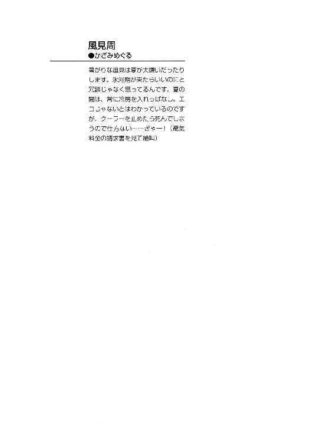
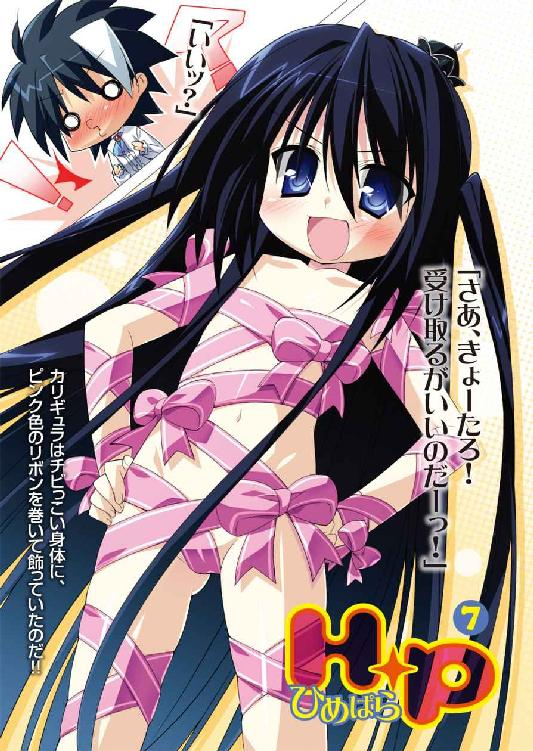
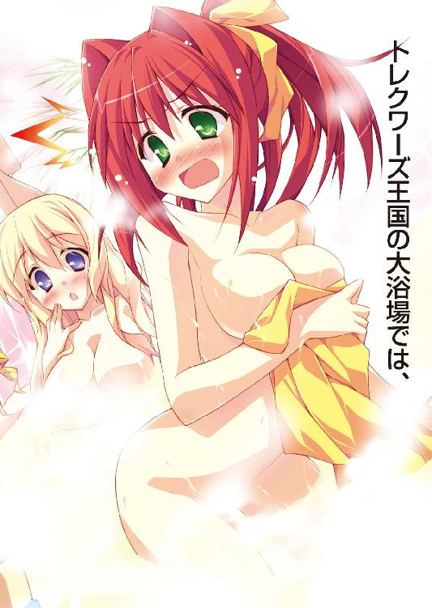
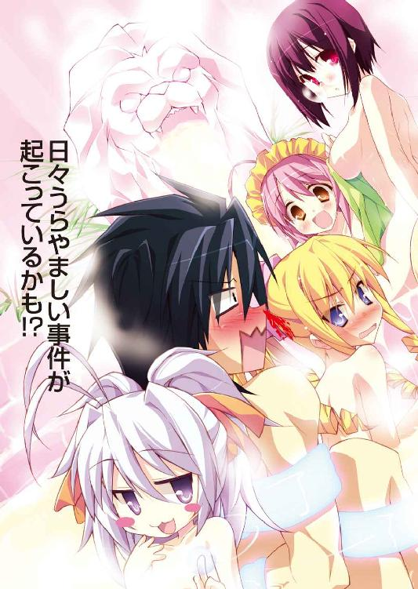
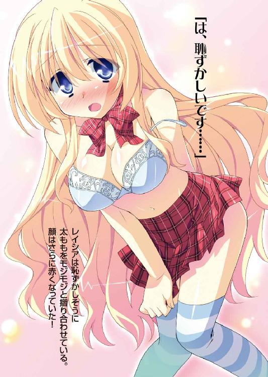

Ｈ＋Ｐ
─ひめぱら─
風見 周

富士見ファンタジア文庫
本作品の全部または一部を無断で複製、転載、配信、送信したり、ホームページ上に転載することを禁止します。また、本作品の内容を無断で改変、改ざん等を行うことも禁止します。
本作品購入時にご承諾いただいた規約により、有償・無償にかかわらず本作品を第三者に譲渡することはできません。
本作品を示すサムネイルなどのイメージ画像は、再ダウンロード時に予告なく変更される場合があります。
本作品は縦書きでレイアウトされています。
また、ご覧になるリーディングシステムにより、表示の差が認められることがあります。
口絵・本文イラスト ひなた睦月
プロローグ
赤。青。緑。黄色。白。黒。水色。ピンク。オレンジ──。
カルタギア帝国の後宮にいれられた神来恭太郎の部屋には、さまざまな色が溢れていた。
皇帝の居城である《黒炎城》は、ほとんどのものが黒で統一されている。
後宮も例外ではなく、壁も天井も床も調度品さえも黒かった。ついでに、恭太郎も黒髪に黒い瞳。窓の外には、月の輝く夜空。
周囲にあるなにもかもが黒いと言って差し支えないだろう。
だが、そんな黒ずくめの部屋が、今はカラフルな色彩で埋め尽くされていた。
部屋の一隅に山を成すほど大量にプレゼントの箱が積まれていたのだ。色鮮やかなリボンと包装紙が使われているのである。
黒いシーツの敷かれたベッドに腰掛けた恭太郎は、プレゼントの山を見てため息を吐いた。
「包装を解くだけでも一苦労だな......」
でも、包みを開けなかったら、きっとカリギュラが怒るだろうし......。
これらは、全てカルタギア帝国の女帝カリギュラが送りつけてきたものだ。
最初に小さな包みを送りつけてきたときは、なにかの罠かと思った。
だが、開けてみたら──中に入っていたのは金貨だった。《女帝カリギュラ 即位記念金貨》と刻印されている。
それ以来、次から次へと贈り物が届けられるようになったのだ。
指輪、ネックレス、ピアス、ブレスレット、ドレッシーなシャツ、毛皮のコート、龍鱗の鎧、魔法駆動の腕時計、絵画、山海の珍味詰め合わせ、カルタギア帝国のご当地キャラのぬいぐるみ──などなどなど。
ある時は、カルタギアの紙幣が大きな箱にみっちりと詰め込まれていたこともあった。
「どうしろって言うんだよ、こんなもの......」
いきなり高価なものをもらっても困ってしまう。
「どうしろって、決まっているであろう？」
ドアの向こう側から、声が響いてきた。
「素直に喜べばいいのだ！」
ノックもせずに、扉が勢いよく開かれる。
マントを纏ったカリギュラが、大またで部屋へと入って来た。
だが、そのようすを擬音で表現するなら『ちょこちょこ』なんて感じになるだろう。
他国からは《暴帝》などと呼ばれて恐れられているカルタギア帝国の女帝──カリギュラ・フィンランディア・カルタギア。
彼女は実は、まだ九歳になったばかりの女の子なのだ。
背の高さも恭太郎の腰の辺りまでしかない。ぷっくりとした丸いほっぺも、くりくりした瞳も、ぺったんこの身体つきも、全てが幼女っぽさを醸し出している。女帝らしいものと言えば、手に握った錫杖と床につくほど長い黒髪の上に載せられた小さな王冠くらいのものだろう。
だが、彼女が巨大軍事帝国の帝王であることは間違いがない。
彼女の後ろに付き従って、マントを羽織った三人の女性が入ってくる。
黒髪の美女将軍──キスト・カラサイシュ。
筋骨隆々の美丈夫──ムージ・トラファルガー。
冷徹な女軍師──アスピア・バリファックス。
彼女たちはカルタギア帝国の四将軍だ。
強大な魔力を持つ将軍たちが、目の前にいるちっこい女の子に忠誠を誓っているのである。女帝の命令であれば、死すらも厭わない。どのような死地にも果敢に攻め込むだろう。
ムスッとしたように唇を尖らせて、女帝は怒鳴った。
「きょーたろめ！ たくさんの贈り物をしてやったのに、なにゆえ貴様は喜ばぬのだ！」
「カーリー。きみは俺を喜ばせたかったのか？」
カーリーというのはカリギュラのことだ。特別に、そう呼ぶことを許可されている。
「無論だ。この本に『プレゼントをされると、王仕さまは喜ぶ』と書かれていたから従ってみたのだ」
カリギュラは本の表紙を掲げて見せた。
書かれているタイトルは《王仕さまをトリコにする一〇〇の方法》。
著者名は──ピコル。
ピコル師匠、何冊もお世継ぎづくりの指南書を出版してたんですね......。カルタギア帝国でも、俺を苦しめるんですか......。
「だが、貴様はちっともうれしそうな顔をせぬではないか」
「あまり高価なものをもらっても困るだけだよ......」
というか、どうして俺を喜ばせようとしてるんだ？ 意味がわからないぞ。
女帝は苛立ったように恭太郎を睨み付けてくる。チビっコなのに結構な迫力だ。
「仕方がないから、妾はこの本に書かれている『最高の贈り物』を貴様にやろうと思う」
「最高の贈り物......？」
ピコル師匠の本に書かれてたって時点で、嫌な予感しかしないんだけどな。
戦々恐々とする恭太郎をよそに、カリギュラは高らかに言いはなった。
「さあ、きょーたろ！ 受け取るがいいのだーっ！」
カリギュラは羽織っていたマントを放り投げた。
「いいッ？」
驚きのあまり、恭太郎は息を詰まらせてしまう。
カリギュラはハダカだったのだ！
いや、正確に言うと全裸ではない。
チビっこい身体にピンク色のリボンを巻いて飾っている。
至る所でちょうちょ結びをしてあるのは、可愛らしくもあったが......。
胸の先端とか、おまたとか、危ない部分は辛うじて隠れてるだけだ。露出度がとんでもなく高い。きわどすぎるって！
「書物によれば、プレゼント攻勢の最終手段！ 《私自身がプレゼントよ》作戦というものだそうだ。おい、アスピア」
「──ハッ」
鋭く返答をしたアスピアも、マントを捨てた。
作戦参謀も身体にリボンを巻いてるだけの姿となる。
クールな容姿に似合わず、アスピアはおっぱいがデカい。リボンで巻いて大事な部分を隠している姿は色っぽかった。心臓がバクバク言い出す。興奮するなよ、俺！
「つーか、どうしてあんたまで!?」
ショートカットの銀髪を搔き上げつつ軍師将軍は、抑揚に乏しい冷たい口調で言い放つ。
「カリギュラさまを補佐するためだ。我が主君は貴様の喜ぶ顔を見たがっておられる。その一助となれれば本望だ」
「だからって、恥ずかしくないのかよ......」
自分の頰が赤くなってしまうのを感じて、恭太郎は顔を手で覆いつつ尋ねる。
胸の先端は一本のリボンが隠しているだけだ。今にもポロリとなにかが見えてしまいそうである。
アスピアは淡々とした口調で答えた。
「は、恥ずかしくはないぞ。トラキア人はゆら......ゆらゆらゆらゆ......揺らがないのだ」
明らかに揺らぎまくってるじゃないか。
「アハハハ、アスピアだけではないぞ！」
カリギュラが高笑いする。その瞬間、キストとムージの肩がピクッと震えた。
「ま、まさか......後ろの二人の将軍も同じような格好をしてんのか!?」
カリギュラは錫杖を掲げた。
「おやめください！」「勘弁してくださいよ、カリギュラさまっ！」
将軍たちは悲痛な声をあげたけれど、容赦なく女帝は錫杖を振るう。
二将軍を覆っていたマントが一瞬で消え去った。
露わになった二人のカラダを見て、恭太郎は心臓が止まるかと思った。というか、ちょっと止まった。
キストは細身の引き締まった身体つき。ムージは筋骨隆々。
対照的なボディラインを持つ二人のカラダに、リボンのように細くて長いものが巻き付いている。
だが、それはどう見てもリボンじゃなかった。
──麻縄だ。
ＳＭで使うような縄によって、二人のカラダがギチギチに締め付けられていたのだ。
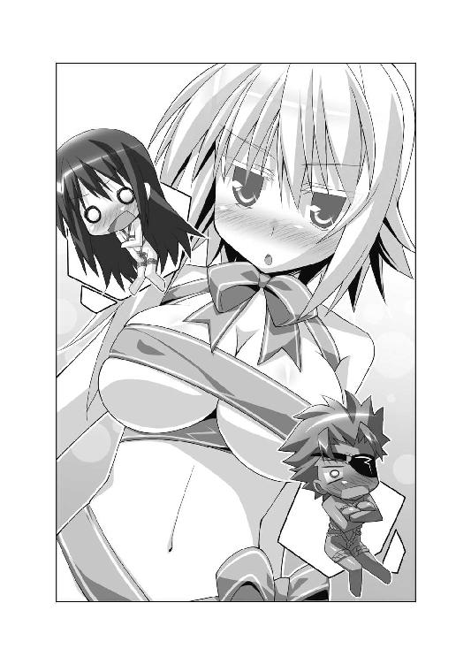
胸は強調するようなカタチでくびり出され、オナカや太ももに縄が食い込んでいる。
おっぱいの先端や、股の間にも縄が回されているため、大事な部分は辛うじて見えていないが......。
「将軍であるこの私が......縄で縛られるなんて屈辱だ......恥ずかしすぎる......」
「縄が食い込んじゃってるぜ。あんまり見るんじゃねえよ、神来恭太郎」
オトナの女性が縛り上げられ、恥ずかしそうに身体をくねらせている姿は、とてつもなくえろかった。恭太郎にＳっ気があったら、ムチを振り回して調教プレイを始めかねない勢いだ。
「妾が一時間以内に落とせと命令した砦を、この二人は落とせなかったのだ」
「五分オーバーしただけじゃないですかっ！ それぐらい大目に見てくださいよっ！」
ムージが言い返すが、女帝はフンと鼻を鳴らす。
「許さぬ。妾の命令は絶対なのだっ」
恭太郎の方を向き直り、女帝は続ける。
「キストらには妾の考案した《恐怖の一〇八罰》の一つ《えすえむ》の罰を受けてもらった。リボンを巻いた妾と大差がない格好だから、一緒に連れてきたのだ」
「恐れながら、全然違うかと存じますッ！」
丁寧な口調でキストがツッコミを入れる。《兇竜将軍》とも呼ばれて恐れられる将軍が、羞恥のあまりプルプルと震えていた。
部下の言葉を軽やかに無視して、カリギュラは薄っぺらな胸を張る。
「というわけで、きょーたろ！ 妾自身がプレゼントなのだ！ オマケで将軍どももつけてやった！ さあ、受け取れっ！」
恭太郎の方に向かって、カリギュラが駆け寄ってくる。
走った衝撃で、ちょうちょ結びが解けはじめた。
「だああーっ！ 走っちゃダメだって！ リボンが解けちゃうよ！」
「構わぬ！ むしろ、貴様が妾のリボンを解くがいいのだーっ！」
解くことなんてできるわけないだろ！ 幼女のカラダに欲情しちゃうようなことがあれば、お天道様に顔向けできない。姉上に知られたらその場で切腹を申しつけられちゃうよ！
大慌てする恭太郎なのだったが──
「ふわぁっ!?」
女帝の小さな悲鳴が聞こえた。
解けかけたリボンを踏んづけて、カリギュラが転びそうになったのだ。
大理石の床の上に倒れ込みそうになる。
「カーリー！ 危ない!!」
考える前にカラダが動いていた。
すぐさま飛びついて、女帝を支えてあげる。
しっかりと抱きしめたまま、恭太郎は腕の中にいる女帝に尋ねた。
「大丈夫か？ 怪我はないか？」
「......うむ。平気だ」
「よかった......」
安堵の息をもらしつつ、カリギュラに微笑み掛けた。黒髪を撫で、優しい声で諭す。
「リボンを巻いて迫るなんてことするから転ぶんだよ。気をつけてくれよな」
すると、女帝の顔がみるみるうちにピンクに染まっていった。
「......きょーたろは、ズルいのだ」
「へ？ 俺がズルい？」
「うむ。ズルい。とてつもなくズルっこなのだ......」
恭太郎の腕の中で、カリギュラはあぅあぅと唇を震わせる。
「どんなに高価な金銀財宝を送っても、ちっともうれしそうな顔をしないのに......。妾が転んでも怪我をしなかったとわかっただけで、いとも簡単にうれしそうに笑うとは......貴様は本当にズルいのだ」
真っ赤な顔のまま、カリギュラはぎゅーっと恭太郎に抱きついてきた。
リボンがズレて、ほんのちょっぴり膨らんだ胸がフニフニと当たってる。
「そんなことされたら、きょーたろのことがもっと好きになってしまうではないか」
石像と化したように硬直してしまう恭太郎。
甘えたような声で、女帝は宣言をする。
「貴様は妾のものだ。ずーっとずーっと一緒にいるのだぞっ。そして、いつの日か妾と世継ぎをつくるのだ！」
嗚呼、姉上──。
どうやら俺は、この幼い女帝さまに気に入られちゃったみたいです。
俺はトレクワーズ王国に帰りたいと思っていたのに、どうしてこんなことになっちゃったんでしょうか......？
×××
カルタギア帝国の後宮で、神来恭太郎が苦悩の日々を送っていたのと同時刻。
トレクワーズの王宮では、ユフィナを除く四人のお姫さまたちが夕食をとっていた。
ウィッチェリア大陸において、トレクワーズ料理は美味しいことで有名だ。ウィッチェリアの三大料理に数えられるほどである。
王女さまに饗されている食事は、その中でも最高峰。超一流の腕を持つ王宮料理人が腕をふるった一品だ。ウィッチェリア大陸に住まうものなら、誰もが一度は口にしたいと思う料理だろう。
しかしながら。
そんな美味しい料理を食べているとは思えないほどに、王城のダイニングホールの空気は沈んでいた。銀のフォークが立てる音がカチャ...カチャ...と空しく響くだけである。
「ごちそうさまぁ......」
チビっコと化している第五王女のメルルが、ナプキンで口を拭った。
そのようすを、一〇歳ほどの少女に変身している第二王女──レイシアが見とがめる。
「まあ、メルル......。ぜんぜん食べてないではありませんか」
「ごめんなさい......」
「カラダの具合でも悪いんですか？」
第四王女のアルトの問いかけに、メルルはうつむいたまま首を横に振る。
「そんなことないよ。メルルは元気だよ......。ただちょっとしょくよくがなくて......」
カチャリ...──その言葉に同調するように、第三王女のエリスもフォークを皿に置いた。
「私も......もういりませんわ」
「まあ、エリスもたくさん残してますね」
「そういうレイシアだって、ちっとも食べてませんわよっ」
エリスは唇を尖らせる。レイシアのお皿にも、多くの料理が残されていた。
いや、彼女だけじゃない。その場にいる誰もが、食が進んでいなかった。
「あのっ......そのっ......こんなことを言っては怒られるかもしれませんが......」
子どもにしては大きめな胸をしぼませるように、アルトはため息を吐いて続ける。
「あまり食事が美味しく感じられません......」メルルもコクコクと同意した。
「そうだよね。前はすっごくおいしかったのに......なんだかあじけないよ......」
「フン、コックを首にすればいいのですわっ。腕前が落ちたのよっ！ きっとそうに違いありませんわっ！ 他に理由なんて......！」
暗い気分を吹き飛ばすように勢いよくまくしたてたけれど、エリスは悲しそうにうつむいてしまう。
「他に理由なんて......考えられませんの。このエリス・レムリス・トレクワーズが......寂しさのあまり食事が喉を通らないなんて、あってはならないことですもの......」
レイシアもフォークを置いてしまった。子ども用のドレスがはち切れそうなほどに膨らんでいる胸元を見下ろすように、ションボリとうつむいてしまう。
「恭太郎さまがいた頃は、王宮全体が明るかったのに......今は火が消えたようですね」
「昔に逆戻りしたみたいですぅ......」
メガネの下の瞳を微かに潤ませて、アルトは辛そうに呟いた。
王仕さま二〇〇〇人が拉致され、母親である女王の病気も悪化して、カルタギア帝国の脅威が迫っていて──以前の王宮は絶望に満ちていた。
だが、最強の王仕さま候補である恭太郎を召喚したおかげで、トレクワーズに希望の光が差し込んだのである。
「逆戻りではありませんわ」
エリスはフンと鼻を鳴らした。
「それ以下、ですの......」
「そだね。恭太郎おにいちゃんがきてから、ものすご～～～く楽しいことがいっぱいだったもんね。ドキドキしちゃうようなえっちなハプニングが毎日起こってて......」
メルルの言葉を聞いて、その場にいる全員が遠い目をした。
恭太郎が後宮にいた頃の日々を、思い返していたのだ──。
第一話 ついに、少年は王女さまと一つになった。
『子孫を残すというのは、動物としての本能なのじゃ。ケダモノになってしまえば、恭太郎も大喜びでお世継ぎづくりに精を出すに違いないのじゃ。そこで、今夜は姫さまがたには動物のコスプレ姿で恭太郎に迫って頂きますのじゃ！ 題して《雄叫べ☆アニマルコスプレでガルルル大作戦》！ 恭太郎の童貞も今宵限りじゃー！ ふゥははははー!!』
「──だ、そうですよ、恭太郎さま」
「その理屈はおかしい！」
ある夜。トレクワーズ王国の後宮。神来恭太郎の自室として与えられた部屋。
第二王女のレイシアの言葉を聞いた恭太郎は、ベッドの上で後ずさりをした。
後宮のヌシであるピコル師匠の口車に乗って、お姫さまは本当にアニマルコスプレに身を包んでいたのだ。
レイシアは牛のコスプレだった。首にはカウベル。ふんわりとした髪からは、ちょこんと小さな角が顔を出している。ホルスタイン柄のミニスカートの中から筆のようなしっぽが伸びていた（どこから生えてるんだ？）。
特筆すべきは、やはり胸だろう。
彼女ははとにかくバストが大きい。牛柄のビキニから柔らかそうなおっぱいが思い切りはみ出している。今にもビキニが弾けて、胸がぼゆよんと飛び出してしまいそうだ。
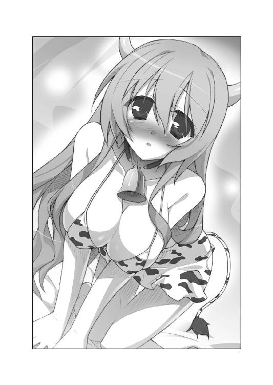
胸がデカいから乳牛のコスプレをしてるのかな？ とか妙なことを考えてしまう。
「レイシアばっかり見ないで、私の方も見なさい！ この無礼者っ！」
「そうだよー、メルルだってすっごい可愛い格好してるんだからねっ！」
第三王女のエリスと、末っ子のメルルがベッドの上で揃って唇を尖らせる。
エリスは犬のコスプレだった。首には鎖のついた首輪。豪奢な縦ロールの髪からはシェパードみたいな尖った耳。黒い毛皮のビキニ。フサフサしたしっぽが、彼女のおしりの動きに合わせて揺れている。綺麗な脚は、犬の足跡が刺繡された黒いストッキングに包まれていた。ガーターベルトというのは、どうしてこんなに色っぽいんだろうか？
「どうどう？ 似合ってるでしょっ？」
メルルちゃんは熊のコスプレかな。茶色い毛皮のチューブトップ。丸いシッポ。ツインテールの髪からは丸耳が生えてる。ぷにぷにした肉球＆鋭いツメの伸びたでっかい手足が可愛らしい。
「えへへ......ちなみに、クマさんがプリントされたぱんつをはいてるんだよっ。後で見せたげるねっ」
「いや、確認する必要はないからねっ！」
このオマセなお姫さまは本当に見せちゃうから困るんだっ！
「はわわわっ、私はあんまり可愛くなくてすみません......」
困り果てたような声でメガネを掛けた王女さま──アルトが呟く。
アルトはウサギのコスプレをしてる。純白のビキニ＆丸いシッポ。ショートカットの髪からは、長い耳が伸びている。
本人は似合っていないと思ってるみたいだけど、そんなことはなかった。
メチャクチャ可愛いよ、アルトちゃん。それに、すごくセクシーだ。
恭太郎は生唾を飲んでしまう。
アルトの大きな胸の下半分が白い毛皮のビキニから顔を出しているのだ。下チチのまろやかな丸みから目が離せなかった。
「なんで私まで、こんな格好しなきゃいけないのよ......」
恥ずかしそうに腕組みをして胸元を隠しつつ、第一王女のユフィナが唇を尖らせた。
彼女はキャットガール姿だった。首には鈴形のチョーカー。三毛猫柄のボディスーツ。おしりには長いシッポが生えている。
「女王陛下のご命令だから従ったけど......ヘンなことしたら引っ搔くからねっ！」
ピンク色の肉球がついたおっきな手で恭太郎を指さした。指先には鋭いツメが光ってる。
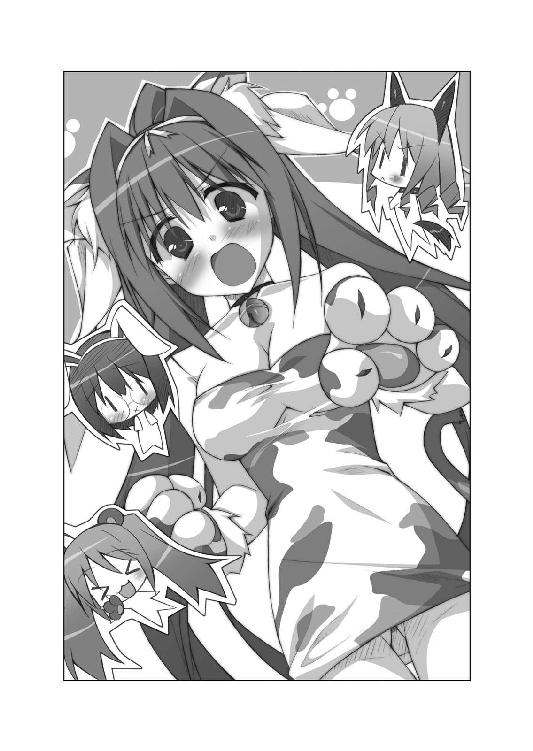
トレクワーズ王国に住む男性だったら《トレクワーズの五美姫》のアニマルコスプレ姿を見たら、歓喜のあまりその場で昇天してしまうだろう。
だが、恭太郎はイヤイヤをするように首を横に振って叫んだ。
「ヘンなことなんてしないって！ むしろ、俺がケダモノたちに襲われてる図にしか見えないだろっ！」
すると、ホルスタイン姿のレイシアが「違いますよ」と窘めた。
「この格好で迫ることで、恭太郎さまにもケダモノになって頂くのが目的なんです」
第二王女の言葉を、ちぃ姫さまが継いだ。
「ピコルししょーから、決めゼリフを教わってるんだよっ！ それを聞いたら、恭太郎おにいちゃんがイチコロになっちゃうんだってさっ！」
「決めゼリフ......？」
意味がよくわからないけれど、ろくでもないというのは聞かないでもわかる。
「遠慮しておくよ！」
恭太郎がベッドから飛び降りて逃げだそうとした瞬間、エリスがフンと鼻を鳴らして、
「【麻痺】！」
途端にカラダが硬直してしまう。意識はあるけど指一本動かせない金縛り状態。いつも言ってるけど、魔法はズルイって～～っ!!
「逃がすワケにはいきませんわっ！ 恭太郎にはケダモノになって、私を襲ってもらわなければ困りますのっ！」
顔を真っ赤にしてそっぽを向き、慌てたように小声で付け加える。
「と、当然、玉座を継ぐために必要だから、こんなことを言ってるんですからねっ。別に恭太郎に襲われたいという意味ではゴニョゴニョゴニョ」
コホンコホン──小さく咳払いをして、レイシアは恭太郎に近づいてくる。
「それではまず、私から決めゼリフを言わせていただきますねっ」
ちょっぴり頰を染めつつ、両手を背中に回した。
ベッドにペタンと座ったまま、大きすぎるおっぱいを無防備に突き出す。
潤んだ瞳で、じーっと恭太郎を見つめて、
「恭太郎さま......。レイシアのおちちをしぼってください......」
ははーん、なるほど......。
決めゼリフってのは、動物のコスプレに即した色っぽいセリフを口にするって意味だったのか。
恭太郎は目の幅涙を流しつつ、ベッドに突っ伏したくなった。
（......効果はばつぐんですよ、ピコル師匠）
おねだりするようなレイシアの表情と相まって、すごくえっちぃ。
彼女の言葉通り、突き出された爆乳をもみたくなってしまう。
「コホン、次は私ですわね......」
エリスも硬直している恭太郎の方へ、膝立ちのまま近寄ってくる。
「きょ、恭太郎......っ」
唇をあゎあゎさせつつ、首輪に繫がった鎖を恭太郎に差し出して。
「イケナイ私を躾けてくださいまし......」
ぼわわわっ──言い終えた途端に耳の先まで真っ赤に染まってしまう。
「こんなセリフ、屈辱ですわ～っ」
恭太郎も自分の顔が熱くなるのを感じた。恥ずかしそうなエリスの表情が凶悪なくらいに可愛かったのだ。
「次はメルルだよ～♪」
イタズラっぽい表情でメルルちゃんが恭太郎にすり寄ってくる。
──クマの決めゼリフってなんだろう？
ちぃ姫さまが口にしたのは、恭太郎の発想を遥かに凌駕したものだった。
「ねえ、恭太郎おにいちゃん......？」
照れ笑いを浮かべつつ、茶色いスカートをちょっとだけめくる。
白いぱんつがチラリと見えた。
甘えるような上目遣いで恭太郎を見上げながら、メルルちゃんは囁く。
「おにいちゃんになら......メルルのハチミツを舐められちゃってもいいよ？」
意味がわからーんっ！ でも、猛烈にドキドキするのはなぜですかーっ!?
大声で叫んで、全国津々浦々に向けて問いかけたかった。
「つ、次は私ですね、はゎわわわ......」
猟師に捕まったウサギみたいにプルプル震えながら、アルトもベッドに乗ってきた。
セリフを口にする前から既に顔が真っ赤だ。レンズの下の瞳が潤んでる。
「あのっ...そのっ...わ、私はウサギですっ。寂しいと死んじゃうので......」
長い耳を生やしたアルトが、恭太郎のシャツの裾を指先で摘む。
「恭太郎さまにギュッとして欲しいですぅ」
麻痺の魔法が掛かっていて良かったと初めて思った。
恥ずかしそうにセリフを口にしたアルトは、あまりにも可愛くて。カラダが麻痺してなかったら今すぐにでも抱きしめていただろう。
「恭太郎さま......」
レイシアがさらに近づいてくる。
もにゅにょんっ──ホルスタインみたいな大きな胸が腕に当たってるよ!?
「......交尾をいたしましょう」
「だ、ダメですわっ。お世継ぎは私と一番最初につくるのですっ」
「ケダモノさんになっちゃってもいいんだよ、おにいちゃんっ」
「はわわわわわ......」
うわ、マズイ......。これはマズイぞ......！
四人のお姫さまにえっちなセリフで迫られて、既に恭太郎の我慢は限界。発情期が来たみたいにムラムラしまくりだった。
今にもケダモノと化して襲っちゃいそうだ！ 気を確かに持て、神来恭太郎っ！
そこで、メルルちゃんが後ろを振り返った。
「あ、そういえば、ユフィナおねえちゃんは決めゼリフを言ってないね」
第一王女はそっぽを向いたまま、ベッドの脇に立っていた。
「わ、私はいいわよっ！」
「そんなこと言わずに、ユフィナ姉さまも参加してください」
レイシアが微笑みながら促す。
「お姉さまのセリフって、どんな感じでしたかしら？」
エリスの疑問にアルトが答えた。
「えっと、ピコルさまが教えてらっしゃったのは確か、『恭太郎さまに甘えたいにゃん☆』とか、そんな感じだったように思います」
「かわいいー！ 聞きたーい！」
メルルちゃんが期待に満ちた瞳でユフィナを見つめる。
女王陛下の命令でもあるからだろうか。
第一王女は唇を震わせながら、決めゼリフを言おうと試みた。
「えっと、なんていうか、その......きょ、恭太郎に......あ、あまっ......あまあまっ......」
ま、まさか、本気で言うつもりか？
ユフィナもお世継ぎづくりを迫ってくるのかっ!?
戦々恐々とする恭太郎だったが、
「言えるワケないでしょ、そんなことっ！ っていうか、えっちなことはダメよーっ！」
「ぐべらばっ!?」
鋭いツメがついた肉球で、恭太郎は思いっきりパンチされてしまった。
キリモミしながら吹っ飛び、窓を突き破って星空へとロケットのように飛んでいく。
っていうか、なぜ俺が殴られるんだよ!?
......でもまあ、お姫さまたちに手を出さずに済んだから助かったけど。
夜空で華麗な放物線を描きつつ、恭太郎は複雑な心境に陥るのであった──。
×××
「う～む、うまくいかぬのじゃ......」
翌日のことである。
《雄叫べ☆アニマルコスプレでガルルル大作戦》が失敗したと知った後宮のヌシ──ピコルは教官室で腕組みをしつつ唸った。
王女さまたちを焚きつけて恭太郎を誘惑してもらい、興奮した王仕にお姫さまを襲わせる──それがピコルの立てる作戦の骨子だ。どの作戦でも、基本戦略は同じである。
ピコルの考える策により、お世継ぎづくりに悩む幾人もの王仕さまやお姫さまを救ってきた。後宮のヌシの名は伊達ではないのだ。
ところが、《トレクワーズの五美姫》と恭太郎に関しては失敗続きだった。恭太郎がカタブツすぎることに加えて、嫌がったユフィナが恭太郎をぶっ飛ばして失敗してしまう展開が多いのである。
「他の姫さまがたはノリノリなのじゃ。ユフィナさまがネックじゃのぅ......」
かといって、ユフィナをお世継ぎづくりから外してしまうわけにもいかない。
第一王女は《烈火の王女》と呼ばれて敵国から恐れられるほど魔力が強いのだ。《トレクワーズの五美姫》の中では最強である。
「どうしたらいいんじゃろうなぁ......？」
教卓に頰杖をついて、しばらく悩んでいたピコルはポンと膝を叩いた。
「そうじゃ！ こんな時に役に立つマジックアイテムがあったはずじゃ！」
後宮内にあるアイテム保管庫へと走った。
アイテム保管庫にはさまざまな《道具》が整理して納められている。
具体的にどのように使うかは説明を控えるが、姫さまとのえっちが楽しく＆気持ちよくなっちゃうヒミツのアイテムが、いつでも使用できる状態になっているのだ。
ピコルは倉庫の一番奥へと向かった。木箱に書かれた整理用の記号を頼りに、目的の木箱を探す。
「うむ。これじゃこれじゃ......」
もう何百年も開けられていない木箱から、アイテムを取り出す。
それは小瓶に入った紫色の輝くゼリー状の液体だった。
「これさえあればユフィナさまと恭太郎は仲良くなっちゃうに違いないのじゃ！ 題して《いつでも二人は一緒だヨ☆ぴったんこ大作戦》！ 二人がラブラブになっちゃうのも時間の問題なのじゃ！ ふゥははは──ッ！」
×××
「最悪......。本当に最悪だわ......。女王陛下までグルなんてズルイわよ......」
夕刻。王宮。ユフィナの部屋。
体操着姿の第一王女はソファで膝を抱え、この世の終わりが来たようなため息を吐いた。
彼女の隣に腰掛ける恭太郎も、同じようにため息を吐く。
「ピコル師匠め......。なんてことをしてくれたんだ......」
二人は絶望的な表情をしていたけれど、その手はしっかりと握られていた。
いや、正確に言うならば、手を離すことができないのだ。
恭太郎は一時間ほど前の出来事を思い出した──
「こんな格好で失礼します、女王陛下」
全てが白く輝く荘厳な空間である女王の間。
玉座の代わりに据えられているベッドに向かって跪きながら、ユフィナが無礼を詫びた。
近衛騎士団の訓練の途中で呼び出されたからだろう。彼女は体操服を着てる。
横で跪いている恭太郎に一瞬だけ視線を向けた後で、ユフィナは尋ねた。
「火急の用件ということですが......いったいどうなさったんですか？」
ベッドを囲うベールの向こう側から、威厳のある声が降ってくる。
「ユフィナ......あなたがお世継ぎづくりを嫌がって、恭太郎を痛めつけてばかりいるとピコルから聞きました」
「うぐ......」
ユフィナはバツが悪そうに眉をひそめて、
「別に痛めつけてるわけじゃ......。コイツがえっちなのがいけないんですっ！」
「恭太郎は我が国を救うためにやってきた救世主です。なんとしても恭太郎との間にお世継ぎを作らねば、トレクワーズ王国に未来はないんですよ？」
「そ、それはわかってるけど......好きでもない人とそーゆーことをするのは、私はイヤなんですよっ！」
ベッドの上から微かな嘆息が聞こえる。
「ユフィナは困った子ね......」
それは女王ではなく、母親としてのセリフのように思えた。
「少しずつで構いません。お世継ぎづくりに励みなさい。第一王女として、妹たちに手本を見せなければなりませんよ？」
「は～～～い......」
唇を尖らせ、渋々といった感じで返事をする。お姫さまと言えど、国を統べる女王の命令には逆らえないのだ。
「ユフィナ、恭太郎と仲直りの握手をなさい」
跪いていた恭太郎は立ち上がり、ユフィナと向かい合った。
ムスッとした表情の第一王女は、恭太郎にだけ聞こえるぐらい小さい声で詰ってくる。
「まったく、あんたのせいで叱られちゃったじゃないっ」
「なんで俺のせいなんだよっ」
「うっさい。王女さまに口答えするんじゃないわよっ」
文句を言いつつ、ユフィナは手を差し伸べてくる。
（これのどこが仲直りの握手なんだ......？）
恭太郎が複雑な気分で握手に応じたとき。
「おおっとー、手が滑ったのじゃー！」
柱の陰からピコルが飛び出してきた。
握手している二人の手に、紫色の光を放つゼリー状の物体をぶちまける。
ゼリーは二人の手に吸い込まれて消えた。
「うわっ、なんだこれはっ!?」
驚いて、恭太郎は手を引っ込めようとしたのだが──
「きゃわわっ!?」
手と一緒にユフィナが引っ張られ、恭太郎の方へ倒れ込んできた。
慌てて支えてやる。
恭太郎に突然肩を抱かれ、ユフィナの顔がパッと赤くなった。
「な、なにすんのよーっ!!」
恭太郎を突き飛ばし、王女さまは手を振り払おうとしたけれど──
「うおおおっ!?」「きゃあああっ!?」
手が離せずに、二人は一緒に倒れ込むことになってしまった。
「ふゥはははーっ！ さっそく効果が現れたようですじゃ！」
女王の間にもつれて転がる二人を眺めつつ、ピコルが高笑いをする。
「《ぴったんこスライム》というマジックアイテムを使わせて頂きましたのじゃ！」
「な、なんなのよ、それ？」
明らかに嫌な予感を感じている顔で、ユフィナが問い返す。
「名前の通り、二人のカラダをぴったんことくっつけておくためのアイテムですじゃ！」
玉座代わりのベッドからも、微かな笑い声が聞こえてきた。
「そのアイテムは二四時間ほど効果が持続するそうです。ユフィナ、そして恭太郎。二人で共に過ごし、わだかまりを解きなさい」
「ウソでしょ......？」「ウソだろ......？」
白大理石張りの床に倒れたまま、恭太郎とユフィナは顔を見合わせたのだった──。
ユフィナの部屋へと避難した二人は、いろいろ手を離そうといろいろ試みた。
思い切り引っ張ってみたり、解呪の魔法を使ってみたり。だが、どうやっても手を離すことはできなかった。
ことお世継ぎづくりに掛けては用意周到すぎるピコル師匠のことだ。そう簡単に取れるようなアイテムは使わないだろう。
もう何度目かわからないため息を吐いて、ユフィナは呟いた。
「参ったわね。これじゃ着替えもできないじゃない......」
ユフィナは体操服＆ブルマという格好をしている。
「くっついてる部分はズラせるんだ。着替えぐらいなら不可能じゃないだろ」
手を離そうと試している時に気付いたのだが、そのまま手をズラせば接合部は移動させることができた。
しかも、確かめてみたところ、薄手ならば服が挟まっていても手をズラせるようだ。
恭太郎が接合部となっている手のひらをズラしてユフィナの手首から二の腕へと動かし、肩から背中を通過して、足の方へと移動させることだって可能なのである。
イメージとしては、強力な磁石によって一部がくっついてる感じだろうか。
引き離すことは困難でも、スライドさせることはできる。加えて、磁石の間に紙などの薄いものを挟んでも吸着力は維持されるってワケだ。
事実、最初は右手同士がくっついていたのだが、今は接合面をスライドさせて、ユフィナの右手と恭太郎の左手がくっついた状態にしてある。
恭太郎の言葉を聞いて、ユフィナが睨み付けてきた。
「そーゆーことを言ってるんじゃないわ！ あんたが一緒じゃ服を脱げないって言ってるのよっ!!」
「そ、そうか。そうだよな、すまん」
頭を下げた恭太郎を見て、ユフィナはハッと口を押さえた。
「......ごめん。言い過ぎたわ。今回のことに関しては、あんたは悪くないもんね。全部ピコルのせいだもん」
女王の言葉によれば、二四時間ほど経てば勝手に外れるらしい。
（逆に言えば、その間は、ずっと手を繫ぎ続けたままってことか......）
ユフィナの手は思った以上に小さくて、柔らかくて、しなやかだった。
ただ触れ合っているだけなのにドキドキする。手に汗をかいてしまいそうだ。
ユフィナも同じ気持ちなのだろうか。ちょっぴりピンク色に染まっている頰を隠すようにそっぽを向いた。
「ルールを決めましょ。......私が手に汗をかいちゃっても笑わないこと」
「ユフィナも緊張してるのか？」
「うっさいわねっ。男の人と手を繫いだことなんてないんだからしょうがないでしょ」
顔を背けたままユフィナは尋ねてくる。
「恭太郎はなにか事前に決めておきたいルールがある？」
「そうだな......。うん、レイシアや他の姫さまたちには、手がくっついてることを知られたくないかな」
「どうして？」
「全員が《ぴったんこスライム》を使いたいなんて言い出したら俺は死んじゃうよ」
「......それもそうね。わかったわ。ナイショにしておきましょ。私だって、あんたと手を繫いでるところを見られたくないからちょうどいいわ。あ、それから、もう一つ──」
ユフィナの声が小さくなった。ちょっぴり恥ずかしそうに、ゴニョゴニョと続ける。
「......あのさ、今のうちに、おトイレの方法も考えておきましょ？ せっぱ詰まってからじゃヤバいし......」
そうか......。ユフィナと一緒にトイレも行かなきゃいけないのか......。
ユフィナのトイレシーンなんて、ほんの少しだって見ちゃうワケにはいかない。男として、というか人として。
「ユフィナが手洗いに行くときは、俺が目隠しと耳栓と、ついでに鼻栓を着けるよ。それなら平気か？」
「......うん。恥ずかしいけど、それでいきましょっ。──よしっ！」
気合いを入れるようにグッと拳を握りつつ、ユフィナは恭太郎の方を見た。
「二人で協力して二四時間を切り抜けるわよっ！ 頑張りましょう！」
王女さまは力強く宣言したのであるが。
カラダの一部がくっついたままの生活は予想以上に困難だった。
厳しい試練の連続だったのである──
☆第一の試練──着替え
「いつまでも体操着のままじゃいられないわ。恥ずかしいけど、着替えるわよ」
「どどど、どうやって？」
「......私に考えがあるの。こっち来て」
ユフィナは普段着代わりにしているドレスを用意すると、恭太郎をベッドの方へと引っ張っていった。
「あんたはベッドの横にしゃがんで目を閉じてなさいっ」
そう命じると、ユフィナはシーツの中に潜り込んだ。
なるほど。シーツにくるまったまま着替えれば、俺が見てしまう心配も減るってことか。
「もちろん、絶対に見ないよ。約束する」
ユフィナを安心させるため、できるだけ真剣な顔で頷いた。ギュッと目を閉じる。
「......見たら許さないからねっ」
ほどなくして、ユフィナがなにやらゴソゴソやりはじめた。衣擦れの音も聞こえてくる。服を脱ぎ始めたんだ。
「体操服を脱ぎたいから、あんたの手を私の足の方に移動させてよ。くれぐれもヘンなとこ触らないようにっ！」
「ああ、わかってる」
今は手同士がくっついている。恭太郎は慎重に接している部分を移動させた。
ユフィナの腕を撫でるように肩の方へと滑らせていく。体操服の布地の感触を、手のひらに感じた。
そのまま肩から鎖骨をなぞるようにして、脇腹の方へと手を動かしていく。
分厚い体操服の布地越しに感じるユフィナのカラダは凄まじく柔らかい。女の子のカラダって、どうしてこんなに柔らかいんだろう。しかも、ずっと触れていたくなるくらいスベスベしてる。
そのとき、ユフィナが吐息を漏らした。
「......んっ」
「って、なにヘンな声出してるんだよっ！」
余計にドキドキしちゃうだろ!? ただでさえ、妙な気分になりそうなのに！
「し、仕方ないでしょ！ くすぐったいんだもん！ さっさと手を動かしなさい！」
目を閉じたまま手探りで、脇腹からふとももの方へと手をズラす。
腰骨の辺りを手でなぞったとき、ちょうちょ結びになっている結び目があった。
ブルマは既に脱いでるようだから、これはぱんつの感触だろう。
（つまり......ユフィナは今日は、いわゆるヒモぱんなのか!!）
思わず、ユフィナのヒモぱん姿を想像してしまい──バカバカ、なに考えてるんだ！
頭を振って悪しき妄想を追い払った。
気分を落ち着けるため神来家家訓を脳内で暗唱しつつ恭太郎は手のひらをユフィナの足先まで移動させる。
「......ふぅ。これでいいか？」
「まだ目を開いちゃダメだからね」
またもや、衣擦れの音が耳をくすぐりはじめる。着替えに掛かった時間は二〇分ほどだったろう。だが、恭太郎には途方もなく長く感じられた。
「ＯＫ、もういいわよ」
ユフィナは普段着代わりの白いドレスに着替え終えていた。
再び手のひらを、ユフィナの足の方から手へと移動させる。そして、王女さまと一緒にソファへと戻った。
ただ着替えをしただけなのに、二人とも疲れ切ってグッタリしてる。
（これは先が思いやられるな......）
額を押さえながら、恭太郎はユフィナの部屋の白い天井を見上げるのだった──。
☆第二の試練──お風呂
「ごはんを食べるのも大変だったわね......。なんだか食べた気がしないわ......」
「同感だ......」
夜。夕食を食べ終えたユフィナと恭太郎は二人そろって、ソファにぐったりと寄りかかっていた。
片手がふさがっていて、なおかつカラダがくっついた状態では、うまく食事をすることもできなかったのだ。
試行錯誤の末に二人が辿り着いたのは、『お互いに食べさせ合う』という方法だった。
会話だけで表現するならば、次のようになるだろう。
「次は恭太郎の番ね。なにが食べたい？」
「じゃあ、ニンジンのグラッセを頼む」
「了解。はい、口開けて」
「......あーん」
「って、なんで顔を赤くしてんのよっ」
「ユフィナだって赤くなってるぞ！」
「し、仕方ないでしょ、男の子に『あーん』ってしてあげるなんて初めてなんだもんっ。さっさと食べなさいよね、バカっ」
終始そんな感じ。『新婚のアツアツ夫婦かよっ！』なんて、我ながらツッコミを入れたくなる食事風景だ。
食べてる間ずっとドキドキ。料理の味なんてわかるワケがないよな......。
ユフィナが疲れ切ったような表情で呟く。
「いつもなら食事の次はお風呂だけど......今日はやめておきましょ。恭太郎と一緒じゃムリだもん。本当はすっごく入りたいけど」
「そうだな、それがいい」
恭太郎は入浴が大好きだ。後宮生活における数少ない癒しの時間と言ってもいいだろう。
でも、ユフィナとカラダがくっついたままお風呂に入るなんて不可能だよな。一日くらい風呂に入らなくても、命に別状はないんだ。風邪でも引いたと思って我慢しよう。
ところが。
どこからともなく声が聞こえてきた。
「入浴しないなんて許しませんのじゃ！ 二人で仲良くお風呂でゴシゴシしてもらいますのじゃー！」
「この声は......ピコル!? どこにいるのよ！ 出てきなさいっ！」
「ふゥはははー！ ココですじゃー！」
突然、ユフィナの部屋の天井の羽目板が外れた。
白いローブを着たピコル師匠が、忍者のように逆さまに登場する。
彼女が抱えているのは──タコ!?
空を飛ぶ凧じゃなくて、海にいる軟体生物の鮹だ！
「たこちゅ──っ!!」
謎の叫び声と共に、ピコル師匠はタコの頭をぶっ叩いた。
ぶしゅ～～～っ！ タコの口（？）から大量のスミが発射されて。
「きゃあああっ！」「うおおおっ!?」
恭太郎とユフィナは、全身スミまみれになってしまうのだった。
洗い流すには、風呂に入るしかないってワケかよ。ちくしょうめ......。
「これは緊急事態よ。でも、二人で協力すれば、なんとかなるはずよ！」
「ああ、わかってる。無事に乗り切ろう！」
王宮のバスルーム。脱衣場。
恭太郎＆ユフィナは戦場へ赴く兵士のような面持ちで頷き合った。
二人はスミで汚れた服を脱ぎ、タオルを巻いてカラダを隠している。
「それじゃ、行くわよ！」
「おうっ！」
手を繫いだまま、湯気に煙るバスルームへと突撃した。
後宮にあるお風呂はかなり広くて、温泉宿の大浴場ぐらいのスペースがある。
だが、王宮の浴場はさらに広大だった。庭園のように彫刻が並び、浴槽の中央にはお湯の溢れ出す水瓶を抱えた女神像が立っている。
白大理石でできた洗い場で、ユフィナが指示をしてきた。
「私が先に洗うわね。恭太郎は後ろを向いて、まぶたを閉じてて」
「了解だ」
背を向けて座禅を組む。
やがて恭太郎の鼻を石けんのいい匂いがくすぐる。ユフィナがカラダを洗いはじめたんだ。
すぐ隣にハダカの王女さまがいると思うと、鼓動が高鳴ってしまうが──深呼吸をして、気分を落ち着かせる。鎮まれ、神来恭太郎！ 明鏡止水。無の境地だ！
と、第一王女の声が聞こえた。
「......ねえ、恭太郎。ちょっとだけコッチ見ていいわ」
「ええっ!?」
まさかユフィナまで、レイシアみたいにアグレッシブに迫って来る気か!?
──と思ったら、違った。
「なにを大げさに驚いてるのよ。ちょっと背中をこすってくれない？ 片手じゃ洗えないのよね」
なんだ、そういうことかよ......。
「わかった。じゃあ、そっち見るぞ......」
薄目を開いて、そ～～っとユフィナの方に顔を向けた。
王女さまは洗い場の椅子に腰掛けていた。カラダの前にタオルを当てて胸元を隠している。ユフィナはバストが大きいから普通のタオルぐらいじゃ隠し切れてなくて、横チチの丸みが見えてるけど......無論そんなとこには注目しない。絶対に見ちゃダメだぞ、俺！
背中と言えど、肌を見られるのは恥ずかしいんだろう。頰を染めつつ、泡だったスポンジを渡してきた。
「それじゃ、頼むわね」
スポンジで背中をこする。
微かにスミがついているけれど、お肌は透き通るように白かった。
しかも、絹のように滑らかだ。あまりにも綺麗で、力を込めたら傷がついてしまいそうな気がして怖いほどである。
そして、やはりユフィナはプロポーションもばつぐんだった。
後ろから見るだけでも、ウエストがきゅっとくびれてるのがわかる。そして、バスチェアに載っかってるおしりはぷりんっと柔らかそうで──だから、見ちゃダメだって！
煩悩と戦いつつ、スポンジを動かす。
ユフィナは俺を信用して背中を任せてくれたんだ。妙なことは考えるんじゃない！
「......終わったぞ。綺麗になった」
「ありがと。それじゃまた後ろ向いててね」
再び、座禅を組む恭太郎。
ユフィナはカラダの泡を流したようだ。ほどなく水音が聞こえてきた。
次は恭太郎の番だ。彼女にも同じように後ろを向いて目を閉じてもらい、手早くカラダを洗う。
「恭太郎の背中も洗ってあげようか？」
「ええっ!?」
「だから、大げさに驚きすぎよっ」
ユフィナがそんなことを言うなんて、想像もつかなかったのだ。
だが、片手では背中をうまく洗えないのも事実だった。
ちょっぴり緊張しつつ頼んでみる。
「......じゃ、じゃあ、よろしく頼むよ」
「ＯＫ。任せといて」
スポンジを渡す。
「王女さまに背中を流してもらえるなんて、そうそうないわよ。感謝しなさいよねっ」
ユフィナは軽口を叩いたけれど、背中を洗う手付きはどことなくぎこちなかった。
自分でもそれに気付いてるんだろう、苦笑しながら言い訳する。
「男の人の背中を洗ってあげるなんて初めてだからちょっぴり緊張しちゃうわね。恭太郎ごときにドキドキするなんて悔しいわ」
「『ごとき』ってひどいな」
恭太郎が眉をひそめると、楽しげに笑う。
「はい、終わりっ！」
ぱちーんっ！──泡まみれの恭太郎の背中を平手で叩いた。
「痛～っ！ どうして叩くんだよっ!?」
振り返って抗議しようとした恭太郎は、すぐにユフィナが叩いてきた理由がわかった。
彼女の頰は真っ赤だったのだ。きっと照れ隠しをしたんだろうな。
そんな感じでカラダを洗い終え、二人で湯船に入った。
広いバスタブの中央。女神像の下辺りで、並んでお湯に浸かる。
「ふぃ～～っ、やっぱりお風呂って気持ちいいわね～」
「そうだな、極楽だ......う～～ん......」
二人で同じポーズで伸びをしていることに気付き、顔を見合わせて笑ってしまった。
「お風呂に入ってよかったかもね......。ピコルにはムカつくけどさ......」
「ああ、少しは気分が晴れたよ」
「《ぴったんこスライム》の効果が切れるまで、あと一二時間くらいよね。うん、この調子ならいけそうな気がするわ。頑張ろ！」
湯船の中。ユフィナは繫ぎ合った手で握手をしてくる。
「ピコル師匠の思惑になんて負けないってところを見せてやろうぜ」
恭太郎もユフィナの手を握り返した。
「じゃ、そろそろあがろっか」
無事に入浴という試練を乗り切った──かに思えた。
だが、本当の苦難はその先に待っていた。
「あれー？ もう入ってたんだ、ユフィナおねえちゃんっ♪」
「一緒にお風呂に入りましょうってお誘いしようと思ってたんですよっ」
カラダをタオルで隠したメルルとレイシアが現れた。他のお姫さまたちが浴室に入ってきてしまったのだ!!
エリスとアルトも一緒だった。
「フン、恭太郎の背中を流してやろうと思ったのに部屋にいませんでしたわっ。この私が恥を忍んで誘いに行きましたのに......あの無礼者！ 今度あったら叩きのめしてやりますわ！」
「恭太郎さまが一緒じゃゆっくりお風呂に入れません......はゎわわわわ......」
まだ恭太郎には気付いてないようだけど、バレるのも時間の問題だ！
「（どどどど、どうしたらいいんだっ!?）」
ユフィナに小声で尋ねる。
「（早く隠れてっ！）」
「（隠れるってどこにっ!?）」
そうしてる間にも、王女さまたちが掛け湯をして湯船へと入ろうとしていた。
「（と、とりあえずお湯の中に入って！）」
「（ごべらばばば!?）」
頭を押さえつけられ、バスタブの中に沈められる。
しかも──待ってくれ、ユフィナっ！
（俺の顔の上に座ってるーっ!?）
みんなの視界から隠すためだろう。ユフィナは恭太郎の顔の上に載っかったのだ。
王女さまのぷりんっとしたおしりが、ほっぺに押し当てられてる。
メチャクチャ柔らかくて気持ちいいし、息ができないし、お湯が熱いし──いろんな意味で俺を殺す気か!?
そんな恭太郎の窮状に気付かず、妹姫たちはぞくぞくとこちらへ近づいてくる。
「（......ぶぼっ!?）」
思わず、息を噴き出してしまった。
ゆらゆらと揺らぐ視界の中で、ぷかぷかと浮かぶレイシアの爆乳を見てしまったのだ。タオルで隠してたから、先端部分は見えなかったのが不幸中の幸いか。
「ふぅ、いいお湯ですわ......」
視線を背けた先では、エリスが悠然と脚を組んで湯船に浸かっていたのだ。第三王女の脚はお湯の中から眺めてもなお抜群の美しさを誇っている。
「見てみて！ アルトおねえちゃんに新しいオモチャ作ってもらったんだー！」
湯船に浮かんで泳ぐゼンマイ仕掛けのカピバラの人形で、メルルちゃんは遊びだす。
彼女はカラダをタオルで隠してないから──イケナイ部分が見えちゃいそうだよ!?
期せずしてお姫さまたちの無防備な入浴シーンを見ることになってしまい、恭太郎は鼻血を堪えるのに必死だった。
血圧や心拍数が上昇したせいか、余計に息苦しくなってくる。
このままじゃ息がもう持たないって!?
ユフィナ、おしりをどけてくれーっ！
死ぬ！ このままじゃ死ぬーっ!?
恭太郎は天国と地獄を同時に味わうことになったのだった──......。
夜の一〇時すぎ。王宮。ユフィナの部屋。
「「のぼせた～～～～～っ」」
ユフィナと恭太郎は、並んでベッドに倒れ込んだ。二人とも顔が赤くなっている。
それもそのはず、二時間近く湯船に浸かり続けていたのだ。のぼせるのも当然だろう。
「うわー、世界が回ってる～～......」
「俺もだよ......。こんなに長く風呂に浸かり続けたのははじめてだ......」
見上げた天井が歪んで見えた。長風呂のしすぎでのぼせてるんだ。
開け放ってある窓から吹き込む冷たい風が、火照ったカラダには心地よかった。
「それにしても、あのコたちがなかなかお風呂を出て行かなくて参っちゃったわね......」
「ホントだよ......。息継ぎのタイミングもなかなか見つからなかったから、メチャクチャ苦しかった......。死にかけたよ......」
「お湯の中にいる恭太郎の顔がおかしくて、笑いを堪えるのが大変だったわ。今思い出しても笑っちゃいそう」
「こっちは溺れそうだったんだぞ！」
「ごめんごめん。あははははっ」
「って、笑ってるし！ ひどいな！」
一時間ほども、そんなくだらないことを喋っていただろうか。
ようやくのぼせが治まってきた。
横を向いて、隣に横たわるユフィナの姿を窺ってみる。白いパジャマ姿の王女さまも落ち着いてきたようだ。気持ちよさそうな表情で目を閉じていた。
「って、すまん......。俺も同じベッドに横になっちゃってたよ......」
嫁入り前の女の子と同衾するなんて、すべきことじゃないからな。
「手は離せないけど......俺はベッドの下に降りて寝るよ。ユフィナもその方がいいだろ？」
ぼーっと俺の方を見ていたけれど、大きく息を吐いて、
「隣に寝てもいいわよ。......今日は特別にね。手をベッドの下におろしたまま眠るなんて、私も寝にくいし」
「いや、でも......」
「王女の命令には絶対服従って教えられたでしょ？ 従いなさいっ。ただし、」
ユフィナはベッドの真ん中を人差し指でなぞった。
「この線からコッチには来ちゃダメだからね！ 眠ってる私にえっちなことしたら、タダじゃおかないんだから！」
「そんなことしないって」
「しょっちゅう転んだフリして、私の胸に触ってるくせにっ」
「アレは不幸な事故だって何度も言ってるだろ!? わざとじゃないんだって！」
「フン、どうだか？ 恭太郎って、ムッツリスケベだって聞いたわよ」
「誰から聞いたんだ、そんなことっ」
いつもながらのセリフの応酬だったけれど、なぜだろう。ユフィナの言葉には、あまりトゲがないように感じられた。
言い合いをしている間も、ずーっと手を握り続けているからだろうか......？
「そろそろ寝ましょ。今日は疲れちゃった」
「ああ、そうだな」
ユフィナが指を鳴らすと、魔法灯の灯りが消えた。王女の部屋を照らすのは、微かな月明かりだけとなる。
部屋を静寂が満たした。
「............」
恭太郎は口を閉ざしたまま、ジッと天井を睨み付ける。
眠ろうと思ったけれど、眠れないのだ。
剣術の修行に明け暮れていた頃は、巨木の枝の上や、断崖絶壁でも眠ることができた。どこでも寝られるように訓練したのだ。
でも、今夜は寝付くことができない。
理由はただ一つ。ユフィナと手を繫ぎ合っているからだろう。
彼女の体温を感じるだけで、鼓動が勝手に高鳴ってしまう。眠りにつくことなど、できるはずがなかった。
と、微かな囁きが聞こえてきた。
「恭太郎、まだ起きてる......？」
首を巡らせてみる。ユフィナがこちらに顔を向けていた。
「起きてるよ。ユフィナは寝ないのか？」
「......眠れないのよ。恭太郎が隣にいるってだけで、なんかドキドキしちゃって......」
そこでユフィナはハッと口を押さえて、
「か、勘違いするんじゃないわよ。あんたが特別ってワケじゃなくて、男の子と手を繫ぎながら寝るなんて初めてだから、」
「わかってる。俺も同じだ。ドキドキして眠れない」
「なっさけない。それでも王仕さまなの？」
王女さまは呆れたようなセリフを口にしたけれど、月明かりに照らされた表情はなぜかちょっぴりうれしそうだ。
二人とも寝付けずに、眠くなるまでお喋りをして過ごすことにした。
子どもの頃の話など、他愛もない内容ばかりだけど、笑い声が絶えなかった。
結局、寝付いたのは夜明けも近くなった頃のこと。
実は、ユフィナは寝相が悪い。眠ったまま関節技を掛けてくるのだ。
だが、その日はぐっすりと寝ていてくれた。
ユフィナが、その夜に限って大人しかった理由はわからない。
わからない、けれど。
そっと盗み見た王女さまの寝顔は、とても安らかだった。
☆最後の試練──勲章授与式
翌日。王宮の広間の隣に設けられた控え室。
広間からは人々のざわめきが聞こえてくる。
「これが最後の山場よ！ 頑張りましょう！」
「おうっ！ 無事に乗り切ろう！」
式典用の豪奢な白いドレスに身をつつみ、髪にはティアラを着けているユフィナと手を重ね合わせた。スポーツの試合に臨む選手みたいな感じで気合いを入れる。
折り悪く、今日は王宮で勲章の授与式が行われることとなったのだ。
なんでもトレクワーズ北方に住む少女が、ヴェノムヒュドラという凶悪な怪物の巣を見つけたのだという。無数に生み付けられていた卵は孵化する直前。もし子どもが生まれていたら、周囲に大損害が出ていたらしい。
災害を未然に防いだ功績を称えて、第一王女であるユフィナ自ら勲章を授与することとなったのである。
ところが、恭太郎とカラダがくっついたままでは、民衆の前には出られない。
授与式を延期したいところだったが......かといって、遠路はるばるやってきた村人たちを追い返すわけにもいかない。
そこで、恭太郎とユフィナはくっついたままで式典に出る方法を編み出した。
「じゃ、入りなさい！」
王女さまは恥ずかしそうに、ロングスカートの裾を持ち上げる。
「し、失礼します......」
恭太郎は接合部をスライドさせて、手のひらをユフィナのふとももにつけた。そのままスカートの中に潜り込む。
そう──ロングスカートの中に入って、式典を乗り切ろうと考えたのだ!!
ユフィナはできるだけスカートがふんわりと広がったドレスを選んでくれた。だから、スカートの中には多少の空間がある。
スカートを飾るレース部分からは、うっすらとならば外のようすを窺うこともできた。
悪くないアイデアだと言いたいところなのだが──スカートの中で恭太郎は声にならない悲鳴をあげた。
（目のやり場に困りすぎるって!!）
ユフィナはブルマをはいているから、下着は見えない。でも、綺麗な脚やおしりが、すぐ顔の横にあるのだ。
......いや、動揺してる場合じゃない。ユフィナはもっと恥ずかしいんだ。俺がしっかりしなきゃダメだ！
「ユフィナさま。お時間にございます」
女官の呼ぶ声が聞こえた。
「行くわよ、恭太郎！」
「了解。できるだけゆっくり歩いてくれ」
ユフィナが緩やかに動き出す。
ふとももの辺りに手を添えて、恭太郎はしゃがんだままでついていく。かなり辛い体勢だが、我慢するしかない。
控え室を出て、広間へと進んで行く。
第一王女の登場に、ざわめきが一際大きくなった。ユフィナは《トレクワーズの五美姫》の中でも、最も国民に人気があるのだ。
スカートの中にいる恭太郎からも、広間のようすを見ることができた。
勲章を受ける予定の少女は、広間の中央辺りに立っていた。緊張のせいで震えているのが、恭太郎からもわかる。
その背後には村人たちだろうか。一〇〇人ほどが招待されており、誰もが夢見心地な表情をしていた。中には感極まって泣いている人までいる。
いつも一緒にいるから実感がわかないが、この国に住む者にとって、王女さまはアイドル以上の存在なのだ。
壁際には残る四人の姫さまたちも列席していた。メルルが隣に立っているレイシアに小声で尋ねる。
「あれれー、ユフィナおねえちゃん足を引きずってるね？ ケガでもしたのかな？」
「近衛騎士団の訓練中になにかあったのかもしれませんね」
違和感はあるものの、なんとかバレてはいないようだ。
（頼むから、このまま何事もなく過ぎていってくれよ......）
脚を見てしまわないように顔を伏せたまま、恭太郎はあらゆる神に祈った。
ほどなく式典が始まった。勲章の授与理由が女官によって読み上げられる。
続けて、ユフィナが感謝の言葉を述べた。
「コリーンと言いましたね。あなたの尽力により、カルシバの村だけでなくトレクワーズ北方一帯の平和が守られました。大切な民の命を守ってくれたことをトレクワーズ王女として感謝します。ありがとう、コリーン」
第一王女の手によって、コリーンという少女に勲章が授与された。
広間に盛大な拍手が沸き起こる。
勲章を授けられたコリーンは、感激のあまり今にも泣き出しそうだった。
この授与式が終わった頃には、《ぴったんこスライム》の効果も切れる。
（大変な一日だったなぁ......）
式典の雰囲気と相まって、恭太郎もなんだか感動的なフィナーレを迎えたような気分になっていた。
式典は滞りなく進んでいき、女官が式典の閉幕を告げる言葉を述べる。
（なんとかバレずに済んだみたいだ。無事に乗り切ったぞ......）
ユフィナのスカートの中に潜り込んだまま、恭太郎が胸を撫で下ろした──そのとき。
「フィざァ～～～～～っ」
野太い声が広間に轟いた。
レースの布地越しに声の方を見る。
筋肉質の大男がユフィナに向かって駆け寄って来ていた。
みるみる顔中に毛が生えていき、頭にはピンと尖った耳が飛び出す。盛り上がった筋肉で、着ていたシャツが吹き飛んだ。
「人狼だ！ 王女さまに近づけるな！」
ユフィナを守るように、鎧を装着した近衛騎士団の騎士たちが立ちはだかる。
だが、凄まじい膂力で吹っ飛ばされてしまった。
「ユフィナさばっ 一度でいいから抱きしめさぜてくだざ～～～」
大声で叫んで駆け寄ってくる。あんな野獣に抱きつかれたら無事じゃ済まない！
ユフィナはとっさに身をかわそうとした。
だが、スカートの中には恭太郎がいる！
「きゃあっ!!」
バランスを崩して倒れそうになった。
そこへ、人狼が飛びついてくる。
「ユフィナ、危ないっ！」
恭太郎は勢いよく立ち上がった。
ふとももにつけていた手を一気に滑らせて、腰の辺りを支える。
そのままユフィナを抱き寄せるようにして、人狼の攻撃をかわした。
広間にいた人々の瞳には、スカートが翻った瞬間、魔法のように王仕が現れたように見えただろう。
「フィざァ～～～～～っ」
空振りした手を振り回し、人狼はなおも抱きつこうと迫ってくる。
恭太郎の片手はユフィナの腰に、もう片方の手はしっかりと繫いで。
まるでダンスをするみたいに、人狼の攻撃をかわし続ける。
「恭太郎っ！」
ユフィナがこちらを見上げた。二人の視線が一瞬だけ絡み合う。
なぜだろう？
それだけで、彼女がなにをして欲しいのかわかった。
息を吸って、吐いて。
呼吸を合わせて。
二人で同時に、突っ込んで来る人狼を睨み付けて。
「──ユフィナ、来いっ！」
王女さまが恭太郎にカラダを預けてくる。
彼女を横抱きにしたまま、勢いをつけた。
「ハァ──────ッ!!」
恭太郎に抱き上げられたユフィナが、人狼に跳び蹴りを入れた。
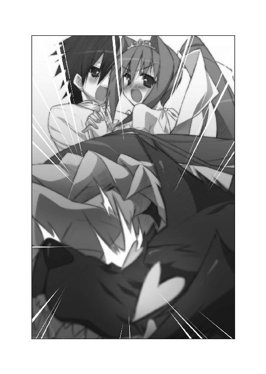
顔面にハイヒールが直撃した人狼は、
「うごぉぉぉっ 最高でずぅぅぅ」
意味不明な断末魔をあげて倒れ伏した。瞳はマークになっている。
『うおおおおおおおおおおおお!!』
突如として始まった王女と王仕の華麗なダンスに感動した村人たちは、広間を揺るがすほどの大喝采をあげたのだった。
×××
その日の夜のこと。
「村人に紛れ込んでいた、あの人狼はユフィナさまの大ファンだったようですじゃ。たっぷりとお説教をした上で釈放しておきましたのじゃ」
後宮の教官室で、ユフィナと恭太郎はピコルからの報告を聞いていた。
二人の手は既に離れている。
夜になって、ようやく《ぴったんこスライム》の効力が切れたのだ。
ユフィナは後宮のヌシを睨み付けて、
「無事だったからよかったけど、一つ間違えば大変なことになってたわ。ピコル、もう二度とこんなことしないでよねっ！」
だが、師匠は悪びれたようすもなかった。
「むふふ......吾の思惑通り恭太郎と仲良くなったのではありませんかな？ 人狼を退けた時など、二人の呼吸がぴったんこと合っておりましたのじゃ」
「か、勘違いしないで！ あれはとっさだったからよっ。恭太郎と仲良くなんてなってないんだからねっ！」
「ふははは、あの調子でお世継ぎづくりにも息を合わせて頂きたいですのぅ」
「あーもー、うるさいうるさいっ！ お世継ぎづくりなんてしませんっ！」
プイッとそっぽを向いたユフィナは、恭太郎の手を握ってきた。
「ピコルとなんて話してらんないわっ！ 行きましょ、恭太郎っ！」
王女さまは恭太郎の手を引っ張って歩きだそうとする。
「お、おい、ユフィナ......？」
「え？──あっ！」
ユフィナは恭太郎の手を離した。頰がかあっと赤くなっていく。
「魔法はもう切れてるんだっけ......」
高笑いするピコルをもう一度睨み付け、ユフィナは「バカっ！」と叫んだ。逃げ出すように、教官室を駆けだしていく。
人差し指で頰を搔きつつ、恭太郎はユフィナに握られた手のひらを眺めた。
彼女が恭太郎の手を取った気持ちが、わかるような気がしたのだ。
（ずっと握り合ってたせいかな......。いざ離すとちょっと寂しい気もするな......）
もちろん、そんなことは口に出しはしない。
ピコル師匠の思うツボだからな......。
恭太郎はやれやれと肩をすくめた。
ともあれ、ぴったんこ生活が終わってくれてよかったよ......。
「......恭太郎さまっ！」
「ん？ レイシア？ どうしたんだ？」
いや、第二王女だけじゃない。エリスとメルルも教官室へとやってきた。
なぜだかわからないけれど、誰もが怒っているように見える。
レイシアはいつもの笑顔だけど額には微かに血管が四つ角を作ってる。エリスは眉をつり上げてるし、メルルはぷくっとほっぺを膨らませていた。
「おにいちゃんっ、メルルは怒ってるんだからねっ」
「そうですわっ！ 許しませんからねっ！」
「なんで怒ってるんだよっ？ 俺、なんかしたか？」
「逆ですっ！ なぜ私たちにはしてくれないんですかっ？」
レイシアがずいっと近づいてきた。
ドレスの胸元から深い胸の谷間が見えて、ドキっとしてしまう。
第二王女はスネたようにちょっぴり唇を尖らせて、
「ユフィナお姉さまと一日中くっついてたってお聞きしました」
「その上、華麗なダンスまで見せつけられましたわ。この私を差し置いてっ！」
「ずるいずるいずーるーいーっ！」
三人の王女さまが距離を詰めてくる。
「そんなこと言われても困るって言うか......俺にどうしろって言うんだよっ？」
「決まってますっ」
レイシアは小さな瓶を取り出した。ゼリー状の液体を胸元にぶちまける──
「って、まさかそれは......《ぴったんこスライム》!?」
恭太郎の質問に答える前に──もにゅっ
レイシアは恭太郎の顔の辺りに思い切り抱きついてくる。
ほっぺに爆乳が当たって気持ちよすぎる!?
エリスとメルルも自分のカラダにスライムをぶちまけ、恭太郎に飛びついてきた。
三人のお姫さまのカラダが、恭太郎に吸い付いて離れなくなってしまう。
「今度は私たちとくっついて過ごしてくださいましね、恭太郎さまっ」
「か、勘弁してくれええええええ!!」
恭太郎の悲鳴が後宮に響き渡る。
《ぴったんこスライム》の恐怖は、まだまだ続きそうである──......。
ハーレム講座☆ピコルの穴！ その１！
ピコル（以下、ピ）「ピコル師匠プレゼンツ、ハーレム講座☆ピコルの穴！ 怒濤の勢いではじめるのじゃーっ！ 迷える生徒たちの質問にたちどころに答えちゃうのじゃー！」
アレスタ（以下、ア）「生徒役のアレスタです。よろしくお願いしまーす！ ミャハ☆」
ピ「なにが『ミャハ☆』じゃ。イラっとする挨拶はやめるのじゃ！」
ア「ちなみに『ミャハ☆』の瞬間に、ウィンクをしつつ片耳を立ててます。ミャハ☆」
ピ「やめいと言うにっ！」
ア「少しくらいいいじゃないですかっ！ 少しでもラブリーアピールをして、女性読者のココロを摑みたいんです！ 『アレスタくん、かわいいー！ 抱きしめたーい』とか言われたいんですっ！」
ピ「......残念ながら、女性読者などほとんどおらぬがな」
ア「がびーん！」
ピ「というか、おいコラ、動物め」
ア「僕は元は人間ですよ！ って、どうして睨み付けてくるんですかっ。怖いですよ、ピコル師匠っ！」
ピ「どうもこうもないのじゃ！ おぬしはカルタギア帝国の地下牢に囚われているはずじゃろう？ どうしてピコルの穴に出演しておるのじゃ!?」
ア「ぎっくぅ！」
ピ「いちお、ピコルの穴はトレクワーズ後宮にあるスタジオで収録しているという前提なのじゃ！ アレスタがおっては、いろいろおかしなことになってしまうのじゃ！」
ア「カタいこと言わないでくださいよ～（涙）。牢獄生活はヒマなんです！ 僕にもちょっとした刺激が欲しいんですよ！ 主に、えっちな刺激がっ！」
ピ「むーん、仕方があるまい。吾もアレスタのぬいぐるみでは無理を感じておったのじゃ。前巻は、それでひどい目に遭ってしまったのじゃ......」
ア「同じボケで二度も滑り倒してましたもんね......」
ピ「あんな恐ろしい思いは二度とごめんじゃ。よかろう。特別に出演を許可するのじゃ！」
ア「わーい、ありがとうございますっ！」
ピ「物語的な整合性などが気になっちゃうビンカンな読者諸兄もおろう。そんな諸君の気持ちを落ち着けるための魔法を使っておくことにするのじゃ」
ア「そんなすごい魔法があるんですか!?」
ピ「うむ。呪文を唱えるだけで、ちょっとした矛盾も気にならなくなるふしぎな魔法なのじゃ！」
ア「うおおっ！ さっそく使ってみてくださいよ！」
ピ「では、ゆくのじゃっ!!」
ピ『細けぇことは、気にすんな！（呪文）』
ア「うわあ！ みるみるうちに、いろんなことがどうでも良くなってきましたよ～！ って、なんか違うと思います！」
ピ「では、最初の質問に答えたいと思うのじゃー！」
○質問
オッス。疑問に思ってることがあるんで、教えてくれ。
つい最近、トビカピバラを囚えた。この動物はペットとして可愛がられているが、オレはペットなんかを愛でる趣味はねえ。
処遇に困っていたんだが......カピバラは食っても意外とうまいってウワサを聞いたんだよ。
トビカピバラってのは、どんな風に料理して食うのが一番イケるんだろうな？
ＰＮ．上腕二頭筋
ピ「吾の知る限り、一人称が『オレ』な人物は一人しかおらぬのじゃ。恐らく、他国から送ってくれたお便りじゃろうな」
ア「あゎゎゎゎゎ......」
ピ「では、上腕二頭筋さんの質問にお答えするのじゃ。トビカピバラは食用として養殖されていた時期もあるほどで──」
ア「ダメ～～～～～～～～～～っ！ トビカピバラは食べちゃいけませーんっ！」
ピ「どわあっ!?」
ア「カピバラの肉には毒があります！ 食べたら死んじゃうので、絶対に食べちゃダメです！ 大切に可愛がってあげてください！ えっちな本などを与えると喜びます！」
ピ「むむ？ なぜ、ウソを言うのじゃ？ トビカピバラの肉質は柔らかく、ほどよく脂が乗っていて美味と──」
ア「わーわーわーわーわー！ 聞ーこーえーなーいーっ！」
ピ「うるさいのじゃー!?」
ア「こんな質問はこうだ！ コイツめ！ コイツめ！」
ピ「な、なにをするのじゃ、アレスタ！ 質問のお便りを破っちゃダメなのじゃ！」
ア「ピコルの穴、その１はここまで！ その２をお楽しみにねっ♪」
ピ「こらー！ 勝手に終わらせちゃダメなのじゃ～っ！」
第二話 かぴばら・らぷそでぃ
トレクワーズ王宮には、広い湯船がある。
庭園のように彫刻が並び、浴槽の中央にはお湯の溢れ出す水瓶を抱えた女神像が立っているのだ。
そんな広大なお風呂に四人のお姫さま──ユフィナ、レイシア、エリス、アルト。
そして、神来恭太郎が一緒に入っていた。
女の子たちとお風呂に入っているだなんて......現代日本に住んでいた頃は自他共に認めるカタブツ男だった恭太郎にとって、あり得ないことである。
それに加えて。
お湯に浸かりながら、レイシアが真剣な表情で口を開いた。
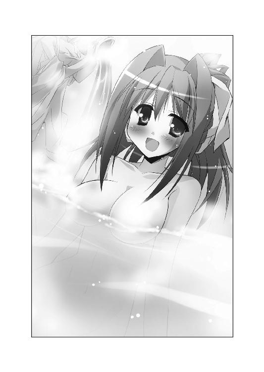
「ピコルさまから《ぱふぱふ》という技を伝授して頂きました」
「「「ぱふぱふ？」」」
残る三人が同時に首を傾げる。
「どのような技かと申しますと......実演してみますねっ」
レイシアは恭太郎に近づいてきて──ぬおおおおおおおっ!?
「このような感じで、おっぱいとおっぱいの間に殿方のお顔を挟みます」
彼の顔を爆乳の谷間に埋めたのだ！
「そして、両方のおっぱいを横からむにむにと押して差し上げるんです。ぱふぱふ ぱふぱふ」
恭太郎の両頰が、不思議な張りと弾力があるマシュマロみたいなものに包まれる。
天国というものがどこかにあるのなら、きっとこんな感じだろうと思った。それぐらい気持ちいい。気持ちよすぎるって!!
（ぐああっ、勘弁してくれぇっ！）
恭太郎はココロの中で絶叫する。
だが、抗うことも、悲鳴をあげることもできなかった。
こんなとんでもない状況に陥っているのには、のっぴきならない理由があるのだ──
×××
「初めて入ったが......ろくでもないものがいっぱいだな......」
後宮。アイテム保管庫。
ショーケースのようなガラス張りの戸棚に綺麗に陳列されたアイテムの数々を眺めて、神来恭太郎は眉をひそめた。
棒状だったり、タマゴ形だったり、愛らしいクマさんを模していたり。
さまざまな色やカタチをしているが、どれも用途は一つしかない。
（間違いなく、えっちなことに使うんだろうな......）
勘違いしないで欲しいのだが、恭太郎はそーゆー道具を見るのは初めてである。
後宮に入れられた初日に『好きなだけ使うがいいのじゃ。姫さまも喜ぶじゃろうて』なんて言葉と共にアイテム保管庫の鍵も受け取っているが、当然ながら使ったことはない。
なぜえっちな道具だとわかったのかと言うと──
『ブルブル震えるのじゃ！ 王女さまの気持ちいいところに当てるがいいのじゃ！』とか。
『細めなので、道具に慣れてないお姫さまにオススメなのじゃ！』とか。
『離れた場所からスイッチオンできるのじゃ。姫さまのぱんつの中に忍ばせておくがいいのじゃ。ただし、公務の最中は使ってはならぬのじゃ！』とか。
どのアイテムにも後宮のヌシであり恭太郎の教育係でもあるピコル師匠の直筆解説文が添えられてたからだ。
（こんなもの、いったいなにに使うんだ？）
部屋の片隅には、鳥の羽根やフサフサした太い筆、ロープやらロウソクなどが整頓して置かれている。
生々しい道具の数々を前に、恭太郎は人差し指で鼻の頭を搔いた。顔が熱い。たぶん、赤くなってしまっているだろう。
「って、眺めてる場合じゃないよな」
恭太郎はえっちな道具を探しに来たわけではないのだ。
「ミルンー、ここにいるのかー？」
アイテム保管庫の奥へ声を掛ける。
ミルンというのは、第五王女のメルルが飼っているトビカピバラの名前だ。
恭太郎の部屋を訪ねてきたちぃ姫さまと、こんな会話をしたのである。
「ねぇねぇ、恭太郎おにいちゃん。ミルン遊びに来てないかなぁ？」
「俺の部屋に？ いや、来てないよ」
「そっかぁ......。うーん、どこに行っちゃったんだろう......？」
「見あたらないのか？」
「うん。お昼ごはんの時間になっても戻って来なかったの。後宮の方に歩いてくのは見かけたんだけど......」
メルルは悲しげに眉をひそめた。
「後宮ならお風呂じゃないかな。しょっちゅう入りに来てるだろ」
トビカピバラという動物は入浴が大好きなのだ。ミルンもたびたび後宮のお風呂に入りに来てる。
けれど、メルルちゃんは悲しげに眉をハの字にした。
「お風呂にもいなかったんだよ。どこかに迷いこんじゃったのかな？ うぅ......心配だなぁ。一緒に捜してよ、恭太郎おにいちゃん」
断る理由なんてない。
メルルちゃんと手分けをしてミルンを捜してあげることにした。
後宮を捜索していると、普段は鍵が掛かっているはずのアイテム保管庫の扉がうっすらと開いているのを発見。中を捜してみることにしたってワケだ。
アイテム保管庫はかなり広かった。奥の方は倉庫のようになっており無数の木箱が積まれてる。
積まれた木箱の隙間を覗き込み、もう一度暗がりに向けて声を掛けた。
「ミルンー、いるなら出てこーい」
すると──ひょこっ。
焦げ茶色のずんぐりとした動物が顔を覗かせた。『なにか用？』とでも尋ねているかのように、黒い鼻をひくひく動かし、長い耳を揺らしてる。
「こんなところにいたのか......。ご主人さまが心配してるぞ。さあ、一緒に行こう」
ミルンの愛らしい姿に思わず笑ってしまいながら、そっと抱き上げようとしたとき。
トビカピバラが奇妙なものをくわえていることに気がついた。
二つの黒い吸盤状の物体が三〇センチほどのコードで繫がっている。コードの中央には方位磁石みたいな針のついた計器がつけられていた。
なにかのマジックアイテムだろうが、恭太郎には用途はわからない。
「こら、ダメだぞ。勝手に持ち出したら、師匠に怒られちゃうだろ」
ミルンの口から謎の物体を離そうと引っ張った。
「な、なんだ？」
吸盤が恭太郎の手首にくっつく。
「もきゅっ？」
もう片方の吸盤がミルンの黒い鼻に張り付いた。
ピコーンっ！──機械的な作動音が鳴り響き、方位磁石のような物体の針がグルグルと回転をはじめる。
二つの吸盤も針の動きに合わせて目映く明滅しはじめた。薄暗い保管庫の片隅で、王仕さまとトビカピバラの顔がアイテムの放つ光に照らされる。
（よ、よくわからんが、猛烈に嫌な予感がするぞ!?）
大急ぎで手首についた吸盤を外そうとしたのだが──
「うおおおおおおおおっ!?」「もきゅうううううううっ!?」
アイテム保管庫に恭太郎とミルンの悲鳴が響き渡ることとなってしまった。
×××
「ぎゃはははははははははははははははははははははッ!!」
後宮の教官室。ピコルは突っ伏して床を叩きながら大爆笑していた。
教卓の上に座ってる恭太郎は、むすーっとしたままペンを走らせる。
『わらいごとじゃ ないですよ』
だが、ピコルの爆笑はおさまらない。オナカを抱えて、ひぃひぃと呻いてる。
「これが笑わずにいられるか！ あはははははははっ！ おマヌケすぎるぞ、恭太郎！ 笑いすぎてオナカ痛いのじゃ！」
どうでもいいから、さっさと元に戻してください！──拳を握りしめ、そう叫ぼうとしたけれど。
「もきゅもきゅっ！」
口から出たのは、そんな可愛らしい鳴き声だった。
握りしめた拳にはちっこい肉球がついてる。カラダには焦げ茶色の毛が生えていた。
恭太郎の精神は、ミルンのカラダの中に入ってしまったのだ。
笑いすぎて涙が出てきたのだろう。ピコル師匠は目尻を拭いながら、吸盤がついたマジックアイテムをつまみあげた。
「これは《たまいれコード君・二号》という名前のアイテムなのじゃ」
トビカピバラのカラダでは会話ができない。恭太郎はちっこい手でペンを抱えて、メモ用紙で筆談をする。
『たまいれ？』
「うむ。『たましいをいれかえちゃう！』の略なのじゃ。二人の人間に両端の吸盤をくっつけて作動させると、両者の精神を入れ替えることができるのじゃ。姫さまのどなたかと入れ替わらせて、恭太郎を女体に慣らそうと思ったのじゃよ」
ピコル師匠の企みを聞いて、背中の毛がゾクッと逆立つ感じがした。
なんて恐ろしいことを考えてたんだ！ ユフィナやレイシアのカラダに入って日常生活を送るなんて──そんなこと耐えられるワケがないだろ！
「基本的には人間同士で入れ替えを行うアイテムなのじゃが......」
教官室の隅の方に、ピコルは視線を移した。
そこに恭太郎のカラダが座ってる。
つま先で首筋の辺りを搔こうとして、後ろにひっくり返ってしまった。
恭太郎のカラダは、なにが起こったのかわからないって顔でキョトンとしてる。
「ぷくくくっ......まさか動物と入れ替わってしまうとは思わなかったのじゃ！」
恭太郎のカラダの中に入っているのは、ミルンの精神なのだ。
ミルンがくわえていた《たまいれコード君・二号》が偶然にも作動してしまい、恭太郎とミルンはカラダが入れ替わってしまったのである。
恭太郎は筆談で抗議した。
『ししょうが わるいんでしょう？ アイテムほかんこを あけっぱなしにするから！』
「アイテムを整理していた最中だったのじゃ。まさかミルンがその隙に忍び込むとは思わなかったのじゃよ」
カラダが入れ替わった直後にピコル師匠がアイテム保管庫にやってきた。
恭太郎は混乱しながらも身振り手振りや筆談を駆使して現状を伝え、教官室へと連れてきたもらった次第である。
『さっさと もとに もどしてください！』
「それはムリじゃ」
（じゃあ、ずっとこのままなのか!?）
ピコルの言葉を聞き、恭太郎の耳が跳ね上がった。トビカピバラはびっくりすると長い耳が立つようだ。
「案ずることはないのじゃ。時間が経てば勝手に効果が切れる。すぐに元のカラダに戻すことができないというだけなのじゃ」
『じかんが たてばって どのくらいですか？』
「半日くらいかのぅ？」
（半日も!? 結構長いな......。その間、ミルンの中に入ってなきゃいけないのか......）
落ち込んだせいか、立っていた耳がみるみる力を失って垂れ下がる。
恭太郎のカラダに入ったミルンを見やった。
自分を外側から眺めることに、ひどい違和感を覚える。
ミルンは床に座って、えっちな参考書が並んだ本棚の角をくんくん嗅いでいた。なんだか情けない姿だ。
（ともあれ、ミルンが大人しくしてくれてるのが幸いだな......）
恭太郎は黒くて丸い鼻をひくひくさせながら、ため息を吐いた。
こうなったら効果が切れるまで大人しくしてる他ないだろう。
ペンを抱えて『メルルちゃんに じじょうを せつめいしてください』と書こうとした。
ちぃ姫さまはミルンがいなくなったことを心配してた。だから、せめて安心させてあげようと思ったのだ。
ところが、書き終わる前に教官室の扉が勢いよく開いた。
「ししょー、ちょっと聞きたいことがあるんだよー。ミルンが遊びに来てないかなー？」
タイミング良く、メルルちゃんが教官室へやってきたのだ。
ニヤリ──不気味な笑みを浮かべたピコルは教鞭で恭太郎を指す。
「ミルンなら、そこにおりますのじゃ」
「わーい、よかったー！」
満面の笑みを浮かべて駆け寄ってきて──むぎゅっ
恭太郎（ミルンのカラダに入ってる）を後ろから抱き上げた。
女の子に抱っこされちゃうなんて、初めての経験だ。
メルルちゃんのほんのりと膨らんだ胸の感触を背中に感じて......いろんな意味でドキドキしちゃうよ!?
「心配したんだよー？ 勝手にどっかいっちゃダメでしょっ！ めっ！」
叱りつけながらも、メルルちゃんは愛おしそうに頰ずりをしてくる。
トビカピバラは人間よりも嗅覚が強いのかもしれない。メルルちゃんの女の子っぽい甘い匂いを強く感じて鼓動が速まってしまう。
（メルルちゃん、俺は恭太郎だよ！）
声を出そうとしたけれど「もきゅっ！」という音にしかならなかった。
抱っこされたまま手足をジタバタさせて、ピコル師匠に向かってアピールした。
（ちょっと、ピコル師匠！ 事情を説明してくださいよ！）
と・こ・ろ・が。
「これ、ミルン。勝手にいなくなって、メルルさまを心配させてはならぬのじゃ。今日はずーっと一緒にいるがいいのじゃ！」
後宮のヌシは笑いながら、恭太郎に近づいてきた。ちっこい手で頭を撫でてくる。
（ひどい！ 誤解を解く気なんて、これっぽっちもない！）
それどころかミルンの中に入って、メルルと過ごせと言ってるのだ！ なんて人だよ!?
恭太郎を抱っこしたまま、メルルちゃんはミルン（恭太郎のカラダに入ってる）の方へと近寄った。
ミルンは書棚にもたれかかるようにして座ってる。なんだか眠そうだ。
「恭太郎おにいちゃん。ミルンを一緒に捜してくれてありがとね」
ちょっぴり頰を染めてミルンを見上げる。
「えへへ、あとでちゃんとお礼しに行くからねっ 楽しみに待ってて♪」
「もきゅっ？」
ミルンは意味がわからないと言いたげに、首を傾げてる。
（ほら、メルルちゃん！ 明らかに俺のカラダはおかしいだろ！ 『もきゅっ』とか言ってるし！ 中にはミルンの精神が入ってるんだ！ 気付いてくれッ！）
だが、恭太郎の願いも空しく──メルルはキュートな笑みを浮かべた。
「またねっ、恭太郎おにいちゃんっ」
メルルちゃんは恭太郎を抱っこしたまま、教官室を元気よく飛び出す。
「ふゥはははは──っ！ これは面白い展開になったのじゃー!!」
ピコル師匠の爆笑を遠く聞きながら、恭太郎は暗澹たる気持ちになった。
（今日一日、俺は無事でいられるのかな......）
×××
ピンチはすぐに襲ってきた。
王宮。メルルちゃんの部屋。ベッドの上。
恭太郎はちっこい手＆長い耳を駆使して両目を覆っていた。
「にゅふふ～ん♪」
メルルちゃんの楽しそうな鼻歌が、すぐ近くから聞こえてくる。
微かな衣擦れの音も恭太郎の鼓膜をくすぐっていた。
部屋に戻るなり、メルルちゃんはとんでもないことを言い出したのだ。
『お礼代わりに恭太郎おにいちゃんに新しいコスプレ衣装を見せてあげようと思うんだよっ。いつも通り、どの衣装がかわいいか一緒に考えてねっ♪』
彼女はお姫さまだけれど、現代日本で言うところの『アニメオタク』だったりする。
特にコスプレをするのが好きで、衣装を自作しているらしい。
新しいコスプレ衣装を作るたびに、恭太郎にも見せてくれるんだけど、試着をするときはミルンにも見てもらってるんだな。ミルンはトビカピバラだけど、ファッションセンスがあるんだろうか......？
日本にはいない種類の動物だから、不思議な能力があるのかもしれないな。うむうむ。
（って、真面目に考えてる場合かーっ！）
慌てる恭太郎をよそに、メルルちゃんは真新しいコスプレ衣装をベッドの上に並べた。
そして、恭太郎の前で着替えをはじめてしまったのだ。
嫁入り前の婦女子の着替えシーンなんて見てしまうわけにはいかない。恭太郎は大急ぎで両目を覆った次第だ。
「変身しゅーりょー♪......あれれ？ ミルン、どうして顔を覆ってるの？ ちゃんと見なきゃダメでしょっ。よいしょっ」
（うわわわっ？）
抱き上げられ、メルルの頭の上に乗っけられた。そこがミルンの定位置なのだ。
「どうかな？ かわいいかな？」
そーっとまぶたを開く。
驚きのあまり、ピコンと長い耳が立った。
姿見の前に立っているメルルちゃんが着ていたのは、刺繡の施された赤いチャイナドレスのような服だった。
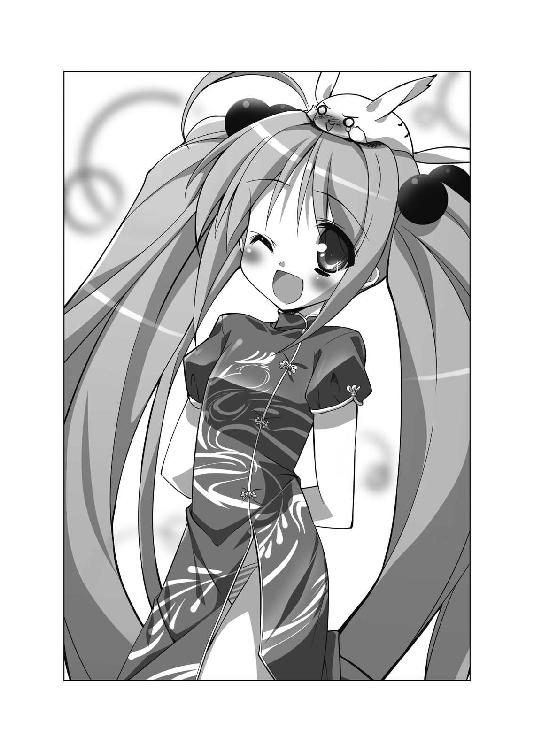
「これはね、《禁呪詠唱☆ガイルーン》に出てくる、フォクシーって名前の王女さまのドレスなんだよっ」
《禁呪詠唱☆ガイルーン》は、トレクワーズ王国で放映しているアニメだ。メルルちゃんは、このアニメの大ファンでしょっちゅう登場キャラのコスプレをしてる。
トレクワーズ王国があるウィッチェリア大陸を舞台としたアニメなのだから、当然ながら『中国』は存在しない。メルルちゃんが着ているドレスも『チャイナドレス』とは呼ばれていないだろう。
では、なぜ恭太郎がチャイナドレスっぽいと思ったのかと言えば──スカートに深いスリットが入っていたからだ!!
（セクシーすぎるよ、メルルちゃん！）
スリットは脇腹の辺りに達してる。ちょっと大またで歩くだけでスカートが翻り、中が見えてしまいそうだ。
スリットの隙間から、ちぃ姫さまはそっとふとももを出す。
「エリスおねえちゃんと違って、メルルは脚があんまりきれいじゃないんだよね......。恭太郎おにいちゃん、少しはドキドキしてくれるかなぁ？」
（もう既に十分ドキドキしてるよ......）
「でもでもぉ、スリットってとってもえっちぃよね。今にも中が見えちゃいそうだよぅ」
メルルちゃんは頰を染めながら、脚をもじもじさせる。
「ムラムラしたおにいちゃんに、スカートをめくられちゃうかもしれないねっ♪ 想像したらドキドキしちゃうよぅ。やんやんっ」
（天地神明に誓って絶対にめくりませんッ！）
ココロの中で叫ぶ恭太郎をよそに、メルルちゃんは可愛らしく両手をグッと握りしめた。
「めくられちゃってもいいように、ぱんつもセクシーなの選ばなきゃねっ」
（そんな配慮はいらないからっ！）
「ち・な・み・に～、今はこーゆーのはいてるんだよ～っ」
ぴらりんっ☆──メルルはスリットの隙間に指を入れて、スカートをめくりあげた。
（うおうっ!?）
ちぃ姫さまがはいていたのは、白いレースのヒモぱんだったのだ！
しかも、ローレグ気味で、おへその下のかなりきわどいところまで露わになってる。下腹部の絶妙な丸みを帯びたラインが、すごくえっちぃ。
「後ろは、こんな感じだよん♪」
くるりと振り返って、肩越しにおしりも見せてくれた。
（色っぽすぎるだろ～～～っ!!）
ローレグから、プリンっとしたおしりが半分くらい見えちゃってるよ！ これはマズイってっ！
メルルの頭に乗っかったまま、恭太郎は黒い鼻を押さえる。鼻血が出ちゃうよ！
恭太郎の反応を見て、メルルちゃんは勘違いをしたようだ。
「おりょりょ？ ミルンはあんまり気に入ってないのかな？ いつもは可愛い格好だと『もきゅっ！』って元気よく鳴いてくれるのに......。うんっ！ それじゃ違うぱんつもはいてみるねっ！ 一緒に選んでよ！」
（なんだって～～～っ!?）
メルルちゃんは恭太郎を連れたまま、コスプレ衣装が納められたタンスへと歩み寄った。
「できるだけ、えっちぃ感じのがいいよね」
引き出しから取り出されるぱんつたちを見て、恭太郎は言葉を失った（そもそも今はしゃべれないけど！）。
メルルちゃんが選んだのは──
前側には可愛いトビカピバラがプリントされているのに、後ろはＴバックになってたり。
レースがたっぷり使われた、シースルーのぱんつだったり。
激しくローレグ気味で、いろんな部分が見えてしまいそうなシマシマぱんつだったり。
どれも、とびきりえっちぃ下着ばかりだったのだ!!
恭太郎をベッドの上に降ろしながら、メルルちゃんは笑顔を向けてくる。
「ぜ～んぶはいてみるから、どのぱんつが可愛かったか教えてね♪」
スリットの間から手を入れて、今はいているヒモぱんをスルスルとおろし始めた。
脱いだぱんつをベッドの方に放って、ちぃ姫さまは「どれからはいてみようかな～」なんて吟味してる。
目の前にぱさりと落ちたぱんつに、恭太郎は震えた。背中の毛が逆立つ。
（こ、このままではメルルちゃんの生着替えを延々と見せられてしまう......！）
ちぃ姫さまには悪いけれど、一刻も早く脱出しなくてはならない。
（でも、どうやって......？）
ドアには鍵が掛かってるようだ。鍵を開けようとしている間に、ベッドへと戻されてしまうかもしれない。
（他に脱出する方法はないのか？）
部屋を見渡したとき、ベランダに続く窓がうっすらと開いているのが見えた。白いレースのカーテンがわずかに風にそよいでる。
（あそこから外に飛び出すか......？）
だが、メルルちゃんの部屋は王城の上の方にある。飛び降りたら、恭太郎とて無事では済まない──いや、違うぞ！
（俺はトビカピバラになってるじゃないか！）
トビカピバラという動物は、その名の通り長い耳を羽ばたかせて空を飛べるのだ。
耳に意識を集中してみる。ぎこちないけれど、長い耳を動かすことができた。
「最初はスケスケのぱんつにしてみよっと♪ おにいちゃんもドキドキしちゃうよね」
シースルーのぱんつをはこうとしているメルルの背中に謝った。
（すまん！ 元のカラダに戻ったらちゃんと説明するからねっ！）
ベッドから飛び降り窓の外へ駆け出した。
「どこ行くの、ミルンっ!!」
メルルちゃんの声を背中で聞きながら、恭太郎はベランダの手すりからジャンプ！
（うおりゃあああああっ!!）
気合いと共に耳を羽ばたかせる。
ふわり、と。
ずんぐりとしたカラダが宙に浮かんだ。
（よしっ！ 飛べるぞっ！）
そう思ったのも束の間──
「もきゅううううううううっ!?」
恭太郎の口から悲鳴があがった。
運悪く、突風が吹いたのだ。
飛ぶことに慣れていないせいか、すぐにバランスを崩してしまう。
風に流されながら、懸命に長い耳で羽ばたこうとしたけれどうまくいかない。
みるみる高度が落ちていき──べしょっ！
恭太郎はぬかるみの中に落ちてしまった。
（痛たたたたた......）
泥まみれになりながらも、周囲を見回してみる。
目の前に馬小屋があった。軍馬のいななきがすぐ近くから聞こえてくる。
ここは王城の東側。近衛騎士団の詰め所がある辺りだ。風に吹かれて、こんなところまで飛ばされてしまったらしい。
（なんとか脱出には成功したみたいだな。泥だらけになっちゃったけど......）
そのとき、背後から掛け声が聞こえてきた。
「ふぁいっ、おー！ ふぁいっ、おー！」
高校の運動部の女子部員たちがランニングしているような感じで、修練中の近衛騎士団の少女たちが隊列を組んで走ってる。
先頭は体操服姿のユフィナだ。第一王女でありながら、ユフィナは近衛騎士団の団長も務めているのだ。
「駆け足やめー」
目の前でユフィナがランニングをやめた。
首根っこを摑んで、恭太郎を持ち上げる。
「なにかと思えばミルンじゃない。こんなに泥だらけで......どうしちゃったのよ？」
流れる汗をタオルで拭いながら、王女さまは笑みを浮かべた。恭太郎にはあまり見せない屈託のない笑顔だ。
「よかったわ。ちょうど今日の修練が終わるところなのよ」
続く言葉を聞いて、恭太郎はまたもや背中の毛が逆立つのを感じた。
「一緒にお風呂に入りましょ。洗ってあげる」
『遠慮しておくよ!!』
すぐさま叫んだけれど、口から漏れたのは「もきゅっ！」という鳴き声だけであった。
×××
（いいか、神来恭太郎。おまえは意思を持たない彫像だ。実在する像で言うなら、三猿の『見ざる』だ。絶対になにも見るんじゃないぞっ！）
王宮。お風呂。洗い場。
洗面器の中に座らされた恭太郎は、長い耳と手を使って目を覆っていた。
「こんなに汚くなっちゃって。ミルンも女の子なんだから綺麗にしなきゃダメよ？」
ユフィナが優しい言葉を掛けながら、背中をゴシゴシと洗ってくれていた。
湯船の方からは、三人の王女さまの声が聞こえてくる。
「双子ですのに、どうして私はレイシアに負けてますのっ！」
「すぐに同じくらい大きくなりますよ」
「はゎゎ、私はちっさい方がいいですぅ」
「でしたら、私に頂きたいくらいですわっ！」
レイシア＆エリスの双子姫と、第四王女のアルトだ。
まだ外が明るいのに、王宮の浴場にトレクワーズの五美姫のうち四人までもが勢揃いしているのである。
「ふぅ......。それにしても良い匂いですね、このバスソルトは......」
レイシアがうっとりとした声を漏らす。
ユフィナがお風呂に行こうとしたところで、国民からの献上品であるバスソルトを使おうとしていたエリスに遭遇したのだ。
せっかくだから、みんなで使ってみようということになり──部屋にいたレイシア＆アルトも一緒に入浴することになったってワケだ。
「メルルも一緒に入れたらよかったのに......」
アルトが寂しそうに呟く。
だが、第三王女はフンと鼻を鳴らした。
「部屋にいなかったのだから、仕方がありませんわっ！ メルルが悪いんですのっ！」
イジワルそうなことを言っているかと思ったら、エリスは小声で続けた。
「まだまだ献上品のバスソルトはいっぱいありましたわ。今夜にでも、もう一度みんなで入ればいいんですのよっ」
「うふふ、それがいいですね♪」
姉妹の会話は微笑ましいものなのだが......恭太郎の心中は暗澹たるものだった。
（メルルちゃんの部屋から脱出したつもりが、さらなるピンチに陥ってるじゃないか......わっぷ!?）
ざばーっ！──勢いよく頭の上からお湯を掛けられた。石けんを洗い流したのだ。
「はい、終了～！ 綺麗になったわよ！」
（洗い終わったのか......。それじゃ、俺は失礼するよ！）
「あら、どこ行くの？ しっかり温まらなきゃ風邪引いちゃうわよ」
逃げだす前に首根っこを摑んで持ち上げられてしまった。他の姫たちが浸かっている湯船へと連行されてしまう。
姫さまたちのハダカを見てしまうワケにはいかない。固くまぶたは閉じたままだ。
お湯に入った瞬間──身体中の筋肉が弛緩するような気がした。
「もきゅううぅぅぅぅぅぅ～～～......」
勝手に口から吐息が漏れる。細胞と細胞の間隔が広がって、そこから疲れが抜けていくかのようだ。『癒やされる』ってのは、こういう状態を指すのかも知れない。
バスソルトの香りだろうか。花畑にいるかのような匂いが黒い鼻をくすぐって、さらに幸せな気分になってしまう。
アルトちゃんが曇った眼鏡を指で拭いながら、クスッと笑った。
「ミルン、すごく気持ちよさそうです」
レイシアが妹の言葉に頷く。
「トビカピバラは、お風呂が大好きな動物ですからね」
なるほど。お風呂が気持ちいいのは、トビカピバラの習性なのか。ミルンがしょっちゅうお風呂に入りに来る気持ちがわかるよ......。はあああああ、たまらん......。
状況も忘れて、恭太郎はまったりしてしまった。
ついつい、まぶたを開けてしまう。
湯船の中、恭太郎はハダカのお姫さまたちに囲まれていた。
女同士だと思ってるからだろう。タオルでカラダを隠したりしてない。
湯気やお湯で辛うじて大事な部分は見えないけど......かなり危険な状態だ！
（いかん！ ゆっくりしてる場合じゃない！ 婦女子と入浴するなんてもっての外だぞ！ 気を確かに持てっ！）
ちっこい手で黒い鼻の辺りをぽこぽこ叩いて、正気を保とうとする。
そんな恭太郎には気付かず、ユフィナは妹たちに尋ねた。
「ところで、さっきはなにを話してたの？ 大きいとか小さいとか」
「胸の話ですわっ。レイシアやアルトはこんなに大きいのに......」
エリスが忌々しげに自分の胸元を見下ろす。
「私はゼンゼン大きくなりませんのっ。屈辱ですわっ！」
（そんな話してたのか！ せめて、俺がいないときにしてくれよっ！）
「大きくてもイイことなんてありませんよぅ......。は、恥ずかしいですし」
「そうですね。肩も凝りやすいです」
「戦うときも邪魔になるわね。きちんと押さえてないと揺れちゃうのよ」
胸の大きい三人が不満を口にする。
エリスはカタチの良い眉をヒクヒクと動かした。
「大きい方が殿方には喜ばれると言いますわっ！ それだけ、お世継ぎづくりも有利になりますのっ！」
「そういうもんなの？ 私はよくわかんないんだけど......」
首を傾げるユフィナに、エリスはなおも力説する。
「私の調べによれば、胸が大きくないとできない必殺技が多数あるとのことですわっ！」
「いったいどんなものなんですか？ 私にもできるのかな......？」
アルトの問いかけに、エリスはちょっぴり顔を赤くした。
「いろいろと技があるそうですわ。く、詳しく説明するのはかなり恥ずかしいのですけれど......」
双子の妹の言葉を、レイシアが継いだ。
「私もいくつか知ってます。最近、ピコルさまから《ぱふぱふ》という技を伝授していただきました」
「「「ぱふぱふ？」」」
残る三人が同時に首を傾げる。
「どのような技かと申しますと......実演してみますねっ」
レイシアはお湯に浸かったまま移動してきて──って、どうして俺を抱き上げるんだ？
「ミルン、ちょっと協力してくださいね」
ま、まさか、やめてくれっ!!
湯船の中で、レイシアはトビカピバラとなっている恭太郎を持ち上げた。
すぐ目の前に、レイシアの爆乳がある状態だ。大事な部分が今にも見えちゃいそうだったから、慌ててまぶたを閉じる。
直後──もにゅにょんっっっ
（はうあああああっ!?）
両頰が柔らかいものに包まれた～～～っ！ 柔らかすぎるうぅぅぅぅっ!!
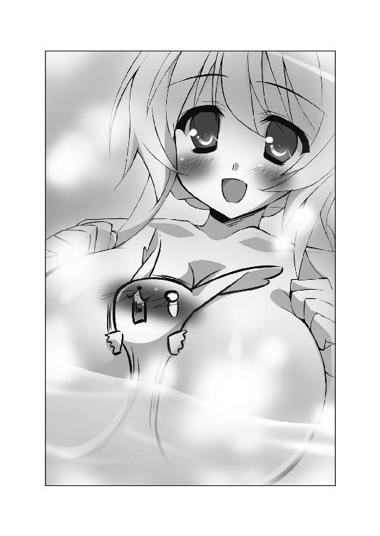
「このような感じで、おっぱいとおっぱいの間に殿方のお顔を挟みます。そして、両方のおっぱいを横からむにむにと押して差し上げるんです。ぱふぱふ ぱふぱふっ」
（ぐあああああああああああっ!?）
柔らかいものがほっぺに押し当てられて、気持ちよすぎるよ!?
「これが《ぱふぱふ》という技だそうです。どんな殿方もイチコロだとピコルさまは仰っていました」
（確かにイチコロだよ、これは......）
興奮しすぎてヤバい状態だった。人間の状態だったら、とっくにケダモノと化していただろう。それぐらい《ぱふぱふ》は恐ろしい技だ......。なんてことを教えちゃったんだよ、ピコル師匠っ！
「わ、私にもできるでしょうか......？」
あまりの気持ちよさに意識朦朧としていた恭太郎のカラダが、今度は別の人に抱き上げられた。理性を総動員して、まぶたを固く閉じてるから誰だかわからないけど......声からいってアルトちゃんか？ うおおっ!?
「こ、こんな感じかな？ えいっ、えいっ」
もにゅんっ まにゅん ぽにゅんっ むにゅん もにょん まにょん
（ ああああああああ......!!）
ああああああああ......!!）
不思議な弾力と張りがある柔らかな物体が、両方のほっぺを包み込む。レイシアほどじゃないけれど、アルトちゃんもかなりの巨乳なのだ。
「押しつけて差し上げるときは『ぱふぱふ』と口にするのが作法だそうですよ」
「はいっ。ぱふぱふっ ぱふぱふっ」
（ああああああああああああああああああああああああああ～～～～......!!）
死ぬっ！ 死んじゃう！ 気持ちよすぎて死んじゃうよ!!
「うふふ、上手ですよ、アルト。恭太郎さまも喜んでくださるはずです」
お姉さんに褒められても、アルトちゃんはちょっぴり弱気な声で答えた。
「ミルンだからできますけど、恭太郎さまが相手だったら......きっと恥ずかしくて死んじゃいますぅ」
（いや、今まさに、俺が挟まれてるんだけどね......!!）
「ユフィナお姉さまも練習してみますか？」
「わ、私はいいわよっ！ 恭太郎にそんなことするなんて、あり得ないもんっ！」
断ったユフィナを押しのけるようにして、エリスが手を伸ばしてきた。
「私がやってみますわ！ 恭太郎をイチコロにできる必殺技があるなら、会得せざるを得ませんのっ！」
アルトの手からひったくるように、既にグロッキー状態の恭太郎を抱き寄せた。
ぐいーっと胸元に押しつける。
「いきますわよ！ ぱふぱふっ！ ぱふぱふーっ！」
気合いを入れて、おっぱいを寄せる。
もにっ ぷにっ──辛うじてできた胸の谷間がトビカピバラの鼻先を挟み込んだ。
「きいいいぃぃぃ！ うまく挟めませんわ！」
エリスは激怒していたけれど、怒る必要はないと思った。
膨らみ方はささやかだけど......エリスの胸もすごく柔らかかったのだ。
それに加えて、一生懸命胸を寄せようとしている王女さまの仕草がなんとも可愛らしくて。胸の奥がきゅんきゅんしてしまった。
興奮レベルは既にレッドゾーンだ。血圧は急上昇。脈拍は一六ビートを刻みはじめる。
挙げ句の果てに──
「もきゅ......っ！」
興奮しすぎた恭太郎は黒い鼻から鼻血を噴いて倒れてしまうのだった。
×××
後宮の教官室。
「ふぅむ......どうしたもんかのぅ？」
ピコルは恭太郎のカラダを前に、腕組みをしながら唸っていた。
カラダの中にはミルンの精神が入ってる。
恭太郎に入ったまま、ミルンは部屋の隅っこで大人しく丸まって眠っていた。
「ただ寝かせておくだけではつまらぬのじゃ......。なにかお世継ぎづくりに役立つ方法でもあればよいのじゃがのぅ......」
動物を発情させる秘薬なども倉庫に眠っていたはずだ。そんな薬を使えば、ミルンをムラムラさせることは可能だろう。
だが、ミルンはメスなのだ。
発情したところで、姫さまたちを襲ったりはしない。
よしんば襲いかかったとしても、お世継ぎをつくらせるわけにはいかない。
詳しい説明は省くが、最強のお世継ぎをつくるためには、精神と肉体が万全な状態であることが望ましいのだ。
器は恭太郎でも、中身がミルンでは、えっちをさせるわけにはいかないのである。
「そろそろ《たまいれコード君》の効果が切れちゃうのじゃ......。このまま終わらせるのは惜しいのぅ......。うぅぅぅ～～～ん......」
しばらく唸っていたピコルは、ポンと手を叩いた。
「そうじゃ！ いいアイテムがあるのじゃ!!」
アイテム保管庫へと駆け出す。
後宮のヌシが倉庫の奥から取り出したのは、スプレー型のマジックアイテムだった。
その名も《カピバラまっしぐら！ スプレータイプ》。
トビカピバラにとって、すごく美味しそうな匂いを発するスプレー型のマジックアイテムである。
「一度も使ったことはないが、説明書によれば......どんなトビカピバラでもメロメロになっちゃうらしいのじゃ！ 題して《私を食べて☆ぺろぺろぺろりん大作戦》！ ヘタレな恭太郎に代わって、ミルンに姫さまを襲ってもらうのじゃ！ ふゥはははー！」
×××
「も......きゅ......？」
恭太郎は目を開いた。
可愛いレースで飾られた天蓋が見える。窓の外はすっかり暗くなっていた。星空が輝いている。
ここはどこだろう？
「よかった。目を覚ましたんだね」
すぐ近くで声が聞こえた。
恭太郎のすぐ横にメルルちゃんが横たわっており、顔を覗き込んでる。
「トビカピバラのくせにのぼせちゃうなんて......お風呂が好きすぎだよぅ。心配したんだからねっ」
ちぃ姫さまは安心したように息を吐きながら、恭太郎の頭を撫でた。
ようやく状況が飲み込めてきた。
お風呂で気絶した恭太郎は、のぼせたと勘違いされてメルルの部屋へと連れてこられたのだろう。で、夜になるまで寝ていたんだ。
「もうカラダは平気かな？」
メルルちゃんを心配させたくなくて、できるだけ元気に鳴いてみた。
「もきゅっ!!」
「よかったぁ......」
飼い主はぎゅーっと抱きしめてくる。
そのとき、気付いた。
（な、なんて格好してるんだよ、メルルちゃん！）
ちぃ姫さまは、素肌の上に男物のＹシャツを羽織った──いわゆる『ハダカＹシャツ』姿だったのだ!!
驚きが伝わったのか、クスクス笑いながら説明してくれた。
「《禁呪詠唱☆ガイルーン》の漫画版に出てくるんだけどね。ルギリアって敵国のお姫さまがガイルーンを誘惑するときに着た服なんだ。これでもいちお、コスプレなんだよ」
Ｙシャツのボタンは一つしか留められていない。
メルルちゃんは恥ずかしそうに、今にも開いてしまいそうな前身頃をかき合わせた。
「Ｙシャツの中がすごいことになってるんだぁ。すっごい恥ずかしいよぅ」
ほっぺを真っ赤にしてる。
オマセなメルルちゃんが恥ずかしがるって......Ｙシャツの下にはなにを着てるんだ？
というか、もう寝るんじゃないのか？ なんでコスプレなんかしてるんだろう？
恭太郎の問いに答えるように、メルルちゃんはベッドの上でカラダを起こした。
「ミルンが元気じゃなかったら、今日はやめようかと思ったんだけど......やっぱり使ってみることにするよ。恥ずかしいから、この中に入っててね♪」
抱き上げられた恭太郎は、部屋の隅に置かれていたカゴの中に入れられた。動物を入れておくための檻みたいなものだ。鉄格子の入り口に留め金を掛けられてしまう。
ハダカＹシャツ姿のメルルちゃんは、スプレー缶を取り出した。
「これはね、ししょーにもらったんだよ」
身体中にスプレーを吹きつけながら、
「これをカラダにスプレーしておくと、恭太郎おにいちゃんがムラムラして襲いかかって来ちゃうんだってさ。ホントかな？」
（なにぃ!? なんてとんでもないものを渡してるんだ!!）
Ｙシャツの中にも手を入れて、全身にくまなくスプレーしたメルルちゃんは、くんくんと自分の腕の辺りを嗅いだ。
「なんだか甘い香りがする～。いい匂いかも♪ ししょーにはちょっとつけるだけでイイって言われたけど......えへへ♪ もっとい～～～～っぱいつけちゃおっと」
メルルちゃんはたっぷりと身体中にスプレーをふりまいた。
「これだけつけておけば、恭太郎おにいちゃんもイチコロだよね」
メルルちゃんはスプレー缶を一本使い切ってしまった。
恭太郎の鼻にも甘い香りが届いてくる。
確かにいい匂いだけど──ぐうぅぅぅぅ。
なぜか、急におなかが空いてきた。口の中にツバが溜まってくる。恭太郎の意識はあまり変化がないのに、カピバラのカラダは猛烈な空腹を感じてるようだ。
メルルちゃんはほっぺを朱に染めつつ、布団に潜り込む。
（今、俺のカラダに入ってるのはミルンだ......。ミルンがムラムラしてメルルちゃんを襲っちゃうのか......？）
カゴに入れられてる恭太郎は、針金ほどの太さの鉄格子をちっこい手で握りしめつつ、固唾を呑んで見守った。
一分ほど経った頃だろうか──
「もきゅっ」
マヌケな鳴き声をあげながら、ミルン（恭太郎のカラダに入ってる）がメルルちゃんの部屋へとやってきた。
くんくんと匂いを嗅いでいたミルンは、ベッドの上に飛び乗る。その瞳はハート形になっているように見えた。
（まさか、本当に襲いかかるつもりか!?）
シーツから顔を出したメルルちゃんは、恥ずかしそうに瞳を潤ませて恭太郎のカラダを見上げてる。
「本当に来てくれたんだぁ......。ついに、お世継ぎをつくっちゃうのかな......？」
ちぃ姫さまは、そっとシーツをはだけた。
ハダカＹシャツを纏ったカラダを恭太郎のカラダに向ける。
「おにいちゃんが喜ぶと思って、こんな格好してみたよ」
Ｙシャツの裾からは、ローレグ気味なシマシマぱんつがチラッと顔を覗かせてる。
胸元も大きく開いていて、ほんのりと膨らんだおっぱいが今にも見えちゃいそうだ。
「優しくしてくれなきゃ......死刑にしちゃうんだからね」
恭太郎のカラダに入ってるミルンは、「もきゅ！」とうれしそうに鳴いた。
そして──ぺろんっ。
メルルちゃんの首に舌を這わせただとぅ!?
「にゃあんっ」
細っこい脚をもじもじさせて、メルルちゃんは身悶える。
（なんでメルルちゃんを舐めてるんだ？）
ベッドサイドに置かれた、スプレーの缶を見やる。
相変わらず恭太郎は猛烈な空腹を感じてる。抗い難いくらいに美味しそうな匂いだ。
（ひょっとして、あのスプレーは男をムラムラさせるんじゃなくて......トビカピバラにとって美味しそうな匂いを発してるのか!?）
ミルンはなおもメルルちゃんのカラダを舐めまくった。
首筋から鎖骨の方へ、ミルクを舐める猫みたいな音を立てて舌を動かす。
「恭太郎おにいちゃんに......舐められちゃってるよぅ......あふっ」
シーツをギューッと握って、メルルちゃんは身をよじった。
「もきゅきゅっ」
幸せそうな声で鳴きながら、ミルンは下の方に移動した。
「ひゃんっ そっちも舐めちゃうのっ？」
シマぱんの辺りに顔を埋め、ふとももや内またをぺろぺろと舐め続ける。
「あっ メルル、ふとももが弱いんだよぅっ あぅっ あっ、気持ちよくなっちゃうよぅ... らめぇっ」
言葉では嫌がってるようだけど、『もっとして』って言ってるみたいに、顔を埋める恭太郎の髪に指を絡ませていた。
（ぬおわあああ!! やめろおおおお!!）
鉄格子を握りしめ、ミルンのカラダに入ってる恭太郎はココロの中で絶叫する。
動物が飼い主にじゃれついて舐め回してるシーンと言えなくもないけど──ミルンは恭太郎の中に入ってるのだ。
恭太郎がメルルを舌で攻め立ててるようにしか見えない！
一三歳のメルルちゃんにそんなことするなんて、さすがにマズイ！ 倫理的にダメすぎる！ 姉上やユフィナに見つかったら死刑じゃすまないって～～～っ!!
（やめてくれ、ミルン！）
だが、カゴの中に閉じこめられているので、手出しができない。
存分にふとももの辺りを舐めまくったミルンは、ふんふんと鼻を鳴らしながら再び顔を上の方に向けた。
鼻先でＹシャツを押しやりながら、可愛らしいおへそ周辺に舌を這わそうとする。
「ハァ...ハァ...Ｙシャツのボタン、はずしちゃってもいいよ......？」
肩で息をしながら、メルルちゃんは自らＹシャツのボタンを外した。
シャツをはだけさせ、胸元を露出する。
ちぃ姫さまの胸を見て──恭太郎はまたもや鼻血を噴くかと思った。
メルルちゃんはブラを着けていなかった。
ぷっくりと膨らみかけたおっぱいの先端がハート形に塗られていたのだ。いわゆる、ボディペイントによって大事な部分を隠していたのである。
「コミックに出てくるお姫さまも、こうやっておっぱいを隠してたの......。このペイントはね、あま～～～いお菓子の材料で出来てるの。イチゴミルク味なんだよ」
メルルちゃんは両手をグーにして、両肩の辺りに上げた。
恥ずかしそうに胸元を恭太郎のカラダの方へ向けたのだ。
「恭太郎おにいちゃん......ココもペロペロして？ メルルのイチゴミルク......舐めて欲しいよ」
（ぬおあああ!! えろいよ！ えろすぎるよ、メルルちゃん！ 誰か、あのオマセっ娘をどうにかしてくれええええ!!）
鉄格子に頭を打ち付けて、悶えまくる恭太郎。
だが、恭太郎のカラダに入ってるミルンはまるで動じなかった。
「もっきゅー♪」
幸せそうに一声鳴いて、ペロペロとちぃ姫さまの白いオナカや胸元を舐め続ける。
ミルンにとっては、イチゴミルク味のペイントよりも、スプレーの匂いの方が気になるらしい。ハート形のペイントの周りを丹念に舐め回していた。
「焦らしちゃ......らめぇ......。メルル、ヘンになっちゃうよぅ......んぅっ はうぅっ あんっ」
幼いメルルちゃんの口から、甘やかな吐息が漏れた。
まるでおしっこをガマンしてるみたいに、両足をもじもじさせている。
王女さまのようすはすごく艶めかしくて、カゴの中にいる恭太郎の興奮度も最高潮に──って、興奮してる場合じゃな～～～いっ!!
なんとしてもミルンを止めなくては！
カゴのフタは、内側からは開けられない。
なんとか鉄格子を突破するしかない！
恭太郎はちっこい手で針金ぐらいの太さの鉄格子を握りしめた。
「もきゅううううっっっ!!」
力一杯揺さぶってみる。
カゴはびくともしなかったけれど、それでも揺さぶり続けた。
すると──ぱきんっ！
鉄格子の針金が一本だけ外れた。長さにして一〇センチほどだ。
ちっこい手で針金を握りしめた恭太郎は、大きく頷く。
（カラダはトビカピバラになっても......俺は剣士だ......。こんな鉄格子ぐらい、打ち破ってやる!!）
針金を構えて、目を閉じた。
ゆっくりと腰を落とす。
大きく息を吸って、吐いて。
呼吸を整え、精神を集中する。
「もきゅうぅうぅぅう......!!」
カッと目を見開いて──！
「もきゅもきゅもきゅもきゅ──もきゅー!!（神来流剣術・一の太刀──鬼哭!!）」
針金を振り下ろした。
入り口の留め金が勢いよく吹っ飛んだ。
カゴから飛び出した恭太郎は、そのままの勢いでメルルにのし掛かっている恭太郎のカラダへと突進する。
（ミルン、すまんっ!!）
ココロの中で謝りながら、思い切り体当たりを敢行！
──ごちんっ☆
恭太郎とミルンの頭が、勢いよくぶつかった。頭の中に火花が飛ぶ。
その直後──ぐにゃり、と。
世界が揺らいだ。強い目眩を感じる。
グルグル回る視界の中で、恭太郎はトビカピバラの姿を見た気がした。
「もきゅううう～～～......？」
ベッドの下で焦げ茶色のトビカピバラがでんぐり返しをしていた。ショックで目を回してるようだ。
あれはミルンだよな......？
ということは──恭太郎は手を持ち上げてみた。
剣ダコのある見慣れた手のひらだ。
（魔法の効果が切れて、元のカラダに戻ったみたいだな......）
どうやら体当たりして止めようとした瞬間に魔法の効果が切れたらしい。
（やれやれ......。今回もピコル師匠のおかげで大変な目に遭ったよ。だが、元のカラダに戻れれば、一件落着だよな......）
王仕さまは肩を竦めたのであるが。
「恭太郎......おにいちゃ......ん......」
メルルちゃんが、恭太郎の眼前であられもない姿で横たわっていた。
ハート形のペイントが塗られた胸元がさらけ出されている。
ぷっくりと膨らんだおっぱいはメルルちゃんの肩の震えに合わせて、お皿に載せたプリンみたいに揺れていた。
（って、まったく一件落着じゃなかった！ 最大のピンチは続行中だよ！）
潤みきった瞳で、メルルちゃんは恭太郎を見上げてくる。
「もう限界だよぉ......」
耳の先まで真っ赤に染めて、ペイントされてる胸を恭太郎に向かって突き出す。
メルルちゃんは恥ずかしそうにおねだりしてきた。
「お願いだから、先っちょも舐めて......？」
あまりにもえっちくて、可愛くて。
恭太郎は頭の中が沸騰するかと思った。
メルルの願い通りに胸にむしゃぶりつき、イチゴミルク味を存分に味わいたかった。
フラフラと引き寄せられるように、メルルちゃんの胸元に顔を近づけたけれど──
（そんなことして、良いわけないだろおおおおおおおおおおおおっっっ!!）
理性の力を総動員して、自らを制した。
「舐めて......くれないの？」
熱っぽい吐息を漏らしながら、切なげな瞳で恭太郎を見つめてる。メルルちゃんは、すっかり興奮してるようだ。
（どうすりゃいいんだ？ いっそ逃げ出すか!? でも、ココで逃げたら俺は最低男になっちゃうんじゃないのか？ とはいえ、続けるワケにもいかないし......！）
ちぃ姫さまにのし掛かってるような状態で、恭太郎はダラダラと脂汗を流した。
そんな中彼を救ってくれたのは意外な人物......いや、動物だった。
アレスタが第五王女の部屋に飛び込んできたのだ。
彼はトレクワーズ王城に住んでいる、もう一匹のトビカピバラだ。
ミルンと違い、彼は生まれながらにしてカピバラだったワケではない。元は王仕さま候補だった少年だ。敵国の女帝に魔法を掛けられ、トビカピバラに姿を変えられてしまったのである。
「むっは～～～～っ！ 辛抱たまらん！ すっげえ美味しそうな匂いがする～～っ!!」
アレスタはメルルの部屋に勢いよく飛び込んできた。両目をハート形にしてる。
「きゃあっ、アレスタくん!? 急に入って来ちゃダメだよぉっ！」
メルルは恥ずかしそうにＹシャツの前をかき合わせた。
「メルルさまー！ お身体を舐めさせてくださーい！ せめて一口っ！」
王女さまの命令も聞かず、アレスタはベッドに向かって突進してきた。
「どうしたんだよ、アレスタっ！」
空中で長い耳を摑んでアレスタを止めた。だが、恭太郎の姿なんて目に入ってないようだ。手足をジタバタさせて、メルルに向かって唇を突き出している。
「メルルさまを食べちゃいた～～～いっ！」
（まさかミルンだけじゃなく、アレスタにもスプレーが効いたのか？）
恭太郎の予想は半分正しく、半分が間違っていた。
「もきゅー！」「もきゅきゅー！」「もきゅーっ！」「もきゅー！」「もっきゅー！」
部屋の外から無数のトビカピバラの鳴き声が響き渡ってきた。
窓ガラスに大量のトビカピバラたちが張り付いていたのだ！
どこから城内に入ってきたのか、開け放たれているドアからたくさんのトビカピバラたちが飛び込んでくる。
どいつもこいつも瞳をにして、ちぃ姫さまを見つめていた。
首輪をつけているものもいれば、毛皮がちょっぴり薄汚れてるヤツもいる。
ペットとして飼われているトビカピバラや、野良カピバラも混じってるんだろう。
アレスタだけではなく、お城の近くにいた全てのトビカピバラたちが匂いにつられてやってきてしまったのだ!!
「このコたち、どうしちゃったの......きゃあんっ、舐めちゃらめぇっ！」
ふとももを舐めあげられて、メルルちゃんが可愛らしい悲鳴をあげる。
このまま無数のカピバラたちに舐め回されちゃったら──いろんな意味で危ない!!
「逃げるぞ、メルルちゃん！」
恭太郎はお姫さまを横抱きにして、部屋を飛び出した。
廊下にも大量のトビカピバラが溢れていた。
「逃げないでくださいよぅ！ ペロペロ舐めさせて～～～っ!!」
「もきゅー」「もきゅもきゅーっ」「もきゅ」「もきゅもっきゅー」「もきゅ」
アレスタを先頭にトビカピバラの群れが、恭太郎たちを追いかけてくる。
「きゃあっ！ いったいなんなのよ、これーっ!?」
「まあ、お城中がトビカピバラだらけですっ」
「こんなにたくさんいると、あんまり可愛くありませんのっ！」
「うわーんっ、頭の上に乗っからないでくださーいっ！」
お姫さまたちも悲鳴をあげている。
「《カピバラまっしぐら！》の効果ですじゃ！ メルルさま、たくさんスプレーしすぎですじゃーっ!!」
逃げまどいながらピコル師匠が説教したが、もう手遅れだ。
首都に暮らしている全てのトビカピバラが集結したんじゃないかと思うほどの大群が、津波のようにお城に押し寄せていた。
「「「「もきゅ～～～～～っっっ!!」」」」
メルルのカラダを舐めようと迫ってくる！
「きゃああんっ！」「うおおおおっ！」
スプレーの効果が切れるまでの数時間、恭太郎はメルルを抱えてお城の中を逃げ回る羽目に陥ったのだった。
（ミルンやアレスタには悪いけれど......）
メルルを抱いて全力疾走しながら、恭太郎は独りごちた。
「しばらくの間、トビカピバラの姿は見たくないよ。とほほほほ......」
ハーレム講座☆ピコルの穴！ その２！
ピコル（以下、ピ）「ピコル師匠プレゼンツ☆ハーレム講座！ 題してピコルの穴！ 第二弾なのじゃー！」
アレスタ（以下、ア）「生徒役のアレスタです！ トビカピバラは食べれません！ トビカピバラは食べれませんーっ！」
ピ「二度繰り返した!?」
ア「女の子とえっちぃことをする前に、食べられたくないですからねっ！ さてさて、ピコル師匠！ さっさと次の質問にいきましょう！ ＧＯＧＯ！」
ア「よかろう。それでは、質問を紹介するのじゃー！」
○質問
どうにもわからぬことがあり、恥を忍んでお尋ねさせて頂きたい。
私は某国で将軍職についている。我が主の悲願を果たすためならば、どのような労苦も厭わぬ。如何なるご命令であろうと忠実に実行するつもりだ。
しかしながら、どうしても耐え難いものが、一つだけ存在する......。
作戦に失敗した私に、主君は《恐怖の一〇八罰》と名付けた罰則を科す。
信賞必罰は明確にすべきだ。失敗したのなら、将軍であろうと罰を受けるのは当然だろう。だが、その内容が実にひどいのだ。
先日などは我が主の魔法により、《ボディコン》の罰を与えられた。身体のラインのくっきりと浮き立つミニスカートの服を着せられ、一週間も過ごすこととなったのだ。今にも下着の見えてしまいそうな格好で部下の前に立つのは、地獄の責め苦に等しい。
ここで、一つの疑問がある。
なぜ主は、私が嫌がる服装を毎度の如く考えつくのだ？
どちらかと言えば、我が主君は世事には疎くていらっしゃる。受像器などもご覧にはならない。
そんなお方が、どうして世俗に塗れた恥ずかしいコスチュームを思いつくのか、私は不思議でならないのだ。
どうか、私の疑問にお答え願いたい。よろしく頼む。
ＰＮ．カルタギア帝国一の恥ずかしがり屋
ピ「吾が独自に調べたところによると、《メイドさん》や《スケスケセーラー》などの罰が与えられたことがあるようじゃ」
ア「素晴らしい！ 罰を与えてるのが誰だかわかりませんが、その人は僕みたいなハラペコ少年がどんなものを喜ぶのかツボを心得てますよ！ よくわかってるー！」
ピ「そうじゃな。お堅くて真面目な将軍職のおねいさんが、そんなエロカワイイ服装に着替えさせられたら......」
ア「むっはー 想像するだけで、キュンキュンしちゃいますよ！ 一目でいいから見てみたーいっ！」
ピ「まあ、やらされる方は辛いようじゃがのぅ。罰則という意味では、絶大な効果を与えているようなのじゃ。ところで、アレスタ。おぬしは今、『よくわかってる』と言ったな」
ア「言いましたけど......それがどうかしましたか？」
ピ「うむ。質問者の主君が与えている処罰の内容は、オタク知識がわかっていないと出てこない発想なのじゃ」
ア「でも、『主は受像器も見ない』って書いてありますよ？」
ピ「ここからは吾の想像なのじゃが......ひょっとしたら主君に入れ知恵しておる者がいるやも知れぬのじゃ」
ア「《恐怖の一〇八罰》を一緒に作った人がいるってことですか？」
ピ「そうじゃ。その人物は、相当なオタク知識を持っており......なおかつ『カルタギア帝国一の恥ずかしがり屋』さんが、コスプレさせられると嫌がると理解している者に違いないのじゃ。ひょっとしたら、質問者に嫌がらせしたいという意図すら持っておるかもしれぬのぅ......」
ア「オタク知識を持ってるカルタギアの人......？ あ！ 僕、その人知ってるかもしれません！」
ピ「なんじゃと!?」
ア「カルタギアの地下牢に連れて行かれる時、アニメの音楽が微かに聞こえてきたんです。確かに《禁呪詠唱☆ガイルーン》のエンディングテーマでしたよ！」
ピ「むむむ......。軍事帝国の中枢たる黒炎城の地下でアニメのテーマソングとは......実に奇異なのじゃ......」
ア「でしょでしょ？ ヘンだなーって思ったから覚えてたんですよ！」
ピ「カルタギアの地下でアニメを見ている人物こそが《恐怖の一〇八罰》の策定に関わっておる可能性があるのじゃ！ 『カルタギア帝国一の恥ずかしがり屋』さんは、ぜひぜひ調べてみるがよいのじゃ！」
ア「ついでに、地下に囚われてる可愛いトビカピバラも助けてあげるといいと思いまーす！ もきゅもきゅー！」
ピ「では、『ハーレム講座☆ピコルの穴！ その２！』は。ここまで！」
ア「『その３！』に続くよー！」
第三話 標高一六五センチの大冒険
トレクワーズの王城。浴室。
「恭太郎......？」
春の雨のように降り注ぐシャワーに打たれながら。
「頼むよ、ユフィナ......！」
神来恭太郎と、第一王女のユフィナは向かい合っていた。
一糸纏わぬ姿で。
降り注ぐお湯の飛沫と湯気で視界は悪いけれど、二人はお互いに肌を晒しているのだ。
しかも、恭太郎の両手はユフィナの右胸に添えられていた。
──もにゅんっ
王女さまの巨乳を両手でもみしだいている。
「......あっ」
ユフィナの唇から、甘い吐息が漏れた。
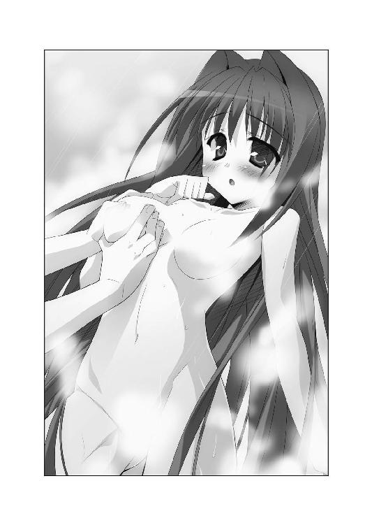
この光景を見れば誰だって、『恭太郎とユフィナがシャワールームでいかがわしい行為に及んでいる』と思うに違いない。
だが、恭太郎は全力で反論するだろう。
『俺は決して、えろいことをしたいワケじゃない！ 仕方なく、ユフィナの胸を摑んでいるのだ！』と。
彼の言葉が真実であるのかどうか。
それを知るためには、少しばかり時間を遡る必要があるだろう──。
×××
「痛たたたたた......」
トレクワーズ王国の後宮。
自室のベッドに横たわった神来恭太郎は、頭に氷囊を載せてうめき声をあげた。頭のてっぺんに巨大なたんこぶができている。
「こんなにデカいたんこぶができたのは久しぶりかもな......」
育ての親代わりだった姉の桜子によって、恭太郎は幼い頃から厳しい剣の修行を課されてきた。滝壺に放り込まれたり、ヒグマと戦わされたり。生傷が絶えず、たんこぶなんて日常茶飯事。
これまでに数え切れないほどのたんこぶを作り続けてきた恭太郎の人生でも、めったにない巨大さだ。
トレクワーズの後宮において恭太郎がケガをする理由は、毎回ほとんど同じである。
「ユフィナのヤツ......。手加減って言葉を知らないのか......？」
ズキズキと痛む頭頂部を氷囊で押さえながら、恭太郎はベッドでうめいた。
「ぶつかったのは不可抗力だろ......。なぜ俺がぶっ飛ばされなきゃいけないんだ......？」
つい先刻のこと。後宮の廊下でユフィナと出会い頭にぶつかってしまった。なにを急いでいたのか、お姫さまのくせに彼女は廊下を走っていたのだ。
ユフィナと一緒にもつれるようにして倒れ込み──気付いたら、恭太郎の視界は白く染まっていた。
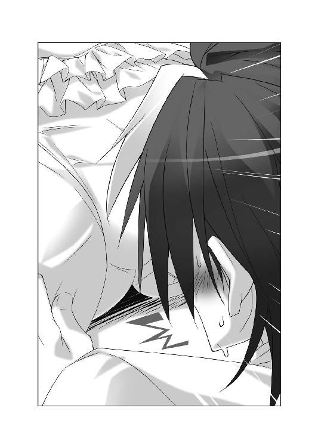
倒れた拍子にお姫さまの純白のぱんつに思い切り顔を埋めてしまっていたのだ。
その後は、いつも通りの展開である。
「きゃあああああっ！ なにすんのよ、恭太郎！ このド変態ッ！」
「どわああああっ!?」
攻撃魔法でぶっ飛ばされた恭太郎は、トレクワーズ王城の城壁に脳天から突っ込んでしまった。石壁に頭がめり込むほどだったから、衝撃の強さが窺い知れよう。よくたんこぶぐらいで済んだものだ。
腕も思い切りぶつけてしまったけれど、幸い軽い打撲で済んだ。一応、包帯を巻いているけれど、治療も必要ないぐらいの怪我だ。自分の頑丈さに感謝せねばなるまい。
「おうおう、見事に腫れ上がっておるのじゃ」
いつの間にか、ピコル師匠が部屋に入ってきていた。
白いローブを纏った髪の長い一〇歳くらいの少女──にしか見えないが、実際には八〇〇歳を超えている。後宮のヌシだ。
ベッドにうずくまる恭太郎を眺めて、師匠は顔をしかめる。
「ううむ、痛そうじゃのぅ。スカートに顔を突っ込まれたくらいで、ユフィナさまも怒りすぎなのじゃ。そのうち、もっとすごいことをされちゃうのに」
「しませんよっ！ 『すごいこと』の想像もつきませんっ！」
「例えば、恭太郎がスカートに顔を突っ込んで、直接ペロペロしたりとか......」
「死んでもしませんてばッ！ というか、どうしてユフィナとぶつかったことを知ってるんですかっ？」
「ぶつかる瞬間を見ておったのじゃ。ほれ、これを飲むがいいのじゃ」
ピコル師匠はベッドサイドにお盆を置いた。錠剤＆水の入ったコップが載っている。
「なんですか、このクスリ？」
「痛み止めじゃ。治癒魔法も込められておるから、よ～く効くのじゃ」
「怪しい......」
思わず、ジト目をしてしまう恭太郎。師匠には何度も騙されて、えっちなハプニングに巻き込まれているのだ。
心外だと言いたげに、ピコル師匠は手を振り上げた。
「怪しむでないわ！ これはワナでもなんでもないのじゃ！ たんこぶぐらいでいつまでも寝込まれて、お世継ぎづくりが滞っては困るのじゃっ！」
「そういうことですか......」
ピコル師匠は氷囊をひっつかんだ。恭太郎の部屋を出て行く。
「氷を替えてきてやるのじゃ。さっさと治すがいいのじゃ！」
残された恭太郎は白い錠剤を眺めた。
「......俺はクスリには頼らない主義なんだが」
幼い頃から、めったに医者なんて行かなかった。大抵のケガは気合いさえあれば治るものだ。折れた骨さえも根性でくっつける。
だけど、ピコル師匠の善意を無駄にするのも申し訳ないよな。
ベッドサイドに立ち上がり、コップの水で白い錠剤を飲み下す。
──変化は、すぐに現れた。
「うお、うおおおお？」
天蓋のついたベッドや白いソファなど、部屋中の家具がみるみる巨大化して──
いや、違う！ 周りのものが大きくなったんじゃない！
「俺のカラダが......縮んでる!?」
恭太郎のカラダが小さくなっていたのだ。
やがて、白い壁に囲まれて、周りの景色が見えなくなってしまった。
壁のように見えているのは......シャツの襟だ。カラダが小さくなったけれど、服の大きさがそのままだったから、恭太郎の着ていた服は全て絨毯の上に落ちてしまっていた。
「どうなってるんだよ、いったい......？」
全裸の状態で、恭太郎は白い襟を乗り越えた。周囲を見渡す。
恭太郎の服が脱ぎ捨てられたようにベッドの下に落ちており、その向こうには絨毯の毛が背の高い草むらみたいに続いている。
対象物がないから推定でしかないが、身長が二センチほどになってしまったようだ。
驚きのあまりたんこぶの痛みも忘れるほどで──って、痛み止めってそういう意味なのかよ!?
「この状況は、間違いなく師匠のくれたクスリのせいだよな？ 事情を説明してもらわなきゃ。でも、その前に......」
恭太郎は襟元から這い出した。砂丘のように波打つ洋服の上を乗り越えていく。
洋服の袖口の辺りに、さっきまで腕に着けていた包帯が蛇のようにとぐろを巻いていた。
「全裸ってのは心許ないからな」
包帯の端を嚙み千切り、全身の力を込めて引き裂いた。
布の中心に穴をあけ、そこから頭を通す。腰には帯代わりに糸を巻き付けた。貫頭衣と呼ばれる簡単な服を作ったのだ。
袖もなければ、下着もない。ひどくみすぼらしい格好だ。でも、全裸よりはマシだろう。
「さて、師匠に事情を聞きに行かなきゃ」
恭太郎が草原のように広がる絨毯の方を眺めやったとき。
ドスン、ドスン、ドスン───恐竜の足音のような地響きが聞こえてきた。
「しまったのじゃ！ さっきのクスリは飲んではならぬのじゃ！」
氷囊を手にしたピコル師匠が、焦ったような顔で部屋に飛び込んでくる。キョロキョロと辺りを見回して、
「クスリを間違えてしまったのじゃ！ どこにいるのじゃ、恭太郎っ！」
「ここですよ、ピコル師匠！」
思い切り声を張り上げたけれど、声は届いていない。カラダが縮んだために、声まで小さくなっているのだ。
「さっき渡したのは《ミニミニくんα錠》というクスリなのじゃ！ 飲むとカラダが縮んでしまうのじゃ！ 痛み止めとソックリなので間違えてしまったのじゃ！」
「間違えないでくださいよ！ なんでそんなクスリを持ってるんですか！」
恭太郎の小さなツッコミが聞こえたかのように、ピコル師匠は続ける。
「恭太郎を二〇センチくらいに縮めて、男性のカラダを学ぶ『生きた教材』として、姫さまがたにイジクリ回してもらおうと考えておったのじゃが......」
「なんて危険なことを考えてたんですか！」
「《ミニミニくんα錠》は不良品なのじゃ！ 飲むと身長が縮みすぎてしまうのじゃ！ 時間が経てば元に戻るとはいえ、あまりに小さすぎるのは危険なのじゃ！」
足音を地鳴りのように響かせて、ピコル師匠がベッドに近づいてくる。
サンダルをはいている足が、恭太郎の真上に迫ってきた。
こ、このままじゃ、踏んづけられる!?
「ぬおおおおおおおおおおおおっ!?」
草むらをかき分けるように、恭太郎は絨毯の毛の中を逃げ回る。
ドス～～～ンっ！──凄まじい地響きを立て、師匠の足が絨毯の上に降ろされる。普通に足を降ろしただけなのに、小さくなっている恭太郎には凄まじい衝撃だった。ホコリが砂嵐のように巻き起こり、吹き飛ばされそうなほどの風が吹き荒れる。
だが、間一髪、踏んづけられることはなかった。恭太郎はベッドの下へ逃げこむ。
ベッドサイドに立った小柄な師匠が、今や見上げるほどに巨大だ。
師匠は恭太郎が着ていた服をひっくり返し、小型化した恭太郎を捜しているようだ。
「どこじゃ、恭太郎!? もし飲んでしまったのなら、すぐに解呪の魔法を使ってやらねば......鳥にでもさらわれたら大変なのじゃ！」
身長は二センチほどに縮まってる。カナブンくらいの大きさだ。動物にとっては格好のエサだろう。
「師匠！ 俺はココですよー！ 気付いてくださ～いっ！」
ベッドの下から手を振って呼びかけようとしたのだけれど、恭太郎の声は届かない。
「まさか、風に飛ばされて屋外に出たのか!? ますます危険なのじゃ！」
ドスドスと重たい足音を轟かせて、部屋の外へと行ってしまう。
一人残された恭太郎は呆然と呟いた。
「このままじゃマズイぞ。動物に見つかったら食われてしまう......。誰かに助けを求めなきゃ......」
そのとき、背後に気配を感じた。
ベッドの下の暗がりで、キラリ☆と目が光っている。
ずんぐりとしたシルエットが揺れた。
「ひょっとして......アレスタか？」
アレスタなら、小さくなった恭太郎にも気付いてもらえるかもしれない。
「助けてくれ！ 師匠に魔法で小さくされちゃったんだ！」
だが、返事はなかった。
代わりに聞こえてきたのは「もきゅっ？」という可愛らしい鳴き声。
近づいてきたのは、茶色の毛に覆われたトビカピバラだった。メルルちゃんが可愛がっているペットのミルンだ。
恭太郎の背中に冷たい汗が伝う。
「やあ、ミルン......。確か、トビカピバラは草食性だったよな。虫とか、小さくなった人間とかは食べないよな？」
ミルンは不思議そうな顔をして近づいてくる。体長五〇センチほどのミルンが特撮映画の怪獣のようにデカかった。身長二センチになった恭太郎にとって、五〇センチというのは一〇階建てのビルよりも大きいのだ。
「カマってあげたいのは山々だけど、今は忙しいんだ。できれば、メルルちゃんの部屋で大人しくしていて欲しいんだが......」
恭太郎が声を掛けるのと、ミルンの両目がハート形になったのが同時。
「もっきゅー」
面白いオモチャを見つけた子どもみたいに、ミルンが駆け寄ってくる。
「ぬおわあああああああああああああっ!?」
絨毯の毛をかき分けて、恭太郎は必死に逃げた。
あんなに大きなミルンにじゃれつかれたら死んじゃう！ 間違いなく死ぬって！
「もきゅっ」
ぶぉんっ！──丸太のように太いミルンの前足が恭太郎の頭上を掠めた。
頭をかがめて絨毯の毛の中に潜り込み、迫り来る肉球を避ける。
「だ、誰か助けてくれー！」
絨毯ゾーンを抜け、大理石張りの床の上へと這い出る。
絨毯よりも走りやすかったけれど、石の床では隠れる場所がない。
「もっきゅー」
ビルよりもデカいミルンが、恭太郎に向けて駆け寄ってくる。
そのとき、声が降ってきた。
「あら？ 恭太郎さまのお部屋のドアが開いてますね」
レイシアが部屋の前を通りかかったのだ。
杭打ち機みたいな音を立てて、レイシアのヒールがすぐ目の前にそびえ立った。
「恭太郎さまは......いらっしゃらないみたいです」
「おーい、レイシア！ 俺はここだーっ！」
声を掛けたけれど、第二王女は気付かない。
その間も、ミルンは恭太郎にじゃれつこうと迫ってくる。
「もきゅっきゅー」
恭太郎を押さえ込むために、ずんぐりとしたトビカピバラがジャンプした。両足で恭太郎を押さえつけようとする！
「うわっ!? 潰されるっ!?」
とっさにすぐ横にそびえ立っているレイシアの足首に飛びついた。
第二王女は白いストッキングのようにも見える、目の細かい網タイツをはいていた。編み目に手を掛け、くるぶしの辺りにくっつく。
「ミルン。勝手に恭太郎さまのお部屋に入っちゃダメですよ？」
しゃがみ込んだレイシアはミルンを抱き上げた。
恭太郎の部屋からミルンを出し、ドアを閉める。
「花壇のお花が綺麗に咲いたから、恭太郎さまがいらっしゃったら、お見せしようと思ったんですが......また今度にしましょう」
残念そうな声で言うと、レイシアは歩き出す。
王女さまが一歩踏み出すたびに、凄まじい風が吹き荒れた。絶叫マシンに乗っているみたいだ。
「どうしたらいいんだよ......？」
振り落とされないように網タイツに必死にしがみつきながら、恭太郎は考える。
さっさとレイシアの足首から離れるべきか？
いや、その方が危険だ。一人になったら小動物に襲われてしまう。レイシアにくっついてる方がまだ安全だろう。
だが、いつまでもレイシアのくるぶしにしがみついてるワケにもいかない。
もしも振り落とされたら、踏んづけられてしまう恐れがある。
できるだけ早く彼女に気付いてもらわねばならない。
小型化してしまい、声まで小さくなってしまった自分の存在に気付いてもらうには、どうしたらいい？
必死に考え抜いた末、恭太郎は一つの結論に辿り着いた。
「こうなったら仕方ない！ レイシアのカラダを登ろう！」
いくら声が小さくなっていても、耳のそばで叫べば気付いてくれるだろう。
足首から肩の上まで──洋服伝いにレイシアのカラダを登っていって、大声で助けを求めるんだ。
俺にできることは、それしかない！
恭太郎は目指すべき上方を睨み付け、すぐさま顔を背けた。
今、彼はレイシアのくるぶしにくっついている。つまり、上を向くと──スカートの中が完全に見えてしまうのだ!!
ストッキングみたいな白い網タイツに包まれたむっちりとした脚と、その上にあるぱんつまでバッチリ覗けてしまった。
「なるべく、上は見ないようにします。お許しください、姉上！」
恭太郎はタイツの編み目に手を掛けて、レイシアの脚を登っていく。
王女さまが動くたびに凄まじい振動が襲ってくるけれど、タイツの編み目に手足を掛けられるので比較的登りやすかった。
「よし、これならいけるぞ......！」
レイシアの脚を螺旋状になぞっていくように、ふとももの外側へと回り込みつつ、上を目指していく。
どうして、ふとももの外側へ回り込んだのかって？
そんなの決まってる！ 内ももを登っていったら、その先にあるのはぱんつなのだ！
いくら小さいからって、レイシアのぱんつの中に潜り込むワケにはいかない。ぱんつの外側を通過する以外ないのだ。
恭太郎は決死の覚悟で網タイツを登っていった。
だが、ふとももの中程で、彼の動きがぴたりと止まる。
網タイツが途切れていたのだ。ニーソックスみたいに、網タイツがふとももの途中で止まってる。ガーターベルトなどは着けていなかった。
その上にあるのは、むだ毛の一本だって生えていないすべすべしたふともも。
網タイツの最上部、レースで飾られた部分に手を掛けて、恭太郎は困り果てた。
「どうすりゃいいんだ......？ もう登りようがないぞ？」
恭太郎は今、レイシアの右足のふとももの外側にくっついている。
彼の周囲では、レイシアのドレスのスカートが緞帳のようにヒラヒラしていた。
ジャンプしてスカートに飛び移るか？
いや、それはムリだ。仮に飛び移れたとしても、恭太郎は昆虫ではない。握力だけで布を登っていくことなんて不可能だろう。
そのとき、頭上でなにかが揺れているのに気付いた。
思いつく限りの神仏に許しを請うた後で、恭太郎は上を見る。
──ヒモだ。
地獄にいるカンダタに向かって垂らされた蜘蛛の糸のように、ふとももにへばりついた恭太郎へと水色のヒモが降ろされていた。
だが、それは蜘蛛の糸ではない。
思わず赤面してしまいつつ、恭太郎は呟く。
「......レイシア、今日はヒモぱんだったんだな」
すぐ頭上で、ヒモぱんのヒモが振り子のように揺れていたのだ。色は薄いブルー。ローレグ気味で、おしりの割れ目がちょっぴり下着から顔を出している。
「うふふ、いっぱいお水をあげますからね。綺麗な花を咲かせてくださいましね♪」
自分の脚で大冒険が繰り広げられているとは気付かず、レイシアは後宮の中庭にある花壇へと向かったようだ。
レイシアは庭園のお花の手入れを趣味にしているのである。
「♪るふふふーん」
楽しげな鼻歌を唄いながら、王女さまは水やりをはじめた。
「婦女子の下着に触れるなんて、本来なら切腹ものだけど......今は緊急事態なんだ。レイシア、許してくれ」
王女さまに謝りつつ、恭太郎は頭上で揺れるヒモを睨み付けた。
「行くぞ──！」
失敗すれば、地面に叩きつけられる。
身長二センチの恭太郎にとって、レイシアのふとももは巨大なタワーの展望室と同じような高さだ。落ちたら無事では済まない。
だが、やるしかないのだ！
「とりゃあっ！」
気合い一発、振り子のように揺れるヒモへとジャンプを敢行。
見事、空中でヒモにしがみつくことに成功した！
「............」
我ながら格好いいアクションシーンだと思うのだけど、網タイツからヒモぱんへとジャンプしたと考えると途端に情けなく感じるのはなぜだろうか。
深く考えたら泣きそうだったので、恭太郎はヒモを登ることに専念することに決めた。
木登りの要領で、両脚でヒモを挟みつつ、カラダを上へと運んでいく。
何度も山ごもりをさせられたから、恭太郎は木登りが得意だ（樹上の果物を手に入れなければ、飢え死にしてしまうような状況が幾度もあったのだ）。つるつるした竹だって登れる彼にとって、ヒモを登っていくのは容易なことだった。
しかし、ウィッチェリア大陸の女神は、王仕さまにさらなる試練を与えたもうた。
ズズズ...──突如、ヒモにしがみついている恭太郎のカラダが下にずり落ちた。
しっかりヒモを摑んでいるのに、どうして落ちたんだ？
「ま、まさか!?」
恭太郎はヒモの先を見上げた。
「ひ、ヒモぱんの結び目がほどけてるー!?」
蝶結びになっている結び目が、恭太郎がしがみついたせいで、ゆっくりとほどけはじめていたのだ！
「うわっ、これはマズイっ！ いろいろな意味でヤバ～～～いっ！」
叫んでみても、為す術などない。
スルスルと蝶結びはほどけて──やがて、完全にはずれてしまった。
「うおおおおおおおおおおおっ!?」
「きゃあああああああああんっ！」
レイシアと恭太郎の悲鳴が重なった。
ふとももからおしりの方へ、ほどけたヒモがターザンロープのように大きく揺れる。
恭太郎はしがみついていることもできず、空中へ放り出されてしまう。
地面に叩きつけられて、このまま死んでしまうのか──!?
ところが。
ほぼ同時にレイシアがしゃがみ込んだ。
「下着が脱げてしまいましたっ」
スカートの裾から手を入れ、ヒモぱんのヒモを結び直す。
「あぅぅ、恥ずかしいです......。こんな姿を恭太郎さまに見られたらレイシアは生きてはいけません......」
なにがどうなったのかわからない。だが、恭太郎は地面に叩きつけられずに済んだ。
放り出された瞬間にレイシアが屈んだため、うまい具合にレイシアのおしりの上に着地できたのだ。なんというアクロバットだろう。
レイシアのおしりはものすごく柔らかく、足が沈み込んでしまうほどだった。
嗚呼、レイシアは胸だけじゃなくて、おしりも柔らかいんだなぁ......って、感動してる場合じゃない！
ぱんつのヒモを結び終えたら、レイシアは立ち上がってしまう。そうなったら、恭太郎は落っこちてしまうのだ。
急いでおしりを這い登る。柔らかくてプニプニしたヒップは、ものすごく登りづらかった。風船の上を歩いているようだ。おしりの上を歩くって、大変なことだったんだな。っていうか、そんな豆知識は一生知りたくなかったよ！（涙）
レイシアが立ち上がる直前、間一髪でドレスの背中にあるチャックの内側の金具に飛び移ることに成功した。
「よし、このままチャックを登っていこう」
小さくなって初めて気付いたのだけれど、チャックは非常に登りやすい形状をしていた。互い違いに嚙み合っている金具に手を掛けて、ハシゴのように登っていくことができるのだ。
一心不乱にチャックを登り続ける。
レイシアのドレスの中は温かくて、なんだか甘いような女の子の香りがした。
胸の鼓動が高鳴ってしまったのは、激しい運動をしているせいじゃないだろう。
彼のすぐ背後には、レイシアの綺麗な背中やブラジャーのヒモがあるのだが、当然ながら見たりしない。
恭太郎は一気にレイシアの肩胛骨の上辺りまで登っていった。
「ふぅ......やっと辿り着いたな......」
ドレスの背中側から顔を出す。目の前にはレイシアのふんわりしたロングヘアが広がっていた。シャンプーのフローラルな香りに包まれて、クラクラしてしまう。
もっと嗅いでいたい衝動を懸命に堪え、レイシアの耳に向けて大声で呼びかけてみた。
「おーい！ レイシアー！」
「......あら？ どこか遠くで恭太郎さまのお声がしたような......？」
王女さまは声の出所を捜してキョロキョロしてる。
よし、もっと耳元に近づこう。
恭太郎はドレスの襟を伝い、レイシアの肩へと登った。
王女さまの肩の上は絶景だった。レイシアの身長は一六〇センチそこそこだと思うのだが、二センチに縮んでいる恭太郎にとっては超高層ビルのてっぺんと同じなのだ。見慣れた後宮の中庭の景色なのに、なにもかもが雄大に見える。
世界最高峰に登頂した登山家のような気分に一瞬だけひたりつつ、恭太郎は両手でメガホンを作って、レイシアの耳に向かって声を掛けようとした。
そのとき──ゴオオオっ！
ふいに強い風が吹き抜けた。
そよ風であっても、小さくなっている恭太郎にとっては突風と同じだ。
「うわわわわわっ!?」
バランスを崩した恭太郎は、レイシアの肩から転げ落ち──もにゅにょんっ
次の瞬間、彼の身体はものすごく柔らかいものに包まれていた。
「ココは......胸の谷間か!?」
大きく開いたドレスの胸元から、おっぱいの間に落っこちてしまったのだ!!
レイシアの爆乳に全身を挟まれ、谷間から顔だけを覗かせている状態。
透き通るようにお肌が白くて、すべすべで、気が遠くなるほど柔らかくて、それでいて不思議な張りと弾力がある──恐らく、この世で一番柔らかいものに、恭太郎のカラダ全体が包まれているのだ。
「ふぉおおおおお～～～～......」
一か月ほど砂漠を彷徨い歩いた旅人が、ようやく辿り着いたオアシスでお風呂に入った瞬間のような声が口から漏れてしまった。
思わず自分が置かれている状況も忘れるくらいに心地良い。
嗚呼、レイシアのおっぱいにずっと挟まれていたいよ......。
「って、馬鹿者ォ！ 目を覚ませ、神来恭太郎ッ！ 浸ってる場合じゃないぞ！」
婦女子の胸に挟まれるなんて、言語道断だ。一刻も早く抜け出さなくてはならない。
おっぱいの谷間から脱出すべく、恭太郎は手足を動かした。
だが、もがけばもがくほど、カラダが谷間の奥へと落ちていってしまう。
レイシアのおっぱいは、すべすべ＆プニプニ。足場どころか、手を掛けられるようなものすらないのだ。
「う、うわっ!? ヤバい！ これはマズいって......うぷっ!?」
どんどん谷間の奥へと沈み込み、ついには顔までもが胸の間に入ってしまった。
超巨大な水風船のような二つのおっぱいに、両側からほっぺを挟まれる。
嗚呼、柔らかくて気持ちいい......
またもや桃源郷にいるような気分に陥ってしまうが、すぐにピンチに気付いた。
「い、息ができないっ!?」
みっちりと柔らかい爆乳に全身を包まれているから、猛烈に息苦しかったのだ。
は、早く脱出しなきゃ！ このままじゃ死ぬ！ おっぱいに溺れて死ぬ！
懸命に手足をバタつかせるけれど、顔を出すことができない。
おっぱいという名の底なし沼に、恭太郎のカラダは引きずりこまれてしまう。
柔らかすぎる爆乳に包まれて最期を迎える──おっぱい星人ならば、理想的な死に様かもしれない。
だが、俺は違う！ おっぱい星人なんかじゃない！ 間違っても墓碑銘に『神来恭太郎、享年一六歳。おっぱいに挟まれて死す』なんて刻まれるワケにはいかないんだ！
「ぬおおおおおおっ!!」
両手足を柔らかなおっぱいに突っ張り、懸命に上を目指して登っていく。
すると、恭太郎の耳に悲鳴が聞こえてきた。
「きゃあああんっ！ 服の中に虫が入ってしまいましたぁっ！」
レイシアが叫びながら、カラダを震わせた。
恭太郎を包み込んでいる爆乳が王女さまの動きにあわせて──ばよえん、ぼよえんっ。
左右に思い切り揺れまくる。
「うわあ、死ぬっ！ いろんな意味で死んじゃうって！」
高波にもまれるように、恭太郎もおっぱいに包まれたまま翻弄される。
と、レイシアの泣きそうな声が恭太郎の耳に届いた。
「む、虫さん、ごめんなさいっ！」
レイシアの手が胸の谷間に入ってきた。
クレーンのアームみたいな大きさの指に挟まれ、恭太郎は摘まれてしまう。
そして──ぽいっ。
空中に放り出された。
レイシアが、恭太郎のカラダを摘んで放り投げたのだ。
上空一メートル五〇センチほどの距離から、スカイダイビングをすることとなってしまった。
当然、パラシュートなんてつけてない。
このまま地面に叩きつけられれば、いくら頑丈な恭太郎とて無事では済まないだろう。
だが、レイシアを責めるワケにはいかない。
花壇の手入れをしていたら、服の中に体長二センチほどのなにかが飛び込んできて、もぞもぞと暴れていたら──誰だって虫だと思う。魔法で小型化した恭太郎だと気付けって方が無茶だ。
自由落下を続けながら、恭太郎は大地を睨み付ける。
「このまま死んでたまるかよ......!!」
レイシアを悲しませないためにも、なんとか助かる方法を考えなくては！
そのとき、恭太郎の視界になにかが映った。
白い傘のようなものが空中に浮いている。
綿毛だ。タンポポの綿毛。
気付いた瞬間、無我夢中で手足を動かしていた。空中で泳ぐようにもがき、綿毛に近づいていく。
すれ違う、わずかな一瞬──タンポポの綿毛にしがみついた。
自由落下を続けていた恭太郎のカラダが、ふわりと宙に浮く。
助かった......！
安堵したのも束の間、またもや風が吹いた。
「うおおおおおおっ!?」
タンポポの綿毛は風に舞い、恭太郎を乗せたまま空高く舞い上がる。
メリー・ポピン○みたいに、恭太郎は綿毛に乗って空を飛んでいた。
タンポポの綿毛に乗って移動するなんて、どんだけメルヘン展開だよ!?
「というか、コレってものすごく危険なんじゃないのか!?」
後宮の中庭から、王城の方へ──綿毛はどんどん空へと舞い上がっている。今やお城の尖塔と同じぐらいの高さまで上がっていた。
恭太郎は綿毛の種の部分にしがみついているだけ。命綱などつけていない。手を滑らせたら大怪我じゃ済まないだろう。
必死にタンポポの種にしがみつきつつ、恭太郎は祈った。
「なんとか無事に着陸してくれ！」
綿毛は恭太郎を乗せたまま宙を舞い、お城の方へと飛んでいった。
みるみる王城が近づいてくる。
「お、おい、マズいって!! このままじゃ、壁にぶつかる～～～～っ!?」
だが、ラッキーなことに壁にはぶつからずに済んだ。
恭太郎をぶらさげた綿毛は、開け放たれた窓へと飛び込んだのだ。
しかも、さらに幸運なことに、そこはユフィナの部屋だった。
彼女なら【解呪】が使える。恭太郎を元に戻せるのだ！
部屋の主である王女さまは、ムスっとした表情でソファに座り、腕組みをしている。
「おーい！ ユフィナー！」
タンポポにぶらさがったまま呼びかける。
だが、王女さまは気付かない。怒ったような顔で、テーブルの上に載ったチョココロネを睨んでいる。
綿毛はユフィナの方へと飛んでいった。
ぶつかる直前に、恭太郎はユフィナに向かってジャンプ。
王女さまの赤いポニーテイルに飛び移ることに成功した。
ユフィナは、それでも恭太郎には気付かなかったようだ。
腕組みをしたまま、ムカついたような声で怒鳴る。
「なによ、もうっ！ 恭太郎のヤツっ！ ドサクサに紛れて、スカートの中に顔を突っ込んでくるなんて！ 油断も隙もないんだからっ！ あのド変態っ！」
ユフィナはまだ怒ってるんだ。
「わざとじゃないんだって！ あれは事故なんだよ！」
思わず言い返したけれど、恭太郎の声は王女さまには届かなかったようだ。
ふいに、彼女の顔が申し訳なさそうな表情に変わる。
「でも、魔法で思い切りぶっ飛ばしたのはやりすぎだったかしら......。女官の話じゃ、大きなたんこぶができちゃったらしいし......。いちお、謝りにいった方がいいかな......」
ユフィナなりに反省してくれているのか。
第一王女はテーブルの上のチョココロネを見やって。
「せっかく初めて自分で作ったんだもん。やっぱりアイツにも食べて欲しいわよね......」
それって自分で作ったのか？
ポニーテイルにしがみついたまま、恭太郎はテーブルの上を見やる。お皿に載ったチョココロネはちょっぴり不格好だった。パンの生地がイビツだし、チョコもはみ出してしまっている。
「できたてホヤホヤを食べて欲しかったんだけどな......。んもうっ、恭太郎がヘンなことするから冷めちゃったじゃない！ 恭太郎のバカっ！」
ひょっとして、ユフィナが後宮の廊下を走っていたのは、俺に焼きたてのパンを食べさせたかったからなのかな。
「自分で食べちゃおうかな......？」
じゅるり──舌なめずりの音が聞こえたような気がした。チョココロネはユフィナの大好物なんだ。
恭太郎を髪の毛にくっつけたまま、ユフィナは首を横に振った。
ポニーテイルがブンブンと揺れる。振り落とされないように、懸命にしがみついた。
「ううん。食べちゃダメよっ。せっかく作ったんだもんっ」
立ち上がったユフィナは、壁際にある白いライティングデスクへと向かう。
メモ用紙にペンを走らせ、その紙をチョココロネの載ったお皿に置く。
メモ用紙に書かれている文字を見て、恭太郎は驚いた。
『恭太郎のぶん』
大好物のチョココロネを自分でうっかり食べてしまわないように、わざわざ書いておいたんだろう。
「子どもかよ......」
呆れたように恭太郎は片手で髪を摑んだまま、もう片方の手で頰を搔いた。頰が熱くなってる。たぶん、真っ赤になってるだろう。
ユフィナの行動が、ものすごく可愛く思えてしまったのだ。
手作りのチョココロネを食べさせたいと思ってくれたことも、とてもうれしい。
「後で味わわせてもらうよ、ユフィナ」
そのためには──恭太郎はポニーテイルを見上げた。
この髪を登りきり、ユフィナの耳元で助けを求めよう。そして、小型化の魔法を解いてもらうんだ！
恭太郎はユフィナのポニーテイルを登っていった。
ユフィナの赤っぽい髪はとても艶やかで、気をつけないと手を滑らしそうだ。
両手に髪の毛を絡めつつ、注意深く上を目指してポニーテイルを登る。
レイシアのカラダを登ったり、タンポポの綿毛にしがみついたり──既に握力は限界に達していたけれど、ここで手を離すわけにはいかない。
髪を束ねるリボンに辿り着いたとき、恭太郎の耳にユフィナの声が届いた。
「ちょっと頭を冷やしてから、恭太郎のところに行こうっと」
ユフィナが歩き出す。
頭を冷やすって、どこへ行くつもりだ......？
王女さまが向かっている場所がどこなのか気付いて、恭太郎の背筋が凍り付いた。
ユフィナが向かったのは、王宮の浴室。
シャワーを浴びるつもりなんだ！
焦りまくる恭太郎には気付かず、ユフィナはお風呂で待機していた女官に声を掛ける。
「いつも通り一人で入るから、下がってていいわよ」
王族が服を着替えたり、お風呂に入ったりする場合は、女官が手伝うのが一般的だ。
だけど、ユフィナは自分でできることは、大抵一人でやってしまうのである。
「♪ふっふふ～ん」
調子っぱずれな鼻歌を唄いつつ、ドレスを脱ぎはじめる。
「ユフィナー！ ストップ！ 脱いじゃダメだーっ！」
必死に声を掛けたけど、聞こえないようだ。
背中のチャックを降ろしてしまう。
ふゎさっ──衣擦れの音を立てて、ドレスを脱ぎ捨ててしまう。
下着姿になったユフィナは、脱衣室に置かれた鏡に自分のカラダを映した。
「最近、また食べ過ぎちゃったからオナカとかヤバくないかな？ 大丈夫かしら？」
心配そうな顔で、鏡に向かってポーズを取るユフィナ。
「ヤバいよ......！ 明らかにヤバい！」
リボンにしがみついている恭太郎は、聞こえたらユフィナが激怒しそうな言葉を叫んだ。
だが、彼女の言った『ヤバい』とは意味が違う。王女さまはオナカを気にしていたけれど、まったく問題なかった。キュッとくびれた、綺麗なウエストラインだ。
白いブラに包まれた胸はものすごく大きく、おしりはキュッとしまってる。
ユフィナの下着姿があまりにえっちくて、鼻血を噴きそうなほどだったのだ。
慌てて目を閉じる恭太郎の耳に、さらなる衣擦れの音が届く。
下着を脱いだんだ。
恭太郎がしがみついているリボンにも手が伸びてきた。慌てて、赤毛に飛び移る。
ポニーテイルを解いたユフィナは、大きく髪を振った。
「ぐおおおおおおおおっ!!」
振り落とされないようにしがみつく。
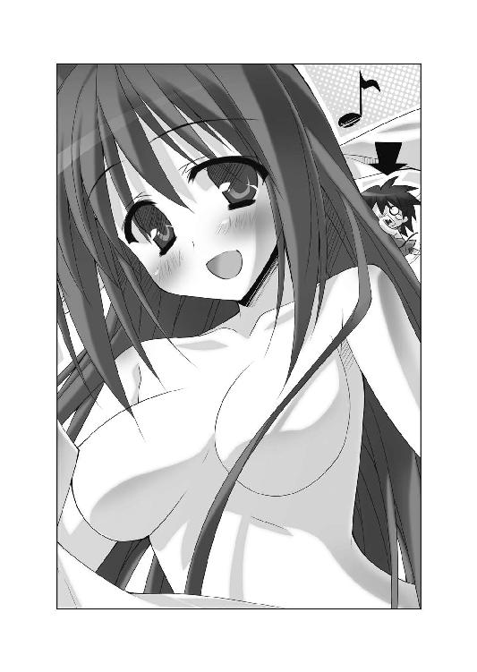
自分の髪で一大スペクタクルが繰り広げられてるとも知らず、
「♪るららら～ん」
ユフィナは鼻歌交じりに、お風呂場へと入っていった。
微かな水音と湯気が、髪の毛にぶらさがる恭太郎を包む。
このままお風呂に入られたら危険だ。排水口に流されたら、間違いなく溺れて死んでしまうだろう。
彼女がシャワーを浴びる前に気付いてもらう──それしかない!!
必死に髪の毛を摑み、恭太郎は頭頂部を目指して登り続けた。
ユフィナはシャワーへと真っ直ぐに向かっていく。
「ユフィナー！ やめろー！」
叫びながら、髪の毛を登る。
王女さまがシャワーの前に立ったのと、恭太郎が彼女の頭のテッペンに辿り着いたのが、ほぼ同時。
ユフィナの身長は一六五センチ。身長二センチの恭太郎からすれば、目も眩むような高さだ。
しかも、恭太郎のすぐ上にはシャワーヘッドがある。
無数の穴が、銃口みたいにこちらを狙っていた。お湯という名の機銃掃射を喰らえば、恭太郎は為す術なく流されてしまうだろう。排水口に吸い込まれた先のことなんて、考えたくもない。
「ユフィナっ！ 頼む！ 気付いてくれー！」
恭太郎はユフィナの頭の上に四つん這いになった。片手で髪の毛を摑みながら、もう片方の手で王女さまの頭をポコポコ叩く。
「あれ？ 恭太郎の声が聞こえる......？」
よかった！ 気付いてくれた！
「気のせいよね。アイツは変態だけど、お風呂を覗くような卑怯なマネはしないし」
ユフィナは蛇口に手を掛ける。
「うわー！ ダメだって！ 俺が頭のテッペンにいるんだよ～～～～～～っっっ!!」
恭太郎の叫びも空しく、蛇口は捻られてしまった。
シャワーヘッドから勢いよく、大量のお湯が降り注いでくる。
「ぐおおおおおおおおおおおおおっ!?」
身長二センチの恭太郎にとって、シャワーのお湯はナイアガラの滝と同じだ。
髪の毛を摑み、なんとか流されまいとしたけれど──耐えきることなど不可能だった。
「うわあああ～～～～～～っっっ!?」
頭のテッペンから、ユフィナの肩の上へと流されてしまう。
「わっぷ!?」
鎖骨のくぼみにできた小さな水たまりに頭から突っ込んだ。
さらなる水流に押し流され、鎖骨から胸の方へと続くスロープを滑っていく。
ユフィナは、かなりの巨乳の持ち主だ。
王女さまの巨乳が今は、ウォータースライダーとなっていた。
言うなれば、おっぱいスライダーである！
っていうか、婦女子の胸なんて見ちゃいかああああああんっ！
この期に及んでも、彼はカタブツなサムライ少年であった。
しっかりと目を閉じたまま、おっぱいスライダーの上を猛スピードで流されていく！
「うおおおおおおおおおおおおおっ!?」
ユフィナの巨乳を滑りきり、空中に放り出されれば一巻の終わり。
無我夢中で手足を振り回し、恭太郎はなにかにしがみついた。
目を閉じていたから、なににつかまったのかはわからない。
一瞬だけ手が触れたプニっとした小さな突起に、全力でしがみついたのだ。
「......あっ」
ユフィナの甘い声が聞こえてくる。
その声を聞いて、自分がしがみついているものがなんなのかわかった。
俺が今、全力で摑んでいるのは、ユフィナの胸の先端の──!!
でも、離すワケにはいかないんですッ！ お許しください、姉上ぇッ！
「んんっ」
滝壺にいるかのような轟音の向こう側から、ユフィナの甘やかな吐息が聞こえてくる。
ドキドキしてしまいつつも、流されないように、ポツっとした小さな突起に両手でしがみついた。
「うおおおおおおおお～～～っ!? なーがーさーれーる～～～～～～っっっ!!」
「はうっ なんだか急に胸が気持ちよくなって......」
ユフィナが戸惑いの声をあげた。
くにくにくにっ──懸命に胸の先端を摑んで、恭太郎は叫ぶ。
「胸になにかくっついてるっ!?」
「ユフィナ、気付いてくれぇ！ 俺がココにいるんだよ！ ぐおおおおっ!!」
凄まじい水圧で、息ができない。
もはや、握力も限界。今にも手が離れてしまいそうだ。
それでも、懸命に恭太郎は叫び続けた。
「お願いだ、お湯を止めてくれ～～！ 流されるー!?」
そのときである。
──ぼゎんっ。
白い煙がシャワールームに立ちこめた。
「ぐおおおおおっ！ ぬおおおおおっ！ 気付いてくれー！」
「恭太郎......？」
春の雨のように降り注ぐシャワーに打たれながら、ユフィナが呆然とした声で呟く。
「頼むよ、ユフィナ......！」
恭太郎は目を閉じたまま、必死にユフィナの胸につかまり続けていた。
「どうして、あんたがココに......？」
そぉーっと目を開いてみた。
全裸のユフィナが呆然とした表情で、恭太郎を見つめてる。
彼女のキョトン顔は、恭太郎の目線よりも下にあった。
魔法が解けて、恭太郎の身長が元に戻ったのだ！
「助かった!!」
大喜びする恭太郎なのだったが。
自分の状況に気付いて、全身の血の気が引いていった。
大きくなってしまったために、包帯で作った貫頭衣は弾け飛んでいる。
つまり、恭太郎は全裸だ。
当然、入浴中だったユフィナもハダカ。
降り注ぐお湯の飛沫と湯気で視界は悪いけれど、二人は一糸纏わぬ姿で向かい合っているのである。
しかも、流されたくない一心でしがみついていたユフィナの胸を、恭太郎は未だに摑み続けていた。
──もにゅんっ
柔らかすぎるナマ乳の感触が、手のひらを通じて伝わってくる。
「ぬおっ、すまん！」
大慌てでおっぱいから手を離し、恭太郎は片手をあげて挨拶してみる。
「や、やぁ、ユフィナ。こんなとこで会うなんて、奇遇だね。あははは」
「............」
「............」
「............」
「............」
びしょ濡れのまま、見つめ合う二人。
数秒後、ユフィナが絶叫した。
「きゃああああああああああああああああああああああああ～～～～～～っっっ!!」
「うわ、待ってくれ！ 違うんだ！ 話せばわかるって！」
「どうやったのか知らないけど、突然お風呂に忍び込むなんて！ しかも......む、胸をもむなんて！ アンタ、最低よっ！ こンのド変態──ッ！」
タオルでカラダを隠した王女さまは、手を横に伸ばした。
「来たれ、【烈炎神剣】！」
ユフィナの腕に巨大な手甲が装着され、続けざまに炎に包まれた剣が出現。
「武器を出すな！ これにはワケがあるんだよ！ 俺も大変だったんだぞ!? 死ぬかと思ったんだ！」
「問答無用よ！ 天誅──ッ!!」
王女さまはシャワールームで、炎の大剣を振り上げて。
「もぎゃ～～～～～～～～～～っっっ!!」
×××
トレクワーズ王国。後宮。恭太郎の部屋。
「いやはや、さっきはすまなかったのじゃ。クスリを間違えるなんて、吾もとんだオチャメさんなのじゃ。てへっ♪」
ベッドで寝込んでいる恭太郎を見やって、ピコル師匠が舌を出した。
「......言っておきますけど、ちっとも可愛くないですからね？」
呻くように答えた恭太郎。彼は包帯でグルグル巻きになっている。
ユフィナにぶっ飛ばされたせいで、全身がボロボロだったのだ。
骨こそ折れていないけれど、打撲やネンザで身体中が痛い。
「だから、謝っておるではないか。本当にすまなんだ。今回ばかりは吾のミスなのじゃ。おぬしが小鳥のエサになってしまわなくてよかったのじゃ」
言いながら、ピコル師匠はベッドサイドにお盆を置いた。
錠剤＆水の入ったコップが載っている。
思わず、恭太郎はビクッと身体を震わせてしまった。
「今度こそ、本物の痛み止めじゃ。治癒魔法も込められておるから、よ～く効くのじゃ。飲むがいいのじゃ。ほれほれ」
師匠が白い錠剤をつまみあげ、こちらへ突き出してくる。
「か、勘弁してくださーい！」
ベッドから飛び降り、恭太郎は逃げ出した。
ピコル師匠には悪いけど、しばらくクスリなんて飲む気にはなれませんよ！
ハーレム講座☆ピコルの穴！ その３！
ピコル（以下、ピ）「ピコル師匠プレゼンツ☆ハーレム講座！ 題してピコルの穴！ その３！ はーじまーるよー！」
アレスタ（以下、ア）「生徒役のアレスタです！ いぇーい！ 待ってましたーっ！」
ピ「むぅ？ ノリノリじゃなあ、アレスタ。例のアレを期待しておるのか？」
ア「もちろんですよ！ そろそろ《妄想カメラくん１号》を使う頃合いですよね！」
ピ「説明しよう！ 《妄想カメラくん１号》とは、頭になにかを思い浮かべながらシャッターを切ると、そのイメージを写真に撮ることができるマジックアイテムなのじゃ！」
ア「僕がえっちな妄想をして、ものすごい写真を撮っちゃうからね！ 期待しててー！」
ピ「今回はアレスタには使わせないのじゃ」
ア「どうしてですか！ 僕の調査によれば、読者のうち九割九分八厘の人たちが妄想カメラくんがフル活用されることを望んでいるんですよ！ そうだろ、みんなー!?」
ピ「いつの間に調べたのじゃ。テキトーなことを言うでないわ。というか、アレスタには使わせないと言っただけで、妄想カメラくんを使わないと言ったワケじゃないのじゃ。吾はいつだって、ひめぱらを応援してくれる読者諸君の味方じゃからな」
ア「僕はえっちな妄想には自信があるのに......。どうして、僕に任せてくれないんです？」
ピ「美味しい料理だからと言って、毎日同じものを食べていては飽きてしまうじゃろう。それゆえ、たまには趣向を変えて、料理人を変えてみてはどうかと思ったのじゃ」
ア「どういう意味ですか？」
ピ「具体的に言うなら、いつもはアレスタに《妄想カメラくん１号》を使わせておるが、たまには別の男にも使わせてみてはどうかと思ったのじゃよ！」
ア「なるほど！ 僕には妄想できない、新しいエロ写真が撮れるかもしれませんね！ それはナイスアイデアですよ！」
ピ「と言うわけで、コヤツに妄想してもらうのじゃ！ さあ、入ってくるのじゃー！」
恭太郎（以下、恭）「んー!? んんー!?」
ア「って、恭太郎が猿ぐつわされてますよ!? 手足も縛られてるみたいだし！」
ピ「どうせ恭太郎のことじゃから、『妄想カメラなんて使いませんよ！』なんて言い出すに決まってるのじゃ」
ア「恭太郎はカタブツですもんねぇ」
ピ「ましてや、使った後は副作用でちょっぴりアホの子になってしまうじゃろ？」
恭「んんんんっ!?」
ア「アホの子になっちゃうなんて、最悪ですよね。えっちな写真が撮れるってご褒美がなかったら、絶対に使いたくありませんよ」
ピ「ま、幸いにも、恭太郎は快諾してくれているようじゃがのう」
恭「んんー!!」
ア「そんなに喜ぶなんて、恭太郎も実はえっちなんだなぁ」
恭「んんー!! んんー!!」
ピ「そうかそうか。そんなに《妄想カメラくん１号》を使いたいか。すぐに装着してあげるのじゃ。ちなみに、妄想カメラくんを使う時は、このヘルメットを被るのじゃが......内側がトゲトゲになってて、ものすごく痛いから注意するのじゃ」
恭「んんっ!! んんんーっ!?」
ア「あの......ところで、ピコル師匠？」
ピ「なんじゃ？」
ア「ぶっちゃけた話、恭太郎も僕と同じで、カルタギア帝国に捕まっちゃってるんですけど......その辺は大丈夫なんでしょうか？」
ピ「心配いらん。その辺は例の魔法でなんとかすればいいのじゃ！ せーの──」
ピ＆ア『細けぇことは、気にすんな！（呪文）』
ピ「《妄想カメラくん１号》を恭太郎に装着するのじゃー。とりゃ！」
恭「ん～～～～～～～～～っっ!!」
ア「さあ、恭太郎！ えっちなことを妄想しちゃってよ！」
ピ「おぬしが特にえろいと思うシチュエーションはなんじゃ？ しっかりと妄想するがいいのじゃ～っ！」
恭「んんっ！ んんんっ!!」
ア「なんて言ってるんでしょうね？」
ピ「きっと『俺はえっちな妄想なんてしない！』などと言ってるに違いないのじゃ！ でも、恭太郎はムッツリじゃからの」
ア「頭の中では、とびきりえっちなことを考えてるに違いありませんよ。それじゃ、シャッターを切ってみましょう！」
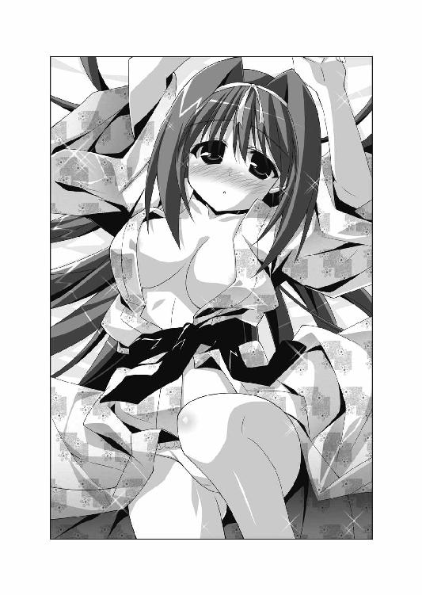
ア「うわあ！ 見たことない服装だけど、すごくえっちぃよー！」
ピ「これは、恭太郎の祖国の民族衣装じゃな。実に色っぽいのじゃ！ やっぱり、恭太郎はムッツリスケベじゃのぅ！ このこのー！」
恭「んんんんんんんんんんんんんんんんんんんんんんんんんんんん......」
ア「なにを喋ってるんだろう？」
ピ「ちょっと猿ぐつわをハズしてみるのじゃ」
恭「りりりりり、ららららら、あばばばばばばばばば」
ア「わあ！ 妄想カメラくんの副作用で、恭太郎がちょっぴりアホの子になっちゃってますよ！」
ピ「......聞かなかったことにして、猿ぐつわをもう一度つけておくことにするのじゃ」
ア「そ、それがいいですね......。ごめんね、恭太郎」
恭「んんんんんんんんんんんんんんんんんんんんんんんんんんんん......」
ピ「というワケで、ピコルの穴、今回はここまで！」
ア「次回をお楽しみに～～～♪」
恭「んんんんんんんん～～～♪」
第四話 ハダカの王女さま
☆放映開始まで、あと五時間
「（きた～～っっ!! 新しいえろすの時代がはじまったよ～～っ！ きゃっふぅ～～っ!!）」
午前九時。女官の宿舎。屋根裏。
魔法によってトビカピバラに姿が変えられてしまった王仕さま候補の少年──アレスタが小声で叫んだ。
「（こんなすごいの見たことない！ えろすぎる～～～っ）」
天井裏に開いた小さな穴を覗き込みつつ、あまりの興奮にエビぞりする。
彼の視線の先にあるのは、女官の宿舎の浴場だった。天井裏にも水音が聞こえてくる。
夜勤の女官がお風呂に入る時間に合わせて、お風呂をノゾキに来たのだ。
「（一晩中待ち続けた甲斐があったよ......。これは最高だっ！）」
覗き穴に顔をくっつけて、アレスタは肉球のついたちっこい手を握りしめる。
お風呂を覗こうと女官宿舎に行くたび、近衛騎士団の護衛によってつまみ出されるのが常だった。大抵の場合、ノゾキを敢行しようとしても失敗に終わるのだ。
そこで、アレスタは一計を案じた。
前夜に行われる護衛の交代の時間に合わせて宿舎に侵入したのだ。
夜の間に屋根裏へと忍び込み、夜勤明けの女官たちがお風呂を浴びる時間まで待ち続けたってワケである。
石造りの屋根裏部屋で丸まって一夜を明かすのはとても辛かった。
特にトビカピバラはお風呂が大好きな動物だ。目の前にお湯があるのに、ホコリまみれで耐え続けるのは、ごちそうを目の前におあずけさせられる気分だった。何度諦めて後宮に戻ろうかと思ったかわからない。
カタブツ恭太郎に知られたら、『なんてバカなことに情熱を燃やしてるんだ......』と呆れられちゃうだろう。
「（でも、こんな光景が見られるなら、どんな苦労も報われるよね......あふぅ）」
漂う湯気の向こう側では、夜勤明けの女官たちが疲れた身体を癒している。
トレクワーズ王国の女官は、若くて可愛い女の子ばかりだ。王国の女官がお風呂に入ってる姿を見られるなら、いくら払っても良いという男は多いだろう。
しかも、アレスタの目の前に広がってるのはただの入浴シーンではなかった。
なんと、全員が衣服を身に纏ったままお風呂に入っていたのだ!!
ある少女は、女官の制服を着たまま湯船に浸かってる。ロングスカートが綺麗なあんよに張り付いて、すごく色っぽい。
また別の女の子は、コックさんの服装のままシャワーを浴びていた。純白のコックコートが透けて、下着が見えちゃってる。
その近くでは、騎士団に所属してるんだろう。儀仗行進の時にバトンを振る、バトントワラーの衣装のままでカラダを洗ってた。ミニスカートがまくれあがり、泡に包まれたぱんつがチラリと見えてるよ～～っ
「（なんで、服を着たままお風呂に入ってるのかわかんないけど......新感覚のえっちさだ！ これは間違いなく『着衣入浴』の時代が来ちゃうネ！）」
瞳を形にして、息を荒くしながら、アレスタは覗き続ける。
「（悪いなぁ、恭太郎！ 僕だけ、こんなに楽しんじゃって！）」
トビカピバラとは思えないような、緩みきった笑みを浮かべたとき。
すぐ近くから、物音が聞こえた。大慌てで土下座を敢行する。
「もきゅっ？」
「（すいませんすいません！ なにも見てません！）」
謝りながら、アレスタは顔を上げて──大きく息を吐いた。
「（って、なんだ、ミルンかぁ。ビックリさせないでよ～）」
第五王女のメルルが可愛がっているペットのメスのトビカピバラ──ミルンが、いつの間にかアレスタの隣へとやって来ていた。
『なにしてるの？』と問いたげに、黒い鼻をヒクヒク動かしてる。
「（静かにしててよね、ミルン。今、すごくいいところなんだからっ！）」
「もきゅきゅっ？」
「（しーっ！ 鳴き声を立てちゃダメだってばー！）」
ミルンの口元を押さえたとき、アレスタは奇妙なことに気付いた。
「（......ん？ ミルンって服なんか着てたっけ？）」
なぜだかわからないけれど、ミルンがフリルで飾られたシャツを着ていたのだ。
ずんぐりとしたカラダにぴったりとフィットしてる。結構かわいい。
長い耳にはリボンも着けられていた。
「（メルルさまに作ってもらったの？ 似合ってるじゃん）」
静かにして欲しいという願いが通じたのか、ミルンは鳴かなかった。その代わりに、うれしそうに丸いシッポを左右に振る。
「（僕にはこれから、大事な仕事があるんだ。頼むから、邪魔しないでよ！）」
再び、アレスタは覗き穴に顔を近づける。
「（うっひょーっ！ むっひょーっ！）」
相変わらず、眼下では『着衣入浴』が繰り広げられていた。
よーし、今日は夜までみっちりノゾキまくっちゃうぞー！
恭太郎の分まで、たっぷり新ジャンルの『着衣入浴』を堪能してやるぜっ。うひひー、むひひー
☆放映開始まで、あと二時間
王仕さま──。
それは、お世継ぎづくりをするために後宮に入れられた少年たちのことだ。
高い魔力を宿すだけでなく、眉目秀麗かつ頭脳明晰な適齢期の男子が国中から集められる。数千人にも及ぶ少年たちが、お姫さまのお相手をするために後宮で暮らすのだ。
基本的に、お世継ぎづくりの主導権はお姫さまにあった。お姫さまの誘いに応じて、王仕さまは夜伽をする。
では、お姫さまとお世継ぎづくりをしている以外の時間、王仕さまはなにをして過ごしているのか？
その答えを端的に言うなら──『自由』である。
トレクワーズ王国においては、お姫さまがお世継ぎを産むまで、王仕は後宮で過ごすのが決まりだ。
仮に、お姫さまに見向きもされなかったとしても、王女が王位を継承するまでは許しなく外出できない。後宮内で生活することを余儀なくされる。
だが、後宮の敷地内にいる限りは、自由に行動できた。
後宮には、さまざまな娯楽やスポーツのできる施設が作られている。また、一生掛かっても読み切れないほどの蔵書量を誇る書庫もあった。時間を潰す方法には事欠かない。
お世継ぎづくりが終わるまで、遊んで暮らすことだって可能なのだ。
王女さまに見初められるのは大変な名誉であるため、少しでも気に入ってもらえるように、カラダを鍛えたり、歌舞音曲を嗜むことで教養を磨いたりして過ごすのが一般的なのだが──
ともあれ、後宮での過ごし方は、王仕自身の裁量に委ねられているのである。
で。
トレクワーズ王国の後宮にいる、たった一人の王仕さま──神来恭太郎が、どのように過ごしているかと言えば。
「フンッ！ フンッ！ フンッ！ フンッ！」
お昼過ぎ。後宮の裏庭。大樹の下。
恭太郎は真剣な表情で、木刀の素振りをしていた。
少しでも空いた時間があれば、彼は剣術の修行をして過ごしている。
自他共に認めるサムライ少年らしい過ごし方だと言えよう。
「フンッ！ フンッ！ フンッ！ フンッ！ タ──ッ!!」
一際大きな気合いと共に、朱塗りの木刀を振り抜いた。
汗が飛び散り、陽光にキラキラと輝く。
王仕さまに支給されている運動着の袖口で額を拭いつつ、ゆっくりと息を整える。
「ふぅ......。ひさしぶりに一万回の素振りができたな......」
早朝から素振りを始め、昼まで掛かって一万回を達成したのだ。時間のあるときでないと、なかなか一万の大台には挑戦できない。
恭太郎のカラダを心地よい疲労と達成感が包んでいた。
木陰にあぐらをかき、用意しておいた水差しから直接水をがぶ飲みする。ただの水なのに、抜群にうまい。
「よし。少し休憩したら、次の修行に移るとしよう」
腕組みをしつつ、恭太郎は考える。
心肺機能を高めるために、後宮のプールで重しを背負って水泳するのがいいかな？ それとも、足腰の鍛錬のためにお城の壁でも登ろうかな？
「いっそ、両方やるのもいいよなぁ......。うむうむ......」
ハードな修行を課そうと考えてる割りに、我ながら頰が緩んでるような気がする。えっちなことを妄想してると思われてもおかしくないような表情だろう。
勘違いしないで欲しいんだが、恭太郎はＭではない。イジメられて喜ぶような変態ではないのだ。
（丸一日、修行に費やせる日ってのはめったにないからな。有効に使わなきゃ）
恭太郎は王仕さまではあるが、お世継ぎづくりを拒否し続けている。後宮生活はヒマなものかと思いきや──そうでもなかった。
「ねぇねぇ、恭太郎っ！ お忍びで街に出掛けない？ 新商品のチョココロネが三種類も発売されたらしいのよ！ 全部食べたいけど太ると困るから......半分こしましょ！ あんたも共犯よ！」とか。
「恭太郎さまっ。私がお世話をしているバラが綺麗に咲いたんです。お花を眺めながら、温室で二人でお茶を飲みませんか？」とか。
「今日はお裁縫にも挑戦してみましたわっ！ この服を着てみなさいっ！ あ、勘違いしないでくださいましね！ 『ＬＯＶＥ』と刺繡がしてありますが、単なる模様であってあなたが好きなワケではゴニョゴニョ」とか。
「あ、あのっ、もし良かったら、私の工房でお喋りしませんかっ？ 恭太郎さまがいた世界のこと、もっと聞かせてくださいっ！ 『こんぴゅーた』についてもっと知りたいですっ！」とか。
「恭太郎おにーちゃん！ 一緒にアニメを見ようよ！ 今日からスタートの新番組が、すっごいえっちぃんだ～♪ ムラムラしちゃったら......メルルを触ってもいいよん」とか。
誰がどのセリフを言っているかは割愛するが、お姫さまたちからお誘いを受けることも多い。
ピコル師匠からは『王女の命令には絶対服従！』と厳命されてる。お世継ぎづくりには協力できない分、できる限りユフィナたちの頼みは聞き入れることにしていた。
加えて、ピコル師匠が発案する奇妙な作戦に振り回されて、一日がつぶれてしまうこともしばしばだ。
空いた時間というのは、意外と少ないのである。
そんな中、今日は朝から晩まで空いていることが確定していた。
昨夜交わした、ユフィナとのやり取りを思い返す。
恭太郎の部屋を訪ねてきたユフィナが、「明日はちょっと忙しいのよね」なんて言い出したのだ。
「ふうん？ なにか王宮で行事でもあるのか？」
「撮影があるのよ」
「撮影って......写真の？」
「ううん。受像器で放映する、特別番組を撮影するの」
「特別番組!? それはすごいな！」
ウィッチェリア大陸にも受像器というテレビのようなものが存在する。魔力によって、映像を受信する装置だ。恭太郎はほとんど観たことがないけれど、アニメやニュース番組を放映してるらしい。
ユフィナの説明によれば、毎年決まった時期に王宮内のようすを特別番組として放映するのだそうだ。
恭太郎が住んでいた現代日本でも、各国のロイヤルファミリーの暮らしを特集した番組を放映していた。それと同じようなものかもしれない。
「女王陛下のお話では、普段は見られない王女たちの暮らしを公開することで、王家を身近に感じてもらうためなんだってさ」
「ふうん。ユフィナは国民にはおしとやかで優しい王女さまだって思われてるもんな。きみの映像を観たがる人は多いだろう」
ユフィナたち《トレクワーズの五美姫》はアイドル的な人気を誇っているのだ。
「なによっ！ まるで普段の私がおしとやかじゃないみたいじゃないっ！」
「って、今まさに腕を振り上げてるだろっ！」
恭太郎に殴りかかろうとしていることに気付いたユフィナは、可愛らしく唇を尖らせる。
「怒らせるあんたがいけないのよっ。トレクワーズ王国のユフィナ王女といえば、優しく深い慈愛に満ちたお姫さまだって近隣諸国でも大評判で......」
途中まで言いかけて、イタズラっぽく舌を出した。
「まあ、みんなの前では猫を被ってるのは認めるけどね」
俺の前では暴力的な素が出てるってことかよ。迷惑な話だ。
小さく咳払いをして、ユフィナは話を戻した。
「ともかく、明日は王宮で番組の収録をするわ。去年放映したのが評判悪かったらしいから......」
「評判が悪い？」
「うん。みんな暗い顔をしてたんだって。国民から『お姫さまは大丈夫か？』って心配する声があがったらしいわね」
国を守ってくれるお姫さまたちが暗い顔してたら、そりゃあ心配にもなるよな。
「『今年は最高の番組にしようね！』なんてメルルは張り切っちゃってるの」
「メルルちゃんのことだから、コスプレ映像を撮りたいって言い出すんじゃないか？」
冗談のつもりだったのだが、ユフィナは困ったように頷いた。
「あのコ、全員分の衣装を用意したみたいよ」
「マジかよ......？」
『ドレスだけじゃなくて、国民のみなさんと同じ服装で撮ったらいいんじゃないかなっ？ 庶民目線の開かれた王宮で親近感アップで、支持率じょーしょーで、とにかくそんなのだよ！ きっとみんな喜ぶよー！』なぁんてメルルちゃんが提案して、女王陛下がＯＫしたのだそうだ。
ユフィナはあまり乗り気じゃなさそうな表情をしているが、最高権力者である女王さまがＧＯサインを出してしまったんじゃ、断るわけにもいかないのだろう。
「明日は一日がかりになると思うわ。私たちはバタバタしちゃうと思うけど......よろしく頼むわね」
部屋を出て行ったユフィナは、ひょいっと顔だけをもう一度覗かせた。
「あ、そだ。生放送もちょっとだけあるらしいけど、照れくさいから恭太郎は見ちゃダメよっ！」
そんなこんなで。
恭太郎は、期せずしてオフの日を手に入れたというワケだ。
せっかくだから時間がないとできないような厳しい修行を課そう。鈍ったカラダを、みっちりと鍛えるんだ！
木陰であぐらをかいて座る恭太郎は、青空を見上げた。太陽が中天を過ぎようとしている。
放映開始は、午後からだと聞いた。
現在は撮影のリハーサルや、衣装合わせや化粧、髪のセットなどの準備が行われている真っ最中だろう。王宮は大わらわとなっているはずだ。
「撮影の邪魔にならないところで修行をするのがいいよな」
恭太郎が立ち上がったとき。
ガサガサッ──植え込みの陰から、小さななにかが飛び出してきた。
小動物かと思ったら、違った。
──女の子だ。
とんがり帽子を被り、赤い服を纏った、身長一〇センチほどの少女だった。トンボのような羽根を羽ばたかせ、ふわふわと浮いている。全身が淡い光で輝いていた。
「キャハハハッ！」
楽しげな笑い声をあげつつ、恭太郎の目の前を舞って、再び植え込みの陰に消えてしまう。
「今のはなんだったんだ......？」
謎の少女が飛び込んだ木陰を覗いて見ても、なにも見あたらない。
「......気のせいか」
素振りのしすぎで幻覚でも見たのかな？
「幻なんて見てる場合じゃないぞ。せっかく修行に専念できるってのに......。気をしっかりと持て、神来恭太郎！」
頰を平手で叩き、気合いを入れる恭太郎なのだったが。
まさか、その小さな少女こそが、これからはじまる一大事の元凶であろうとは思いもよらなかった。
×××
後宮のプールに併設された更衣室。
水着に着替えようとシャツのボタンに手を掛けたとき、ドアの向こうから大声で呼びかけられた。
「ココにおるのか、恭太郎めっ！」
子どもみたいな甲高い声音。後宮の教育係であるピコル師匠の声だ。
ドア越しに返答をする。
「これから一泳ぎしようと思ってるところです」
傍らには、裏庭から拝借してきた大きな石が用意してあった。重しを担いで、潜水をする予定だ。
「この愚か者め！ のんきに泳いでる場合じゃないのじゃっ！」
「って、なんで怒ってるんですか？」
「怒るに決まってるのじゃ！ 今日は、姫さまがたのお姿が全国放映される大切な日なのじゃ！ そんな日におぬしだけがノンビリ遊んでいて良いわけがないじゃろう!?」
「でも、俺にできることなんてないと思いますけど......」
「できることなんて、ありまくりなのじゃっ！」
磨りガラスでできたドアの向こう側。背の低いピコル師匠が、腰に手を当てて怒鳴っている姿が透けて見えた。
「恭太郎、おぬしはマッサージが得意じゃったな？」
「ええ、まあ......」
何度も姉上の肩や腰をもまされたせいで、恭太郎はマッサージが得意だった。数少ない特技の一つである。
「姫さまがたは収録を前に緊張なさっていることじゃろう。恭太郎！ 姫さまたちの肩をおもみして、おぬしのテクでメロメロにしてくるがいいのじゃ！」
スパーン!!──更衣室の引き戸が勢いよく開かれた。
ピコル師匠が乗り込んできて、高らかに教鞭を振り上げる。
「題して、《マッサージだよ もみもみdeメロメロ大作戦》なのじゃー！ 姫さまがたの緊張を解きほぐすと同時に、スキンシップもできちゃう、一石二鳥の素晴らしい作戦なのじゃー！ ふゥははははは──っ!!」
「なななな、なんで、そんな格好してるんですかーっ!?」
恭太郎は驚きすぎて、眼球がロケットのように発射されるかと思った。
なんと、ピコル師匠はハダカだったのだ！
身に着けているのは、くるぶし丈の白い靴下だけ。ぱんつすらはいてない。ほぼ全裸である。むしろ、なぜ靴下だけ残したのか問い詰めたい気分だ。
ピコルの年齢は八〇〇歳を超えているそうだが、一〇歳くらいの女の子にしか見えない。美幼女と呼んでも差し支えないような外見だ。
床に届くほどの長い銀色の髪。抜けるように白い肌。つるぺたーんとしている胸元には、淡いピンク色の──恭太郎は首が千切れそうな勢いでそっぽを向く。見てない！ 俺はなにも見ていないぞ！
「服を着てくださいっ！ 目のやり場に困っちゃいますよ！」
すると、ピコル師匠は「ふむーん？」と奇妙な声を出した。
「服を着てください、じゃと？ おぬしがそんなえろいこと言うなんて珍しいのぅ。どういう風の吹き回しなのじゃ？」
「......ん？」
俺は一言でもえっちな発言をしたか？ 服を着ろとしか言ってない気がするんだが。
「というか、恭太郎め。おぬしこそ、どうして服を着ておるのじゃ？ プールに入るためか？」
「......んん？」
プールに入る場合は普通、服を脱ぐだろ？ なんで師匠は逆のことを言ってるんだ？
猛烈な違和感を覚える恭太郎をよそに、ピコル師匠は奇妙な言葉を続ける。
「堂々とえろい着衣姿を見せつけておるということは......ははーん、さては欲情しておるんじゃな？ 吾でよければ筆降ろしの相手になるのじゃ！ かもーん、なのじゃ」
師匠は腰に手を当てて、ウィンクしながらカラダをくねらせた。幼女の姿には似つかわしくない妖艶な動きだ。
「なにを言ってるんですか！ 服を着てる俺の方が正常でしょう？ えろい格好なのは師匠の方ですよ！」
「これまた異なことを言うのぅ。着る方がえろいと太古の昔から決まっておるのじゃ」
「なんだ？ 話が嚙み合ってないぞ......!?」
「なにかがヘンじゃのぅ......？」
ピコル師匠も違和感に気付いたようだ。裸のまま腕組みをして唸る。
「うーん......？ この奇妙な感覚と同じものを、吾は過去に味わったことがあるような気がするのじゃ......」
しばらく考えた後で、ポンと手を叩いた。
「そうか、わかったのじゃ！ 恭太郎、吾についてくるのじゃ！」
ピコル師匠はハダカのままで脱衣所から駆け出していこうとする。
「ちょっと待ってください！ なにか着てくださいよ！ 目の毒すぎます！」
恭太郎は自分が着ているドレスシャツを脱ぎ、ピコル師匠に差し出した。汗まみれのジャージからシャツに着替えておいてよかったよ。
「これを羽織ってください」
自分は上半身ハダカになってしまうが、やむを得まい。婦女子の肌をいつまでも晒しておくわけにはいかないからな。
「......わかった。羽織ってやるのじゃ。言い争ってる時間も惜しい」
ピコル師匠は恭太郎のシャツを羽織り、ボタンを一つだけ留めた。
なぜか、ほっぺが微かにピンク色になってる。ハダカの時に照れるならわかるけど、どうして服を着るときに顔が赤くなるんだ？
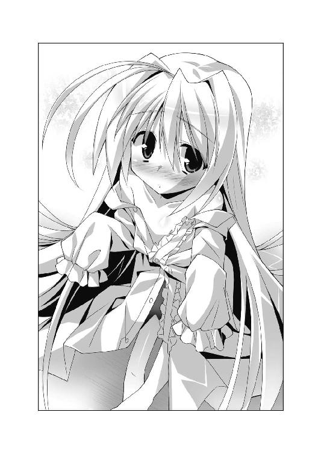
首を捻りつつ、師匠の後をついて廊下へと飛び出す。
「......んなっ!?」
通りかかった後宮付きの女官を見て、恭太郎は再び驚いてしまった。
身の回りの世話をしてくれる女官たちは、普段はメイド服に似た揃いの制服を着てる。
だが、今はワンピースを着ておらず、エプロン＆下着だけを身に着けていたのだ。
いわゆる、下着エプロン状態である。エプロンの脇からブラやぱんつがバッチリ見えてしまっていて......って、なんで、そんなセクシーな格好で歩いてるんだ!?
しかも、恭太郎が驚きの声を上げる前に、女官の方が叫んだ。恥ずかしそうに手のひらで顔を覆ってしゃがみ込む。
「きゃっ！ 恭太郎さま、おズボンをはいてらっしゃいますっ！」
いや、そりゃはくよ！ 俺が上半身ハダカなことに驚くべきだろ！ むしろ、きみが服を着てくれよ！
言いたいことは山ほどあった。だが、前を走るピコル師匠が「急ぐのじゃ、恭太郎！」と怒鳴ってくる。
仕方なく「すまん！」とだけ謝って、スルー。師匠の後を追った。
ピコルが駆け込んだのは、アイテム保管庫であった。えっちな道具などが、棚に整然と並べられている。
師匠は部屋の奥から、一抱えもある箱を取り出してきた。宝箱のような、しっかりとした作りの木の箱だ。側面には達筆な筆文字で《浪漫！》と大書されている。
後宮のヌシは箱のフタを開いて中を覗き込み──深々と嘆息した。
「やはり、そういうことじゃったか......！」
「なにが起こってるんですか？ その箱はいったい......？」
「この箱は吾が《ロマン箱》と呼んでいるものじゃ。《漢のロマン系》に分類されるアイテムがしまわれておる。ココに入れておいたアイテムが、一つなくなっておるのじゃ」
「すみません。謎ワードが多すぎて話についていけてません......」
恭太郎の困惑を感じ取ったのか、ピコル師匠は箱の中身を見せつつ説明してくれた。
中には、歯車が複雑に組み合わさった懐中時計や、不気味な色に光る液体が入った小瓶、レンズに渦巻き状の模様が描かれたメガネなどがしまわれている。
「この時計は《時間を止める魔法の懐中時計》。こっちの薬品は《透明人間になれるふしぎなクスリ》。このメガネは《女の子の服が透けて見えちゃうマジカルメガネ》なのじゃ」
「漢のロマン系ってのは、ひょっとして......」
「左様。健全な男の子だったら誰しも一度でいいから使ってみたい、漢のロマンに溢れた魅惑の一品という意味なのじゃ！」
「やっぱり、そういう意味ですか。男なら、誰しもってのは語弊がありますよ。少なくとも俺は使いたいとは思いません」
「恭太郎が特別なのじゃ！ こんなアイテムがあれば、誰だって女の子にイタズラしたくなるに決まっておるのじゃ！ このヘタレめ！」
「俺はそんな不埒なマネはしません！ って、言い争ってる場合じゃない！ この箱の中にしまっておいたアイテムがなくなってるんですよね？ なにがないんです？」
ピコル師匠は、呪いの言葉を口にするかのような深刻な口調で告げた。
「《はだかんぼ帝国の紋章》というアイテムじゃ......！」
「恐ろしく不穏な名前ですね......」
これほどまでに悪い予感しかしないネーミングというのも珍しい。
「どんな効果があるんですか？」
「うむ。ひとたび使用すると、辺り一帯の婦女子の衣服に関する価値観が逆転してしまうのじゃ!!」
衣服に関する価値観が逆転する......？
ピコルや女官のリアクションを思い出す。
露出度の高い格好の二人が、服を着ている恭太郎を見て驚いていた。
「まさか、『服を着ていること』と『服を脱いでいること』が逆になるんですかっ!?」
「その通り！ 《はだかんぼ帝国の紋章》を使うと、ハダカでいることが普通になる！ 服を着ていると、まるで全裸みたいに恥ずかしく感じちゃうのじゃ！ まさに《はだかんぼ帝国》を作り出すためのアイテムなのじゃよ！」
「ちょ、ちょっと待ってください！」
混乱した頭を、必死で整理する。
「ピコル師匠は今、俺が貸したシャツを羽織ってますよね？ それはつまり......」
「吾は服を半分だけ着ているような......えーっと、恭太郎の立場から言えば、半脱ぎ状態でいるような気分なのじゃ」
「俺の格好は、どんな風に見えてるんです？」
恭太郎は自分のカラダを見下ろした。上半身ハダカでズボンだけをはいている。
「見え方は変わらぬのじゃ。吾の目にも、恭太郎はズボンをはいているように見える。じゃが、気分的にはおぬしが下半身丸出しのように感じられるのじゃ」
女官のコが、恭太郎を見て『ズボンをはいてます！』と恥ずかしそうに叫んでいた。
あれは、マジックアイテムの効果によって『服を脱いでいるのが普通＝露出度が高いのが普通』という価値観に変わっていたから発せられた言葉なのだ。
恭太郎はバリバリと自分の髪を搔いて、
「あーもうっ！ なんで、こんな七面倒臭いアイテムを用意してるんですかっ！」
「《はだかんぼ帝国の紋章》を使えば、女の子のハダカが見放題になる。しかも、露出しながら歩いても、誰にも咎められないのじゃ」
ハダカで歩き回りたいヘンタイ男にとっては、まさに天国だろう。
「おぬしのようなオクテの王仕さまに使わせて、ハダカで接することに慣れさせるために使うものじゃ......。しかし、過去に一度使って以来、吾は《はだかんぼ帝国の紋章》を使用禁止にした。これはとても危険なアイテムなのじゃ......」
確かに、危険なアイテムだ。絶対に使うべきじゃないだろう。
だが、続くピコル師匠の説明を聞いて、恭太郎は恐ろしさに震え上がってしまった。
「このアイテムの真の恐ろしさは、『婦女子には魔法を使用されたことがわからない』という点なのじゃ」
「ピコル師匠はわかったじゃないですか」
「吾は特別じゃ。《はだかんぼ帝国の紋章》の存在を知っておる。それに、過去に使ったこともあるからな。じゃが、普通の女子は、自分がハダカだと気付くことができぬ。以前、このアイテムを使ったときに悲劇が起こったのじゃ......」
ピコル師匠は微かに肩を震わせた。
「かれこれ、三五〇年ほど前のことじゃ......。とある王仕さまが、興味本位に《はだかんぼ帝国の紋章》を使った。折り悪く、魔法が使われた日は王女さまが民衆の前で演説をする予定となっておったのじゃ......」
「まさか......!!」
「うむ。王女さまは下着姿のままで演説を行ってしまった。王女のハダカが衆目の前に晒されてしまったのじゃよ！ 後に事実を知った王女さまは......」
「自ら、命を絶った......とか？」
「露出プレイが大好きになってしまったのじゃ～～～っ!!」
「な、なんて恐ろしいんだ......!!」
「後に《ハダカの王女さま》と呼ばれることとなる事件なのじゃ」
「童話のタイトルにありそうな感じですが、なんの教訓も得られませんね......」
「いや、教訓はあったのじゃ。《はだかんぼ帝国の紋章》を使うと、お姫さまが望まないカタチで裸体を晒すことになってしまう。それゆえ、吾は使用禁止にしたのじゃよ」
「じゃあ、どうして今回は使われちゃったんですか!?」
ピコル師匠が使ったんじゃないのなら、誰が使ったって言うんだよ？
「吾にもわからぬ。何者かが盗み出して使用したとしか思えぬ状況じゃ......。じゃが、犯人捜しは後じゃ！ まずは、できるだけ早く《はだかんぼ帝国の紋章》の効果を止めねばならぬのじゃ！ なぜなら、今日は──」
「あ～～～～～～～～～～～っっっ!!」
思わず、恭太郎は大声を出してしまった。
「特別番組が放映される日じゃないですかっ!!」
ユフィナの話では生放送もあるらしい。
このままでは王女さまたちのハダカがトレクワーズ全土に放映されてしまう！
「放送を延期してもらいましょうよ！」
「それはできぬ！ 無闇に延期などすれば、国民に多大なる不安を与えるじゃろう。しかも、敵国や同盟諸国でも、念波を傍受すれば此度の放送を観ることができるのじゃ......」
ピコル師匠は苦虫を嚙み潰したような表情だった。
「王城内が混乱しているとわかれば、それに乗じて手を出してくる国もあるやもしれぬ。国際情勢が不安定にもなりかねぬのじゃよ」
「だからって、ハダカが放送されちゃったらマズいでしょう!?」
「生放送の開始時刻までに魔法を解除する......。それしかないのじゃっ！」
「どうすれば解除できるんですか!?」
「《はだかんぼ帝国の紋章》は、紋章のカタチをした直径五センチほどの丸いシールのようなアイテムじゃ。魔力の強い者のカラダに貼り付けることで効果を発揮するのじゃ！」
貼り付けた対象の魔力を燃料代わりに利用することで、絶大な威力を保つらしい。
「直径五センチ......割と大きいですね」
「だが、貼られている本人には紋章が見えぬ。誰かにはがしてもらう必要があるのじゃ。よし、恭太郎！ ズボンを脱ぐのじゃ！」
「いや、急にそんなこと言われても困りますよ。俺にもココロの準備というものが......」
「照れてる場合か！ おぬしのカラダに紋章が貼り付けられてないか確かめるのじゃ！ 吾にとっては、恭太郎がズボンをはいている方が恥ずかしいのじゃ！ ツベコベ言わずに脱ぐのじゃっ！」
師匠に従って、仕方なくズボンを脱ぎ捨てた。ぱんつ一丁となる。
「見たところ、恭太郎には貼られてないようじゃな......。念のため、吾のカラダも調べるがいいのじゃ！」
師匠は勢いよくシャツを脱いだ。一刻を争う事態だから、嫌がってもいられない。恭太郎はピコル師匠の背中を調べる。紋章のようなものは貼り付けられていないようだ。
「俺と師匠には貼られてませんね」
「城中をカバーするほど広範囲に効果を発揮させるには、《トレクワーズの五美姫》クラスの魔力を有するものに貼り付けるほかないっ！」
「じゃあ、王女の誰かに貼り付けられてる紋章型のシールをはがせば、魔法を解除できるってワケか......！」
「その通りじゃ！ では、ゆくのじゃ、恭太郎よ！」
ズビシ!!──教鞭で王城の方を指し示す師匠。
しかし、恭太郎は固まったまま動けなかった。
「いやいや、『ゆくのじゃ！』じゃないですよ。俺が行く必要はないでしょう？ ユフィナたちに説明して、お互いのカラダを確認しあってもらえばいいじゃないですか」
《はだかんぼ帝国の紋章》は、貼られている本人には見えないらしい。だが、女の子同士でカラダを確認しあえば見つけ出すことができる。恭太郎が探す必要はないはずだ。
ピコル師匠は、いつになく真剣な顔で尋ねてきた。
「どうやって魔法の説明をするつもりじゃ？」
「そりゃもちろん『魔法のせいで、きみはハダカになっちゃってるから』ってきちんと話せば......」
「残念ながら、それでは理解してもらえぬ。恭太郎の立場に置き換えるなら、その説明は『魔法のせいで、恭太郎は服を着ているよ』と告げるのと同じなのじゃ。そんなことを言われたら、おぬしはどう思う？」
「『なにを当たり前のことを言ってるんだ？』って思いますね......」
「価値観が変化するというのは、そういうことなのじゃ。なにがおかしい状況なのか、魔法が掛かっている本人にはわからぬじゃろう。理解させるのは不可能ではないじゃろうが......時間が掛かりすぎるのじゃ」
くそっ。なんて厄介なアイテムなんだ......。
「さっさと紋章を見つけ出してはがしちゃった方が早いってことですね......。でも、師匠が一人で探しに行ってください！ 俺には手伝えませんって！」
城内はハダカでいることが常識な世界になっている。露出度が高い女の子たちがウロウロしているのだ。
まさしくハダカの帝国と化したお城を駆け回り、半裸のユフィナたちのカラダを眺め回してシールを見つけ出せなんて──できるワケがない。何度切腹したって詫びきれないだろう。
「悪いが、おぬしにも手伝ってもらうぞ。あと一時間もすれば、放送がはじまってしまうのじゃ！」
「ええっ!? あと一時間しかないんですか!?」
「もはや猶予はない！ 吾は女王陛下のお身体や、魔力の高い女官を調べてくる。恭太郎！ おぬしは姫さまがたを頼むのじゃ！」
なんとか言い返したかったけれど、言葉は見つからなかった。陸に上がった魚みたいに、口をパクパクさせることしかできない。
魔法を解くには他に方法がない。ピコル師匠に従うほかないのだ。
「......わかりました！ やりますよ！ やればいいんでしょう!?」
「よく言った！ 王女さまの裸体を守るのじゃ～～～っ!!」
恭太郎はアイテム保管庫を飛び出す──その前に急いでズボンをはこうとしたのだが、ピコル師匠に止められた。
「って、ズボンははいちゃダメなのじゃ。城内はハダカが普通なのじゃぞ？」
「......ええい、ちくしょうっ！」
ズボンを床に叩きつけ、恭太郎は廊下へと駆け出した。
ぱんつ一丁のままで。
今日はみっちり修行して過ごそうと思ったのに、どうしてハダカで走り回る羽目に陥ってるんだよ!? 俺がいったいなにをした!?
誰が魔法を使ったか知らないが、絶対に許さないからな～～～～～っ!!
☆放映開始まで、あと一時間
お姫さまの元へと急ぐため、お城の廊下を全力疾走していた恭太郎は、あることに気がついた。
《はだかんぼ帝国の紋章》が持つ特性についてだ。
魔法の効果によって、城内にいる女の子たちは『ハダカでいることが普通』という価値観に変化している。
そのため、誰もが露出度の高い服装で歩いていた。
映像を撮影するためのクルーも既に王城内にいたのだが、彼女たちも全員がハダカだ。
クリスタルでできた大砲のような撮影機材を担いでいる大柄な女性も、魔法灯の照明をセッティングしている女の子も、化粧箱を抱えたメイクさんも──一様に下着姿となっている。
一般人が城内に入っているから、行動を監視しているのだろう。撮影クルーに付き従っている近衛騎士団の女騎士も、凄まじい格好だった。手足の装甲と兜だけを装着していたのだ。胴体部分の鎧をつけていないため、ビキニみたいなインナーが丸出しだ。厳つい鋼鉄製の装甲と、剝き出しの素肌がアンバランスで......妙にえろい。
魔法が効いているため、肌を晒しているのに誰も恥ずかしそうな顔をしていなかった。それが当然という表情で撮影の準備を進めてる。
通り過ぎる女の子たちの姿をチラ見して──恭太郎は呟く。
「全裸の女の子は一人もいないんだな......」
《はだかんぼ帝国の紋章》が使用されても、全ての衣服を脱いでしまうことはないようなのだ。洋服の一部分が残されてる。
日常生活においては『カラダの全てを覆っている』という状況の方が少ない。顔や手足は露出してるのが普通だ。その価値観が真逆になってるから、少しだけ衣服を身に纏っているのかもしれない。
（なんにせよ全裸じゃなくてよかった。少しでも隠してくれてた方がありがたい......）
女の子のカラダを直視してしまわないように顔を背けて王宮の廊下を走りつつ、恭太郎は暗闇の中でわずかな希望の光を見出したような気分になったのであるが──
すぐに、大きな間違いであると気付いた。
「あっ、恭太郎おにいちゃんだ！ やっほ～い♪」
後ろからメルルちゃんの元気な声がする。
「よかった！ 捜してたんだよ、メルルちゃん！」
振り返った恭太郎は、驚きのあまり息ができなくなった。たぶん、心臓も止まりかけていただろう。
「メルルちゃん、その格好は......!?」
「えへへー、かわいいでしょ 幼年学校の制服なんだよっ」
ちぃ姫さまは、恭太郎が住んでいた現代日本で言うなら『登校中の女子小学生』みたいな格好をしていた。
メルルちゃんの発案で、お姫さまたちは庶民と同じ服装で登場するシーンを撮影するって言ってたっけ。彼女は一三歳という年齢よりもずっとロリっぽく見えるから、すごく似合ってるなぁ──って、感心してる場合じゃなくて！
「メルルもちっちゃい頃は、こんな格好で学校に通ってたんだよ～」
可愛らしくウィンクしたメルルに、恭太郎はココロの中で全力でツッコミを入れる。
（そんな服装で登校したら一大事だよ!!）
メルルちゃんが身に着けていたものは──赤いランドセル。黄色い通学帽。赤いネクタイ。三つ折りの白い靴下。そして、カピバラがプリントされたぱんつ。以上だ。
ぺったんこな胸元も、可愛らしいおへそも丸見え。ほんのり膨らんだおっぱいの先端は、辛うじてランドセルの肩紐で隠れている状態だ。
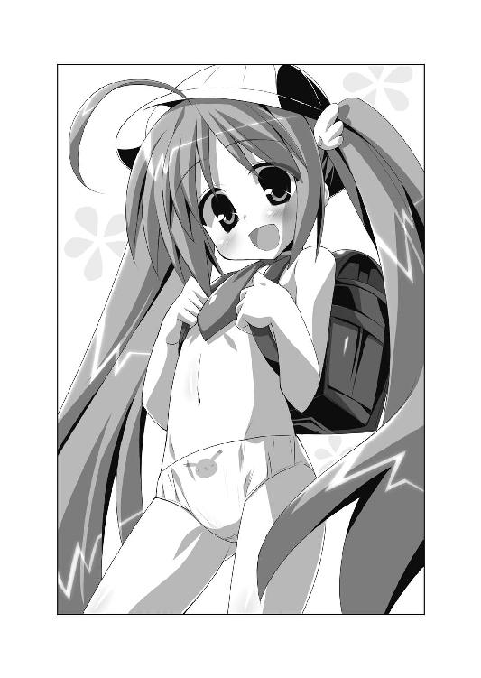
（ふぬおおおおおおおおおおおっ!!）
恭太郎は壁にヘッドバットを敢行したい気持ちに駆られた。
衣装の一部が残されてるのも考えものだよ！ あまりにも倒錯的すぎる！ 全裸よりえっちぃだろ!!
しかも、こんなフェチっぽさ全開のメルルちゃんのカラダを調べ回さなきゃいけないんだ。無茶言うな！ 俺を殺す気かぁ～～っ！
（でも、やらざるを得ないんだよな......）
《はだかんぼ帝国の紋章》を見つけ出さなきゃ、メルルちゃんはこの格好のままでカメラの前に立ってしまうんだ。
平静を装って、ちぃ姫さまに提案した。
「メルルちゃんたちが撮影前で緊張してるだろうから、師匠に『マッサージでもして来い』って言われたんだ。もしよかったら肩とかもんであげようか？ あまり時間はないみたいだから、軽くしかできないけど......」
『カラダを調べさせてくれ』なんていきなりお願いしたら、あまりに怪しい。ユフィナだったら、それだけでぶっ飛ばされかねない。
だから、マッサージにかこつけて、紋章を探すことにしたのだ。
ピコル師匠が口にしていた『マッサージだよ もみもみdeメロメロ大作戦』がアイデアの元である。
メルルちゃんはぴょんと飛び上がって喜んだ。ツインテールがふわりとなびく。
「えっ、ホントにっ？ わーい、うれしい！ もんでもんでー！」
「じゃあ、メルルちゃんの部屋に行こうか」
ぱんつ一丁の男が、小学生のコスプレをした半裸の少女（一三歳）を部屋に連れ込む──もはや、裁判をすっ飛ばして死刑に処されてもおかしくないシチュエーションだけれど、緊急事態なので平にご容赦願いたい！
第五王女の部屋は、インテリアがパステルカラーでまとめられていて、すごく女の子っぽい。壁に《禁呪詠唱☆ガイルーン》というアニメのポスターが飾られていたり、フィギュアが並んでいたりするあたり、アニメオタクのメルルちゃんらしいなと思う。
部屋の片隅ではクリスタルの塊みたいな受像器が、つけっぱなしになっていた。
トレクワーズ王家を紹介する特別番組を放映してる。アナウンサーが、王家の歴史を解説していた。
画面の隅に『まもなく、トレクワーズ王城から生放送！』とテロップが表示されている。
「もうすぐ、あそこにメルルが映っちゃうと思うとドキドキしちゃうよっ。上手にご挨拶できるかな～♪ 恭太郎おにいちゃん、応援しててね！」
「もちろん、全力で応援させてもらうよ」
恭太郎はそっとメルルのロリっぽいボディを一瞬だけ眺めた。
つるぺたーんとした胸元にも、可愛らしいおへそが丸見えのオナカにも、紋章のようなものはくっついてない。《はだかんぼ帝国の紋章》は直径五センチぐらいの大きさらしい。そんなものが貼られているようすはなかった。
背中側もチェックしなくちゃいけないよな。
「......それじゃ、ランドセルを降ろして、ベッドにうつぶせになってもらえるかな」
「はいはーい♪」
メルルちゃんは躊躇いなくランドセルを降ろした。肩紐で隠されていたちっさい胸が露わになってしまう。
でも、気にするようすもなくニコニコしていた。ハダカになっていると気付いてない証拠だよな......。
顔を背けている恭太郎には気付かず、メルルちゃんはフリルで飾られたベッドにうつぶせになった。
両手を枕にして、可愛らしく足をパタパタさせる。ぱんつに包まれたおしりも左右に揺れた。
「恭太郎おにいちゃんに、ベッドの上でもまれちゃうなんて......なんだかえっちぃね♪」
「ヘンな言い方はやめてくれってば」
ただでさえ、こっちは動揺してるんだからっ！
恭太郎はベッドに膝立ちになった。二人分の体重が掛かり、マットレスが微かに軋む。
メルルの肩や背中のツボを指圧しながら、紋章型のシールがないかチェック。
細っこい背中には、シールどころかシミ一つない。お肌もすべすべだ。
「やーん、すっごく気持ちいいよぉ......あんっ」
「へ、ヘンな声出さないでくれよっ」
「でもぉ、おにいちゃん上手なんだもん 声出ちゃうよぉ......はぅんっ」
身悶えしながらも、指圧する手を下半身へと移していく。
ほっそりした腰の下辺りでトビカピバラと目があった。
ぱんつのおしりにプリントされているカピバラだ。
ぱんつの下には、直径五センチのシールが隠れるだけのスペースがある。
ゴクリ......──思い切り、生唾を飲み込んだ。
（お、俺は......ぱんつの下もチェックしなきゃいけないのか......!?）
恭太郎を追い込むみたいなタイミングで、受像器から女性アナウンサーの声が流れてくる。
『あと五〇分ほどで、トレクワーズ王城より生中継が行われます！ 受像器のカメラがお城に入るのは、三年ぶりのことです！』
残り時間は少ない。躊躇っている時間はないんだ!!
意を決して、プリントぱんつに人差し指を掛ける。
「す、少しだけ、ぱんつをおろすよ？」
ちぃ姫さまは「あははっ」と明るい声で笑った。
「やっぱり、恭太郎おにいちゃんはカタブツさんなんだね～♪ 男の人は服を着せたがるものなのに、脱がそうとするなんてさっ」
魔法の効果で価値観が逆転しているから、俺をカタブツなんて言ってるのか。ヘンタイ扱いされなくて良かったと思おう。
ゆっくりと。ゆっくりと──
メルルちゃんのぱんつを脱がしていく。
やがて──ぷりりりんっ
かわいいおしりが、恭太郎の眼前に露わになった。
「──んぐっ!?」
鼻の奥がツンとする。興奮のあまり、鼻血が出そうになったのだ。
恭太郎の脳内に巣くうケダモノが『いい機会だから、存分におしりを視姦しちゃえよ』などと誘惑の言葉を掛けてくる。
だが、鋼鉄の意志力で平常心を保ち、患部を調べる外科医のような冷徹な眼差しでおしりを調べる。
紋章は......ないな。メルルちゃんのカラダには《はだかんぼ帝国の紋章》は貼り付けられてない。くそっ、ハズレか。
簡単に脚の方ももみほぐし、メルルに声を掛けた。
「マッサージは終わりだよ。どう？ 少しはほぐれたかな？」
「うんっ。すっごく気持ちよかったよ！ きんちょーしてた気分もどっか行っちゃった！ ありがとね、恭太郎おにいちゃんっ」
「撮影頑張ってね。俺は他のお姫さまにも声を掛けてくるよ」
部屋から出ようとする恭太郎に、メルルちゃんが声を掛けてきた。
「ねぇねぇ、恭太郎おにいちゃんっ♪」
ちぃ姫さまは、ベッドの上で頰杖をついた。上半身が持ち上がり、胸がちょっぴり見えそうになってしまう。
小悪魔みたいなイタズラっぽい表情で、とびきりのウィンクをした。
「次にマッサージするときは、もっとえっちなとこももみもみしてね」
えっちなとこってどこですかあああ！ というか、半裸の小学生コスプレで色っぽい発言は勘弁してくれええええっ!!
部屋から飛び出し、廊下に突っ伏す恭太郎。
五姉妹うちの一人を調べただけなのに、グッタリと疲れ切っていた。二、三キロ瘦せたと思う。たぶん。
《はだかんぼ帝国の紋章》を見つける前に、死んじゃうんじゃないかな、俺......。
☆放映開始まで、あと四〇分
「前にも、こんなことがあったな......」
王宮の廊下をぱんつ一枚でダッシュしながら、恭太郎は独りごちた。
人質に取られたアレスタを救うため、お姫さまたちの寝所を巡り、眠っている姫さまたちの下着をまさぐって鍵を集めて回ったことがあるのだ。
あのときは、なんてひどい苦行だろうかと思ったものだが......断言しよう。
「間違いなく、今回の方が辛いよ......」
お姫さまのカラダに貼り付けられたシールを探すだけ──言葉にすれば簡単だが、とんでもない難事だったのだ。
ベッドルームラリーとの大きな違いの一つめは、『お姫さまが起きていること』があげられるだろう。
自慢じゃないが、恭太郎はマッサージがうまい。姉上に鍛えられたおかげで、プロ並のテクニックを獲得していた。短い時間でも、気持ちよくコリをほぐしてあげる自信がある。
だが、実姉をもむのならともかく、芸能界にいたらトップアイドルにもなれるような美少女をもみしだくのは、想像以上にドキドキな行為だった。
王女さまたちはみんな起きているから、恭太郎の手技によって「気持ちいい」なんてリアクションを取ることになるのだ。
甘い吐息を漏らすお姫さまたちを前に、冷静に紋章を探し続けるというのは、拷問にも等しい行為だった。
そして。
最も大きな違いは、『王女さまたちが、さまざまなコスプレ衣装を身に着けている』という点だろう。
寝所を巡らされたときは、お姫さまたちは全員が寝間着姿だった。パジャマやネグリジェだったら恭太郎にも若干の想像がつく。部屋に突入する前に、ココロの準備をすることができた。
だが、今回は、メルルちゃんの発案によって、全員が一般市民が着るような服を纏っているのだ。誰がどんな衣装を身に着けているか予測ができない。
しかも、《はだかんぼ帝国の紋章》によって半脱ぎ状態になっている。
お姫さまの元へ行くたびに、恭太郎は服装のえっちさに驚愕する羽目に陥ったのだ。
例えば、メルルの次はエリスのカラダを調べたのだが、彼女の服装も凄まじいものだった──。
「このエリス・レムリス・トレクワーズには、もっと華やかな衣装こそ似合うと思いますの。こんなのは地味すぎますわっ！ 受像器を観た民衆もガッカリしてしまうに違いありませんのっ！」
天蓋付きのベッドやレースのカーテンなど、お姫さまっぽさ満点のエリスの部屋。
第三王女のエリスは、高飛車な態度で言いはなった。
彼女が身に着けていたのは──首にかけられた聴診器。頭には円形の反射板。
「ひょっとしてその格好は......女医さんか？」
「そうですわ。患部を調べて、魔力を込めた薬を処方しますのよ」
すらっとした体型のエリスには、女医さんの格好はよく似合うだろうと思う。
だけど、首から下が問題だよ!!
女医さんのコスプレをするときのマストアイテムである、白衣やタイトスカートを身に着けていないんだ。
上半身は、ほぼハダカ。白いレース地のブラが丸見えだ。
下には白いパンティストッキングをはいている。エリスは素晴らしく脚が綺麗だから、パンストをはいた脚線美は生ツバものだった。もしも恭太郎が足フェチだったら、その場で昇天してただろう。
そんなエリスの美脚をパンスト越しに観察して紋章を探すのは、清廉の士でいたい恭太郎にとって耐え難い誘惑だ。ほんの少しでも気を抜けば、頰ずりしてしまいそうだった。
しかもしかも！
脚のマッサージが気に入ったのか、エリスはなかなか終わらせてくれなかった。
白いストッキングに包まれたつま先で、恭太郎の胸元をなぞったのだ。
「まだ終わっちゃダメですわ......。気持ちいいから、もっと続けなさい。これは命令ですの 嫌だと言うなら、痛いお注射しちゃいますわよ」なぁんて、おねだりされてしまった。
理性を失って、エリスに飛びかからなかった自分を褒めてやりたいくらいだ。
エリスの次は、アルトのカラダを調べた。
アルトは四番目の王女さま。メガネを掛けた、黒髪ショートの気弱な姫君である。
彼女は王宮の地下にある工房に籠もっていた。雑多な機械や工具類、技術書の積まれた部屋の片隅で、プルプル震えてる。
「撮影だなんて、緊張して死んじゃいそうですぅ......」
そんな王女さまの姿を見て、恭太郎も死んじゃうかと思った。
アルトは、いわゆる修道女の格好をしていた。女神聖教会という、トレクワーズの守護母神である女神ティアドラを奉っている教会のシスターだ。
修道女の定番のアイテムと言えば、ベールだろう。黒と白の布地が、頭から胸の辺りにかけてを覆っている。
首から下げているのはクロスではなく、天使を模したペンダントだ。
大人しい性格のアルトちゃんには、貞淑さを絵に描いたような修道女の服装がとてもよく似合っていた──と、言いたいところなのだが！ が!!
（なんてえっちぃ格好してんだよ、アルトちゃん!!）
修道服のワンピースを纏っていなかった。
身に着けているのは、ベール、ペンダント、白いニーソックス、ローレグ気味の飾り気の少ないぱんつ。以上の四種類だけ。
ムチムチした太ももに食い込み気味な白ニーソも、オナカのかなり際どいところまで見えてしまってるローレグぱんつも、かなり色っぽい。十分な破壊力で、恭太郎の理性にダメージを与えてきた。
だが、もっとも威力があったのは、胸だ。
アルトはブラをつけていなかったのだ！
ベールをつけているから、辛うじておっぱいの大事な部分は隠れている。だが、ベールの半円形の布地の下から、おっぱいの丸みがほとんど見えていた。
アルトは控えめな性格に似合わず、胸がデカい。その大きなおっぱいが修道女のベールからチラチラと見え隠れしているようすは、とんでもなくえろかった。
しかも、しかも!!
「私を気遣って来てくださるなんて感激です！ ありがとうございますぅ！」
恥ずかしがり屋のアルトちゃんにとって、撮影なんて不安で仕方がなかったのだろう。迷子の子いぬが飼い主を見つけたようなうれしそうな顔で駆け寄ってきた。
ベールに辛うじて隠れている胸が、二つの水風船みたいに揺れまくる。
そして──もにゅにゅんっ
恭太郎の腕に抱きついてきたのだ。
二の腕にナマ乳が当たりまくり！ 柔らかすぎるよ、アルトちゃん！
「緊張しすぎて、ガチガチに固くなっちゃってますぅ......」
第四王女は、困ったように眉をハの字にする。
『そんなにくっつかれたら、俺までガチガチに固くなっちゃうよ!!』なぁんて叫びたいのを懸命に堪える恭太郎なのだった。
もちろん、紋章を探すためにベールをめくり上げる作業が、恭太郎の理性を嫌というほど苛んだのは言うまでもないだろう。
☆放映開始まで、あと二〇分
メルル、エリス、アルトの三人の姫君のカラダを調べたけれど紋章のようなものは貼り付けられていなかった。
「つ、次はレイシアを調べよう......」
三日三晩大海原を漂流し続け、ようやく発見された遭難者かと見まごうほどに、恭太郎は憔悴しきっていた。特に精神的に限界が近づいている。
なんせ、お城中のどこを見渡しても、半裸の女の子が歩いているのだ。休むヒマもなく鼓動は高鳴りっぱなし。恭太郎の心臓はオーバーワークを続けていた。
できることなら休憩させて欲しい。枯山水の庭園を眺めつつ、ゆったりと座禅を組んで高ぶった精神を休めたい。
でも、休んでなんかいられないんだよな。
城内は一層慌ただしくなっている。放映時間は迫っているんだ。
放送開始直後から《トレクワーズの五美姫》の出番があるのかわからない。放送されずに済む可能性もあるだろう。
だが、女官のコの下着姿だろうが放送させるワケにはいかない。本人が望んでいないのに婦女子の裸体が衆目に晒されてしまうなんて、あってはならないことなのだ。絶対に魔法を解除しなければ！
気合いを入れて、恭太郎はレイシアの部屋のドアをノックする。
「俺だ。恭太郎だよ」
「まあ、恭太郎さま！ どうぞ、お入りくださいっ」
ドアを開けて、部屋の主の姿を見た瞬間──恭太郎は自分の決意がシオシオ～っと音を立てて萎えていくのを感じた。
他の姫さまと同様に、レイシアもまた、とんでもない格好をしていたのである。
一言で表現するなら『高校の制服』である。恐らくは、ブレザータイプだろう。
白いシャツに紺色のブレザー。チェック柄のミニスカート。同柄のリボン。学生カバン──たぶん、そんな格好だ。
『恐らく』とか『たぶん』なんて類推の言葉を付け加えた理由は、ただ一つ。
着ていないのだ。
レイシアは、ほぼ下着姿と言って差し支えない格好だった。
ただ立っているだけなのに、たゆんたゆんと揺れている爆乳を包むのは水色のブラ。むっちりした腰の辺りにわずかに食い込んでいるヒモぱん。水色と白が目に鮮やかなシマシマ模様のニーソックス。
高校の制服っぽいアイテムは首に巻かれたチェック柄のリボンと、手にした学生カバンだけ。
単なる下着姿と大差ないような気もするが......今にもはち切れそうな巨大なおっぱいの上に、制服のリボンだけがつけられているというのは凄まじく倒錯的だった。一五〇％増しぐらいえっちぃと思う。たぶん。
学生カバンを両手で下げたレイシアが、うれしそうな笑みを浮かべた。
「今日はお会いできないかもと思ってました」
「わ、悪いな。忙しいときに来ちゃって」
「そんなことありませんっ。すごくうれしいです。恭太郎さまに、この衣装を直接見ていただきたいなって思っていたところなんですっ」
レイシアは自分のカラダを見下ろした。
「これ《高等学校》の制服なんです。王女は《初等学校》までしか通いませんから、着たのは初めてなんですよ」
トレクワーズ王国では、現代日本で言うところの小学校にあたる《幼年学校》に四年間、中学校に相当する《初等学校》に四年間、高校にあたる《高等学校》に四年間通うらしい。って、教育制度ついては、今はどうでもいいよな。
「どうですか。似合ってますか？」
制服を見せようとするみたいに、レイシアはその場でクルンと回った。
王女さまのおしりを見て、鼻血を噴きそうになる。
（なぜ、よりによってＴバックなんだよ......！）
爆乳と同じくらい柔らかそうなおしりが、ぷるるんっと揺れていた。
恥ずかしい格好を晒しているのに、レイシアは気付いていない。学校の制服を着ていると思いこんでいるんだ。
そんなふしだらな魔法は、すぐにでも解いてやらなきゃいけないよな。動揺してる場合じゃないぞ、神来恭太郎！
懸命に自分を鼓舞して、笑顔を作った。
「すごく似合ってるよ。レイシアはなにを着ても可愛いと思う」
「うふふ、ありがとうございます。恭太郎さまにそう言ってもらえるのが、一番うれしいですっ」
カバンを抱きしめ、第二王女ははにかむように微笑んだ。
「ところで、どうして訪ねてらっしゃったんでしょうか？ もうすぐ放送が始まってしまいますし、ご用事なら今日の夜にお伺いしますが......」
「いや、大した用じゃないんだ。レイシアが緊張してるかなと思ってさ」
メルルちゃんに言ったのと同じように、ピコル師匠の提案でマッサージをしに来たと告げた。
「時間もないから、軽くだけどさ。緊張をほぐせたらいいなと思ったんだ」
「まあっ、本当ですかっ？ 恭太郎さまは肩をもむのがとてもお上手ですもの。とてもありがたいですっ」
レイシアもベッドにうつぶせに寝てもらった。
肩や背中をもみほぐしながら、ブラの肩紐をそっとズラし、その下に紋章が貼られていないか探していく。
レイシアは、とにかく胸が大きい。
下着姿なんて直視したら、男なら誰もが魅了されて骨抜きになってしまうだろう。カタブツの恭太郎とて、ケダモノとなって飛びかかりかねない。
うつぶせになってもらえば胸が隠れて、色っぽさも和らぐのではないかと期待したのだが......甘い考えだった。
レイシアはバックスタイルも抜群にセクシーだったのだ。
胸が大きいのに背中はほっそりとしていて、ウエストは見事にくびれている。
少し大きめのおしりは、スベスベでぷりんぷりん。
「んっ そこっ 気持ちいいです......」
背中や腰を押す度に、恭太郎を誘うようにおしりが揺れた。
ぐおおおっ!! 辛抱たまらあああああああああああんっ!!
今すぐ部屋を飛び出して頭を丸め、托鉢の僧となって家々を回りたい気分に陥る。そうでもしなきゃ、高まり続ける興奮を抑えられそうになかった。
あまりにもドキドキしすぎた恭太郎は、ついつい口を滑らせてしまった。
「せめて、スカートだけでも、はいててくれたらいいのに......」
「えっ......？」
驚いたように、レイシアはカラダを起こした。ほっぺが微かに朱に染まってる。
「す、スカートをはいていた方がいいんですか......？」
独り言に返事が戻ってくると思わなかったので、なにも考えずに答えてしまう。
「もちろん、その方が俺としてはうれしいよ」
「はう......」
困ったように眉をハの字にしていたレイシアは、やがて小さく頷いた。
「......わ、わかりました。スカートをはいてきますねっ」
隣室へと小走りに駆けていった王女さまは、ほどなくチェック柄のフレアミニスカートだけをはいてもどってきた。
シャツもブレザーも着ていないから、上半身はブラジャーとリボン。下半身は制服のスカートにボーダーニーソという服装である。絶対領域が目に眩しい。
相変わらず肌色成分が多いが......Ｔバックのおしりを見ずに済むので、少しは気が楽になるかと思った。
でも、レイシアは恥ずかしそうに太ももをモジモジと摺り合わせている。顔はさらに赤くなっていた。
「は、恥ずかしいです......」
どうして恥ずかしそうにしてるんだ......？
あ、そうか！ しまった!!
今は『服を脱ぐことが普通』になっている。だから、『スカートをはいて欲しい』と頼むことは、『スカートを脱いで欲しい』とお願いするのとイコールなんだ。
つまり、レイシアにとって今の格好は『制服のスカートだけを脱がされてる』のと同じ気分ってことなのか！ あーもう！ ややこしいにもほどがあるぞ！
「スカートだけはくなんて、えっちすぎます......。恭太郎さまは、こーゆー格好がお好みなんですか？」
勘違いしないでくれぇ！ 俺はスカートだけを脱がして喜ぶようなヘンタイじゃないんだよ！
言い訳をしたいが、そのためには価値観が逆転していることを理解してもらう必要がある。時間的にそんなのは不可能だ。
とりあえず、謝っておくことにする。
「す、すまん。嫌だったか？」
レイシアは大げさに首を横に振った。
「ぜんぜん嫌じゃありませんっ。恭太郎さまがお望みなら、レイシアはどんなことでも頑張れますっ」
耳の先まで真っ赤にして、両手の指先をつつき合わせる。羞恥心のためか、ちょっぴり瞳が潤んでいた。
「でも、恥ずかしいので、あまり見つめないでくださいまし......はうう」
照れまくっているレイシアの姿は、猛烈にキュートだった。
ぬおおお！ 露出度が下がったはずなのに、余計にドキドキしちゃうよ！
先ほど背中側には紋章が貼られていないことをチェックした。不幸中の幸いか、Ｔバックだったおかげでヒモぱんの下にも貼られてないとわかってる。
直径五センチの紋章が隠れている可能性が残ってるのは──まずは胸元だな。
レイシアは胸が大きいだけあって、ブラジャーもデカい。紋章が隠れるスペースは十分にあるだろう。
「マッサージを続けよう。今度は椅子に座ってもらえるか？」
「あの......そろそろ放送時間が迫っていますが......」
「すぐに終わるよ。俺の言うことを聞くんだ」
少し強めの口調で言ったら、レイシアはぴくんとカラダを震わせた。
「は、はいっ......」
言われた通り、レイシアはライティングデスクの前にある椅子に座ってくれた。肘掛けのついた、樫材の大きな椅子だ。
椅子に座ったレイシアと向かい合うようにして立ち、前から鎖骨の下辺りを親指でもむ。
「......んっ そこも気持ちいいです」
「だろ？ この辺にもツボがあるんだ」
ゆっくりと手を下へと降ろしていく。ブラに包まれた大きな胸に親指が触れた。
ぷにょんっ ぷにょんっ──凄まじく柔らかな感触が指に伝わる。
「あ、あのっ、恭太郎さまっ、お手が胸に触れてます......」
「黙って。俺に身を委ねるんだ」
「わ、わかりました......」
神さま仏さまご先祖さま姉上さま！ 今だけは見逃してください！
思いつく限りの神仏に許しを請いつつ、指先でそっとブラジャーのカップをズラす。もちろん、胸の先端の大事な部分が見えたりしないよう、細心の注意を払いながら、だ。
大きすぎる爆乳にも、シールのようなものは貼られてない。
残るは──脚だ。ニーソの下に紋章が貼られている可能性がある。
少し強めの口調でレイシアに頼んだ。
「ニーソックスを脱がすからね」
「スカートをはかせて、ニーソックスは脱がすのですか？」
レイシアは、唇をあゎあゎさせる。
「す、すごくえっちな服装になっちゃいます......」
彼女の感覚では、俺は『スカートを脱がして、ニーソをはかせようとしてる』ってことになるのか？ そんな服装にさせるなんて、明らかにヘンタイの所行だ。本当にすまない。全てが終わったら、俺をぶん殴ってくれて構わないからな。
ココロの中で土下座を敢行しながら、レイシアの両脚を肘掛けに乗っけた。
素早くニーソを脱がせるために両脚を浮かせたのだ。Ｍ字開脚しているような、大胆なポーズになってしまうが......緊急事態なのでご容赦願いたい。
ミニスカートをはいているから、ぱんつはギリギリ隠れていた。少なくとも、恭太郎の位置からは見えない。
だが、レイシアの認識では、恥ずかしくて堪らないポーズのようだ。
「スカートをはいている姿を見られちゃうなんて......は、恥ずかしすぎますぅ......」
『はいてるのが普通なんだよ』と言ってあげたかったが、彼女には理解できないだろう。
「そのまま動くんじゃないぞ。いいね？」
恭太郎が命じると、レイシアはコクンと頷いた。
瞳が蕩けたように潤んでる。吐息も熱っぽくなってるみたいだ。
「......んっ」
恭太郎が太ももに触れると、レイシアは何かを堪えるみたいに、自分の指を嚙んだ。
お姫さまの仕草の色っぽさにムラムラしつつ、ニーソックスを脱がしていく。
綺麗な脚が露わになった。ニーソックスの下にも紋章らしきものはない。
レイシアにも貼られてなかったのか......。
脚にあるツボを親指で軽く押して、恭太郎は声を掛けた。
「もういいよ。マッサージは終わりだ」
王女さまはしばらくぽーっとしていた。
「大丈夫か、レイシア？」
「わ、私は大丈夫で......はゎっ！」
肘掛けに乗っていた膝をおろし、勢いよく両脚を閉じた。スカートの上から、太ももの付け根辺りを手でおさえる。
「私ったら......」
「どうかしたのか？」
「恭太郎さまはマッサージをしてくださっただけなのに......あの...その......」
これ以上ないってくらいに頰を真っ赤に染めて、レイシアはうつむいてしまった。消え入りそうな声で呟く。
「ご命令で恥ずかしいポーズをとってるうちに、ものすごくドキドキしてしまって......。もっとえっちなことを命令をされたいなんて、はしたないことを思ってしまって......その......なんていうか......し、下着が......ゴニョゴニョゴニョ」
最後の方は小声すぎて、なんて言ってるか聞き取ることができなかった。
でも、聞き取れたとしてもリアクションに困るような発言に違いないから、聞き返さない方がいいよな、うん。
「よくわからないけど、マッサージなんてしない方がよかったかな。ごめんな」
「いいえ！ そんなことはありませんっ！」
レイシアは椅子から立ち上がった。ブンブンと音が出そうなくらいに勢いよく首を横に振る。
「また、ぜひして欲しいですっ。次は時間がたくさんあるときに、ゆっくりお願いしますっ。恭太郎さまが望むなら、その......」
両手をブラに包まれた爆乳の前で組み合わせ、上目遣いで恭太郎を見つめて、王女さまは続ける。
「あらかじめスカートをはいて、お部屋に参りますから......」
えーっと、今のレイシアにとって『スカートをはく』というのは、『スカートを脱ぐ』ってのと一緒だから──......。
恭太郎は、そこまで考えて思考を停止した。
それ以上考えたら、鼻血を噴き出して出血多量で死んでしまうと思ったのだ。
☆放映開始まで、あと一〇分
残るはただ一人、ユフィナのカラダを調べるんだ！
ノックもそこそこに第一王女の部屋に飛び込んだ恭太郎は、思わず息を飲んだ。
金縛りにあったように、その場に立ち尽くしてしまう。
「コホンコホン......えーっと......『私たちも王家の一員である以前に、トレクワーズ王国の国民なのです。共に労働に勤しみ、共に勉学に励み、労苦を分かち合って、みなさんと共に王国の発展のために歩んで参りたいと思います。もちろん、王国を守るために私たちは全力を尽くす所存で......』」
部屋の中をウロウロと歩き回りながら、原稿を読み上げていた。
時間がないにもかかわらず、ユフィナに見惚れてしまう。
第一王女は──ウェディングドレス姿だったのだ。
もちろん《はだかんぼ帝国の紋章》の効果によって、彼女の露出度も上がってる。
ユフィナが身に着けているのは──床にまで届く白いベール。レース地の白いブラ。精緻な刺繡の施された純白のぱんつ。白いガーターベルトに、同色のストッキング。
結婚式を前にした花嫁から、ドレスだけを剝ぎ取ったかのような服装だった。
それでも、ものすごく綺麗だと恭太郎は思う。ベールに包まれた少女の美貌は、言葉にできないくらいに可憐だ。ユフィナって、やっぱり白が似合うよな......。
「って、恭太郎じゃない？ やだ、ヘンなトコ見られちゃったわね」
王女さまに声を掛けられ、我に返った。
「挨拶の練習してるのか？」
「そうよ。メルルがコスプレしたいなんて言い出したでしょう？ せっかくだから、それに絡めた感じにしてみようかなと思って」
王女さまたちのコスプレは、小学生に高校生、女医と修道女だった。労働や勉強を頑張る国民の姿を重ね合わせたってことだろう。
「どうどう？ ちゃんと考えてるでしょ？ もっと王女さまとして私のこと敬ってもいいのよ。なんてね、えへへ♪」
腰に片手を当てて胸を張り、ユフィナはイタズラっぽい笑みを浮かべた。
彼女はスタイルがいい。かなりの巨乳だけど、ウエストはしまってる。そんなユフィナのランジェリー姿は、あまりに刺激的すぎた。
目のやり場に困って、恭太郎は視線を背ける。
「なによ～。見るに堪えないとでもいいたいの？」
「ち、違うよ。すごく似合ってるよ」
下着じゃなくて、普通のウェディングドレス姿を見たかった気がする。
赤くなってるであろう鼻の頭を搔きつつ、恭太郎は続けた。
「でも、さっきの演説とウェディングドレスはあんまり関係ないと思うけどな......」
「いちお、挨拶は『王国の未来を守るために、お世継ぎづくりも頑張ります』って感じで続くのよ。その決意の表れとして国民のみなさんが受け止めてくれたらな～って思ってるのよね......って、勘違いしないでよ!?」
なにもツッコミを入れていないのに、慌てたようにユフィナは否定した。
「あんたのお嫁さんになるとか、そーゆー意味じゃないんだからねっ！ 王女の結婚は、普通のとは違うし！ そもそも私は好きあった人以外とはえっちなことはしちゃダメだって思ってるし！」
「言われなくてもわかってるって。ムキになるなよ」
「わ、わかってればいいのよ......」
ユフィナは唇を尖らせてそっぽを向く。
「それで？ 私の部屋になにしに来たの？」
そうだった。悠長に話しなんかしてる場合じゃなかったんだ。
「ユフィナが緊張してるだろうからさ。師匠に『マッサージでもして来い』って言われたんだ。肩をもんであげるよ」
「私、ひどい肩コリ持ちなのよ。だから、すっごくありがたいんだけど......」
ノックの音が王女の言葉を遮った。
女官が深々と礼をしたあとで、報告してくる。
「ユフィナさま。放送の準備が整いましてございます。大広間へご足労願えますでしょうか？」
「わかりました。すぐに行きます」
恭太郎に王女さまは肩を竦めてみせた。
「そんなワケよ。あと五分くらいで放映がはじまっちゃうから、マッサージしてもらう時間はないわね。気持ちだけ受け取っておくわ。じゃ、行ってくる。応援してて」
ユフィナは部屋を出て行こうとする。
下着エプロン姿の女官が素早く駆け寄り、床に届きそうなほど長いベールを整えた。
後ろ姿も、ものすごく露出度が高い。
白いベールの下、綺麗な背中やおしりが透けて見えた。ブラのヒモも、純白のぱんつも、ガーターベルトで留められた白いストッキングも──全てが見えてしまってる。
そんな格好を民衆の前に晒させるワケにはいかない。
放映前に、彼女のカラダを調べなきゃ！
でも、どうやって止めたらいいんだよ!?
ユフィナは今にも部屋を出て行こうとする直前。
恭太郎は大きく頷いた。
「実力行使しかないか......！」
ユフィナの前にダッシュで回り込む。ドアの前で大きく腕を広げた。
「悪いが、ココを通さないぞ!!」
ユフィナは驚いたように目を丸くしている。
「なに言ってるのよ、恭太郎？ もうすぐ放送がはじまっちゃうのよ？」
「わかってるよ......」
突如、恭太郎の右手が目映く輝いた。燃えるような熱さを感じる。
「わかってるからこそ、ココを通すワケにはいかないんだよ！」
恭太郎の言葉に呼応するように、手のひらに光り輝く剣が出現した。
【光の剣】。
全てを斬り裂く光の刃。これが恭太郎の使える唯一の魔法だ。
彼の意志では使いこなすことはできない。
だが、なぜか、このときは自然と手の中に剣が生まれていた。
「きゃあっ!!」
女官が恐怖の悲鳴を上げる。
「隠れていなさいッ！」
女官に命令しつつ、ユフィナは恭太郎を睨み付けてきた。
右手を横に伸ばし、王女さまは鋭い声を発する。
「来たれ、【烈炎神剣】！」
下着姿のユフィナの腕に巨大な手甲が装着され、続けざまに炎に包まれた大剣が現れた。
光の刃と、炎の大剣──凄まじい魔力を放つ二つの剣によって、周囲は爆発的な勢いで光に包まれた。
「どういうつもりよ、恭太郎......？ あんたが私に刃を向けるなんて......」
『今、きみはハダカなんだ』
そう説明してもわかってはもらえないだろう。
「きみの姿を、放送させるワケにはいかないんだ......」
「なんで邪魔したいのかわかんないけど......受像器の番組を撮ることだって、立派な王女の務めなのよ。楽しみにしてる国民がいっぱいいる。たくさんの人たちが、準備を進めてくれたのよ。今さらやめるなんてできないわ！」
「もし、ココを通りたければ......」
恭太郎は【光の剣】を構えて、王女さまを見据えた。
「俺を倒してから行くんだなッ！」
「本気なのね......」
ユフィナも炎の大剣を上段に構える。
「だったら、魔法でぶっ飛ばさせてもらうわよ。夜まで気絶しててもらうわ......」
ウェディングベール越しに、ユフィナが鋭い視線を飛ばしてきた。
裂帛の気合いと共に、床を蹴る。
「ハ──────ッ!!」
美しくベールを翻らせて、下着姿のユフィナが突進してきた。
恭太郎は【光の剣】で【烈炎神剣】を受け止める──かに見えた。
だが、一瞬早く、恭太郎は体をかわした。ユフィナの太刀を一寸で見切ったのだ。
恭太郎の動きに応じるように、【光の剣】が縮む。
鍔ぜり合いをすると思っていたんだろう。ユフィナの剣が空を切った。
王女さまは勢い余って、わずかにたたらを踏む。
わずかな隙を、恭太郎は見逃さなかった。
「神来流剣術『二の太刀──瞬影!!」
小太刀ほどの長さとなった【光の剣】で超高速の斬撃を無数に放つ。
剣先が分身して見えるほどのスピード。
すぐさまユフィナは体勢を立て直した。素晴らしい反応速度で、恭太郎の攻撃を弾き返そうとする。
だが、全てを防ぎきることはできなかった。
一瞬の静寂の後──はらり、と。
ユフィナの下着だけが、桜吹雪のように舞い散った。
恭太郎はユフィナの下着だけを斬り裂いたのだ。
ブラもぱんつも、ガーターベルトもストッキングも──ウェディングベール以外の全てが布きれの破片となって舞い落ちる。
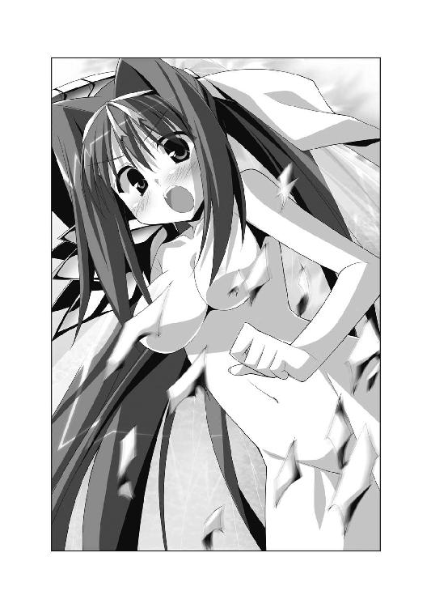
「な、なにをしたの？」
下着を脱がされても、ユフィナはよくわからないようだ。
彼女的には『厚着をさせられた』ような気分なのかもしれない。
だが、恭太郎は小さくガッツポーズをしていた。
「......やっと見つけたぞ！」
ユフィナのおしりに、ハダカの男女が絡み合っているような意匠の紋章が貼り付けられていたのだ。
戸惑ってるユフィナに素早く駆け寄って。
「どりゃあっ!!」
──ぺりっ!!
《はだかんぼ帝国の紋章》をはがした。
その刹那、周囲の空間がわずかに揺らいだ。
水面に波紋が広がるように、紋章を中心に揺らぎが広がっていく。
半瞬後、お城のあちこちから悲鳴があがりはじめた。
「魔法が解けたんだな......」
やれやれ、これで一件落着だよ。
深々とため息を吐いたのであるが──すぐ近くから、大きな悲鳴があがった。
「きゃああああああああっ!! なによこれ、私ハダカじゃないっ！」
って、そうだ！ ユフィナの下着を全部斬り飛ばしたんだった！
「ゆ、ユフィナ！ 落ち着いて聞いてくれ、これには理由があるんだ！」
暴れ馬を落ち着けるみたいに両手を前に出しつつ、恭太郎はユフィナを宥めようとした。
だが、さらに盛大な悲鳴をあげられてしまう。
「なななな、なんて格好してんのよ、恭太郎!?」
「これにも深いふか～い理由があるんだよ！ 誰も好きこのんでぱんつ一丁でいるワケじゃないんだ！」
「問答無用よ、このド変態～～～っ!!」
ユフィナは手にしていた【烈炎神剣】をもう一度振り上げた。
結局、このパターンかよ！ 明らかに俺は悪くないのに～～～っ!!
「【火竜演舞】」
凄まじい勢いで空中に魔法陣が描かれる。
爆炎が刀身から龍のように迸り、恭太郎を直撃！
「どわあああああああ～～～～っ!?」
周囲の壁ごと、恭太郎のカラダは吹き飛んだ。
キリモミ状態で放物線を描いて宙を舞い──
ステンドグラスを突き破って、どこかの部屋へと飛び込んでしまう。
「ぐべらばっ!?」
勢いよく床に叩きつけられた。大理石の床面に蜘蛛の巣状のヒビが入るほどの衝撃だ。
「痛たたたた......」
フラフラする頭を押さえつつ、恭太郎は起き上がった。
すぐさま、絶叫が恭太郎の鼓膜に突き刺さる。
「男性です！ 空から男性が降ってきましたーっ！ なにか、とんでもない事件が起こっているようです！ こちら、トレクワーズ王城から生中継でお送りしております！」
下着姿の女性が、布を羽織ってカラダを隠しつつ実況していた。
大柄な女性カメラマンがクリスタルの塊のようなカメラを恭太郎に向けるのと。
──サラサラサラ。
ユフィナの魔法を受けたために、恭太郎のトランクスが灰となって燃え落ちたのが、ほぼ同時だった。
☆放映終了から、五時間経過
「るーるるるるー......。るるるーるるるー......」
夜。王宮。塔の屋上。
輝く月の下で恭太郎は膝を抱え、目の幅涙を流していた。
後ろから声を掛けられる。
「あの、恭太郎......。ごめんね......」
ユフィナの声だ。申し訳なさそうな声音で続ける。
「ピコルから詳しい説明を受けたわ。まさか、魔法でハダカになってるなんて思わなくって......本当に悪かったわ」
薄水色のドレスに身を包んでいるレイシアが大きな胸の前で手を組み合わせた。
「私たちを守るために、恭太郎さまは奔走してくださったんですよね......。ありがとうございます」
双子の姫が豪奢なツインテールを手で払いながら、フンと鼻を鳴らした。
「危うく、とんでもない格好を映されてしまうところでしたわ。今回ばかりは礼を言って差し上げますの」
「あんなえっちな格好が放映されてたら、私は死んじゃってたと思います！ 想像するだけでも恥ずかしいですぅ！」
照れ屋のアルトはメガネの下の瞳をグルグルさせていた。
ちぃ姫さまは、いつも通りのオマセな発言をする。
「元気出しなよ、恭太郎おにいちゃん！ おにいちゃんのアレ、結構大きいねって評判だったみたいだよ～」
「......褒められてもうれしくないよ、そんなこと」
恭太郎は天を仰いで嘆いた。大小が判別できるくらい、克明に放映されちゃったのか。
慌てたように、メルルちゃんは恭太郎を慰めようとする。
「だ、大丈夫だって！ 映ってたのはほんの一秒くらいだったらしいよっ！ すぐに《しばらくお待ちください》みたいな感じのお花畑な映像になっちゃったんだってさ！」
「一秒とはいえ、映っちゃったんだよな......？」
俺の全裸が王国全土に生放送されちゃったんだ......。
嗚呼、姉上......。申し訳ありません......。
神来恭太郎はおむこに行けないカラダになってしまいました......。
「そんなに落ち込まないでってばぁ！ 恭太郎おにいちゃんの鍛えられたカラダを見て、素敵～って思った女の人も多いって聞いたよ。ファンがついちゃったかもしれないねっ。ファンクラブとかできちゃうかも！」
メルルちゃんのフォロー（？）を聞いて、エリスが横やりを入れた。
「恭太郎は、この私とお世継ぎづくりをするのですわっ。市井の婦女子に人気が出るなんて困りますの！ も、もちろん、お世継ぎづくりをするのは、王位を継ぐためであって、」
ワタワタと言い訳をするエリスの隣で、アルトはうつむきながら口を開く。
「わ、私も困ります......。ただでさえ、ライバルが多いのに、これ以上増えるなんて......はゎゎゎゎゎゎ......」
いつもは温厚なレイシアも、笑顔のままで眉をヒクヒクさせていた。
「恭太郎さまのお姿を、二度と受像器に映してはいけませんね。映像を記録したクリスタルも、王家の威信に掛けて没収いたしますからご安心くださいっ」
「そうしてもらえると助かるよ......」
恭太郎は膝を抱えたまま、深いため息を吐く。
ユフィナは申し訳なさそうに眉をひそめて、
「国民にも、ちゃんと事情を説明したわ。王女を守るために身体を張った勇敢な王仕さまだって、みんな思ってくれてるみたいよ。だから、元気出してよ、恭太郎......」
ユフィナは、ものすごく反省しているみたいだ。いつまでもヘコんでめそめそしているのも、男らしくないよな......。
気合いを入れるように頰を叩いて、恭太郎は立ち上がった。
「いろいろとショックだけど、気にしないようにするよ......。なんにせよ、きみたちが無事でよかった」
恭太郎の言葉に、五人のお姫さまが安心したように笑みを浮かべた。
気分を入れ替えるように、恭太郎は尋ねる。
「......ところで、一つ気になってることがあるんだ。《はだかんぼ帝国の紋章》を使った犯人がまだ捕まってないよな？」
今回の事件はピコル師匠が意図したものではない。何者かがアイテムを盗み出し、勝手に使ってしまったのだ。
「いいえ、もう犯人は捕まっております。ピコルさまが見つけ出したようです」
レイシアの言葉を補足するように、アルトが大きなビンのようなものを抱え上げた。
「犯人は、この中に入ってますぅ」
はじめは真っ暗だったが、持ち上げられた途端にビンが光った。
ホタルのような燐光を放つ、身長一〇センチほどの少女が、ビンの中に入っている。この少女に見覚えがあった。裏庭をフラフラと飛んでいたのだ。
「コイツはなんなんだ？」
「《パルモ》という妖精ですわ。イタズラ好きで有名ですのよ」
「妖精の仕業なのかよ......」
とんがり帽子に赤い服の少女は、ビンの中で「キャハハハッ！」と笑い声をあげる。
「妖精だかなんだか知らないが、ちょっと懲らしめてやらなきゃいけないな」
コイツのイタズラのせいで、どんだけひどい目に遭ったと思ってるんだ。
しかし、「とんでもない！」と言いたげにアルトちゃんが首を横に振る。
「そんなことしちゃダメですぅ！ パルモはイイコなんですよっ！」
「イタズラ好きの困りものじゃないのか？」
恭太郎の問いに、ユフィナが答える。
「パルモが現れるのは吉兆だって言われてるのよ。楽しくて明るい雰囲気の場所にしか顔を出そうとしないの」
メルルちゃんが可愛らしくウィンクをした。
「つまりぃ～、パルモが来てくれたってことは、メルルたちが楽しくユカイに暮らしてるって証拠なんだよねっ！ お城が幸せ空間になってるって、パルモが証明してくれたんだよっ！」
「きっと恭太郎さまが来てくださったおかげです♪」
レイシアは満開の花みたいな輝くような笑みを浮かべた。
第二王女の言葉に、誰もが頷いてる。
「そんなワケで、パルモにイタズラされても、笑って許すのがならわしなの。許してあげてよ、恭太郎」
......そんなこと言われたら、この妖精を叱れないよな。
「もうイタズラするんじゃないぞっ！」
そう言い聞かせて、恭太郎はビンのフタを開けてやった。
「キャハハハッ！」と楽しげな笑い声をあげながら、パルモは星空へ飛び立っていく。
妖精の放つ美しい燐光を、恭太郎たちはいつまでも見上げ続けたのだった──。
以上が、《はだかんぼ帝国の紋章》事件の顚末である。
俺の大事な部分をみんなに見られちゃったのは辛いことだ。
でも、ユフィナたちを守ることができたんだから、よしとするべきだよな。
それにしても、誰か一人、忘れているような気もするんだが......。
×××
後宮の屋根の上で、一匹のトビカピバラが呆然と立ちすくんでいた。魂の抜けた亡霊のような姿だ。
「そりゃないよ......あんまりだ......」
魔法によってトビカピバラに変えられてしまった少年──アレスタだ。
両方の瞳からは血涙が迸っていた。ショックのあまり、彼の白い毛並みが円形に抜け落ちている。
「僕がお風呂に潜入してる間に、まさか後宮にいる女の子が全員ハダカになってたなんて......『着衣入浴だー！ うわーい！』とか言って喜んでる場合じゃなかったよ～っ！ 後宮にいるだけで、ハダカが見放題だったんじゃないか～～～っ!!」
アレスタは崩れ落ちるように、屋根の上に突っ伏した。
「うわ～～～んっ！ 女神さまのイケズ～～～っ!!」
アレスタの悲痛すぎる慟哭は翌朝まで響き渡り続けたのだけれど......自業自得だから、どうでもいいよね。
エピローグ
「恭太郎おにいちゃんがいたころは、すっごく明るいふんいきだったよね......」
夜。トレクワーズ王城。ダイニングホール。
恭太郎との日々を思い返していたメルルが、切なげな声で呟いた。
「ドタバタ続きで、気の休まる暇もありませんでしたわっ。ようやく静かな生活ができるようになりましたの！」
エリスが悔しそうに唇を嚙んで、続ける。
「そんな生活は、ちっとも楽しくないのですけれどね......」
「みんな、元気を出しましょう！ 私たちが沈んでいては、国民の方々も暗い気持ちになってしまいますっ！」
グッと拳を握りしめ、レイシアが精一杯元気な声を掛けたけれど......食堂に空しく響いただけだった。すぐに言った本人が悲しげな表情になってしまう。
「恭太郎さまとおしゃべりがしたいです......。お顔が見たいですぅ......」
呻くように呟いたアルトの言葉こそが、王女さまたちの気持ちを代弁していた。
四人の瞳に、みるみる涙の雫が溜まっていく。
誰かが泣いてしまったら、全員が泣き崩れてしまう。
それがわかっているから、四人とも懸命に涙を堪えていた。
そのとき、ダイニングホールのドアが開いた。
第一王女のユフィナが入ってくる。彼女もカリギュラの魔法によって、一〇歳くらいの少女に姿を変えられている。
指先でそっと涙を拭い、レイシアが謝った。
「申し訳ございません、ユフィナ姉さま。お声を掛けても返事がなかったそうなので......先にお食事を頂いてました」
「いいのよ。それよりみんな、一緒に来て欲しいの。大事な話があるから」
真剣な表情で、ユフィナは続ける。
「──恭太郎のことで」
たった一言で、今にも泣きそうだったお姫さまたちの顔が引き締まった。涙を拭って、立ち上がる。
ユフィナは妹たちを連れて、お城の廊下を歩いていった。
その間、誰も口を開こうとはしなかった。
王城の裏手には、後宮へと続く渡り廊下がある。ユフィナが向かった先は、後宮の庭だった。
そこには、ガイルーンの銅像が建っている。《救国の英雄》とも呼ばれる、伝説の魔法使いだ。
恭太郎が登場するまで、魔法が使える唯一の男性であった。
「......あれ？ ガイルーンさまの銅像が二つある......？」
メルルが驚きの声を上げた。
台座の上に、青いローブを着た人影が二つ見えたのだ。
だが、すぐに見間違いだとわかった。
片方の人影は、空中に浮いていたのだ。鮮やかな色合いの青いローブが、風もないのに美しく靡いている。
空中に浮かんでいる男は銅像を眺めて肩を竦めた。
「俺は、こんなに老けてないよな？」
「ま、まさか、あの人は......！」
驚きの表情で、アルトが口に手を当てた。
レイシアが妹の言葉を継ぐ。
「本物のガイルーンさまですか!?」
ウィッチェリア大陸では、男性は魔法を使えない。
宙に浮くことができる男の人なんて、この世にはたった一人しかいないのだ。
ユフィナが大きく頷く。
「そう。ガイルーンさまよ......」
「すごーい！ アニメじゃなくて、ほんものだー！」
メルルはうれしそうに歓声をあげたけれど、エリスはローブの男を睨み付けた。
「喜んでいる場合ではありませんわ！ あの男は敵ですのよ！」
「どうして？ ガイルーンさまといえば《きゅーこくのえーゆー》だよね？」
「なにを言ってますの！ 恭太郎がさらわれる羽目に陥ったのは、そもそもガイルーンが私たちを騙したからなんですのよ！」
ユフィナたちがカルタギア帝国との和平に臨んだのは、ガイルーンが立会人を務めるという言葉を信じたからだった。
だが、ガイルーンは現れなかった。
それゆえ、恭太郎をカリギュラに奪われることとなったのだ。
「はゎゎゎゎ......」
女帝の魔法攻撃を受けたことを思い出し、アルトは子いぬのようにプルプル震えた。
レイシアは妹たちを庇おうと、腕を横に広げる。
自分の銅像にもたれかかりつつ、ガイルーンは笑った。
「そう構えないでくれ。すまなかったな」
「すまなかったでは済みませんわ！」
「エリス、落ち着いて。ガイルーンさまの話を聞いて」
詰め寄ろうとするエリスを、ユフィナが押しとどめる。
「騙したことは謝らせてもらう。恭太郎は、カルタギア帝国に行かねばならなかったんだ」
レイシアは伝説の魔法使いを真っ直ぐに見つめたまま、問いかける。
「恭太郎さまをわざと拉致させた......そう言いたいんですか？」
ガイルーンはなにも答えなかった。
ただ、ローブの裾が美しく靡いている。
数瞬の静寂の後で──《救国の英雄》はゆっくりと腕を横に伸ばした。
「きみたちには、もう一度、カルタギア帝国に行ってもらうぜ」
「カルタギア帝国に行け、ですって!? なにを勝手なことを言ってますの！」
怒鳴ったエリスの隣で、メルルがコクコクと頷く。
「そーだよ！ メルルたちはまほうがつかえないんだよ!?」
レイシアが冷静な口調で問う。
「カルタギア帝国に行ったとしても......こんな幼い姿のままでできることがあるのでしょうか？ 妹たちを無闇に危険に晒すことはできません」
「はゎゎゎゎ......」
相変わらず、アルトは震えている。ギュッと目を閉じて、小声で「無理ですぅ無理ですぅ......」と呟いていた。
唇の端を曲げるようにして、ガイルーンは微かに笑った。
「魔法か？ それなら──」
まるで、地上に太陽が出現したかのように、目映い光が辺りを照らした。
横に伸ばしたガイルーンの手のひらに、光り輝く剣が出現したのだ。
【光の剣】。
全てを斬り裂く魔力の剣である。
「──俺が使えるようにしてやるよ」
ガイルーンは無造作に空中で刃を振るう。
──ドンッッッ！
衝撃波のようなものが後宮の庭を駆け抜けた──その直後。
「「「「「きゃああああああああっ!!」」」」」
五つの悲鳴が重なった。
ユフィナも、レイシアも、エリスも、アルトも、メルルも──
幼女と化していた全員が元の姿に戻ったのだ。
いきなりカラダが大きくなったために、子ども用のドレスが破れてしまっていた。
全員がカラダを隠して、芝生の上にしゃがみ込む。
「カリギュラの魔法を完全に解除したワケじゃないぜ。あのお嬢ちゃんの魔力は凄まじいからな。一時的に封じ込めただけだ」
お姫さまたちの姿を眺めながら、ガイルーンは淡々とした口調で続ける。
「だが、しばらくは以前と同じように魔法を使えるだろう」
顔を赤くしながら、ユフィナは伝説の魔法使いを見上げた。
「ガイルーンさま......。あなたはいったい、なにをしようとしているんですか」
《救国の英雄》とも呼ばれた魔法使いは、【光の剣】を消した。
光に包まれていた右手を、ゆっくりと握りしめる。
続けて放たれた、ガイルーンの言葉は──
予言者の黙示にも。詐欺師の甘言にも。
愚者の戯れ言にも。聖者の託宣にも。
天使の祝福にも。悪魔の囁きにも。
さまざまに聞こえる響きを持って、《トレクワーズの五美姫》の耳に届いたのだった。
「魔女の大陸に、大いなる災いが迫っている。
このままでは、ウィッチェリアから《魔法》がなくなってしまうんだ......」
あとがき
んみゃーち！ 風見周です。
「周」と書いて「めぐる」と読みます読ませます。覚えておいて頂けると嬉しいです。
ちなみに、冒頭にいきなり書いた『んみゃーち！』というのは、沖縄の離島である宮古島の方言で、『ようこそ！』と同じような意味です。沖縄の方言に『めんそーれ！』というのがありますが、それと同じような感じですね。
......え？ どうして、宮古島の方言なんて書いたのかって？
決まってるじゃないですか！ このあとがきを宮古島で書いてるからですよっ！
沖縄本島の方なら、風見は何度か訪れています。前シリーズのあとがきでは『めんそーれ！』って書き出したこともありました。暑いのは苦手ですが、南国ムードは大好物なのです。焼けた砂浜！ ビキニ！ 日焼けの跡と一夏の恋！ 沖縄最高っ！
とかなんとか言ってますが、これまで一度も沖縄で遊んだことがありません（涙）。
常にお仕事の合宿で沖縄を訪れていたのです。海に入った経験すらナシ。シーズンオフの沖縄でホテルに缶詰めとなり、ホテルのテラスから綺麗なビーチを眺めては、そっと涙を拭う──それが、今までの風見にとっての沖縄だったのです。
しかし、今回の宮古島旅行は違います！ 遊ぶ予定がたくさん入ってるんです！
作家仲間たちとサイクリングをして海にかかる巨大な橋を渡ったり！ スキューバダイビングをして、美しい珊瑚の群れ＆カラフルな熱帯魚を眺めたり！ パラシュートで海上を飛ぶパラセーリングなんかもしちゃったり！ 真夏の宮古島を思う存分満喫してやるぜ、きゃっほう!!
『Ｈ＋Ｐ─ひめぱら─』のシリーズは、女の子の露出度が高いです。水着姿もたびたび出てきます。宮古島のビーチでビキニの女の子とイチャイチャしまくって、水着成分をたっぷり補給し、ひめぱらに活かしちゃいますよっ！ 期待していてくださいねっ！
......すみません。強がりました。女の子と遊ぶようなイベントはこれっぽっちもありません。作家仲間六人ほどでペンションを借り切ってるのですが（人数が多いのでホテルよりも安上がり）、見事に全員が野郎どもです。右を見れば鈴木大輔さんがラフすぎる格好で歩いてますし、左を見ればあざの耕平さんがオリオンビールで飲んだくれていたりします。気心の知れた仲間たちで騒いでるのは、すごく楽しいんですけどね。
そしてそして。
遊びに専念するため、事前にお仕事を華麗に終わらせ──ようとしたのですが、見事に終わりませんでした。宮古島でも執筆作業をしなくちゃいけないのです。まあ、大半の作家が仕事を持ち込んできてるんで、お仕事してても寂しくはありません。ダメ作家は僕だけじゃなかったんだ、よかった！（よくない）
いろいろとアレな部分もある旅行ではありますが、初めてちゃんと遊べる沖縄旅行ですので、目一杯楽しもうと思います。たまには息抜きも必要ですよね。
あ、たった今、電撃文庫の支倉凍砂さんが「なにか燃やせる紙とかないかな？」って尋ねてきました。炭火をおこそうとしてるみたいです。今夜は夕日の沈む海を見ながらバーベキューをするのです。肉を食いまくってきまーすっ！
そんなこんなで、紙幅も尽きて参りました。
今回のひめぱら７は、おバカでえっちなネタが特に多かった気がします。しかし、次のひめぱら８は涙無しには読めない超絶シリアス展開になる──ことはなく、やっぱりおバカでえっちな冒険活劇（？）が繰り広げられることになるかと思います。もしよかったら、これからもひめぱらを応援してくださいねっ！ よろしくお願いしますっ！
Ｈ＋Ｐ
─ひめぱら─
風見 周
平成22年8月25日 発行
発行者 山下直久
発行所 株式会社富士見書房
〒102-8144 東京都千代田区富士見1-12-14
http://www.fujimishobo.co.jp/
(C)2010 Meguru Kazami,Mutsuki Hinata/Fujimishobo